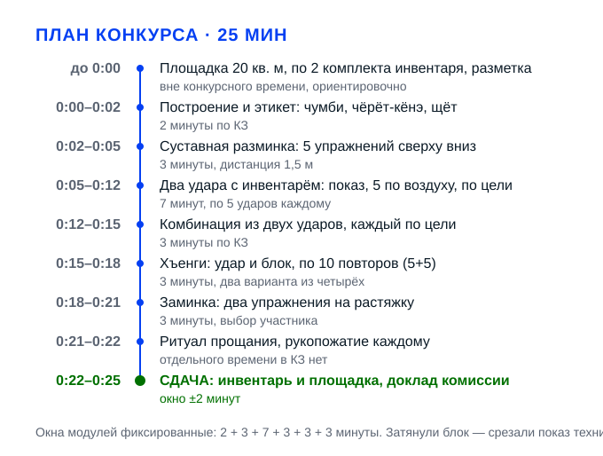
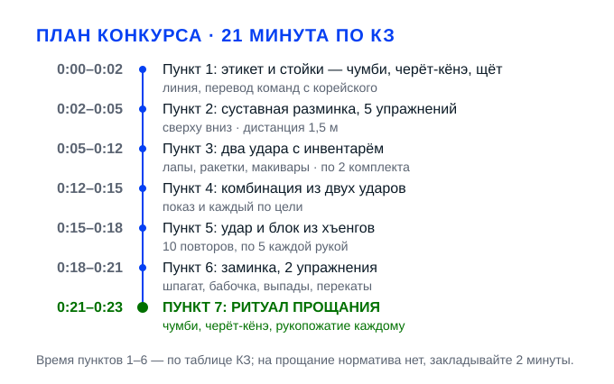

Помощник тренера (Адаптивное тхеквондо) (ФВ)
Задания ниже — официальные файлы «Абилимпикс» (источник: abilympics-russia.ru), разложенные по категориям. Решения написаны по тексту задания, регламенту и критериям оценки; в них указано, что именно проверяет эксперт.
Школьник
14–16 лет, базовый уровень заданияВ официальном файле категории не разделены отдельными разделами — приводим задание целиком; различия по категориям смотрите в таблице модулей.
Пошаговое решение
Конкурсное задание этой компетенции — не спарринг и не показательное выступление, а короткая тренировка, которую участник проводит сам: группа из четырёх спортсменов, будо-маты на двадцать квадратных метров, инвентарь из лап, макивар и ракеток по два комплекта каждого. Задание собрано из семи этапов с жёстким хронометражем: две минуты на этикет и построение, три на суставную разминку, семь на два удара с инвентарём, три на комбинацию, три на удар и блок из хъенгов, и ещё около трёх минут на заминку с ритуалом прощания. Внутри почти каждого этапа есть обязательные количественные требования: пять повторов по воздуху, по три-четыре удара по цели на человека, десять повторов блока по пять каждой рукой, дистанция полтора метра. Именно поэтому решение ниже идёт шаг за шагом по хронометражу задания: сначала то, что нужно сделать руками и голосом, затем зачем это нужно по критериям, затем как проверить результат и какая ошибка обычно съедает время или баллы. Читайте его как план проведения тренировки, а не как список терминов: половина оценки здесь ставится за управление группой — за то, видит ли участник каждого из четверых и успевает ли поправить до того, как ошибка закрепится.

Задача 1. Открыть тренировку: построение и этикетЭтап 1 конкурсного задания · 2 минуты
Первые две минуты задают всё остальное. Нужно собрать группу из четырёх спортсменов в линию, проверить площадку и форму, а затем показать три стойки по корейским командам — чумби, чарёт кёнэ и щёт — и обязательно перевести каждое слово на русский. В конкурсном задании этот этап стоит первым и длится ровно две минуты, поэтому говорят здесь коротко, а показывают точно: у группы с особенностями ментального развития понимание идёт через показ, а не через объяснение. Всё, что вы наработаете на этом этапе — тишина в линии, одинаковая дистанция, понятные команды — потом экономит минуты на разминке и на ударах.
Действие 1.1. Подготовить площадку и построить группу
Шаг 1.1.1
До того как звать группу, проходим площадку по периметру: двадцать квадратных метров будо-матов «ласточкин хвост» должны быть сомкнуты в замок, без щелей между плитками и без завернувшихся краёв. Проверяем ногой каждый стык на линии движения — подошвой, не носком, чтобы не споткнуться самому. Инвентарь — лапы, ракетки, макивары по два комплекта каждого — уносим за границу матов и ставим так, чтобы к нему был свободный подход и он не лежал на пути спортсменов. Свободную зону в один метр оставляем у стены: там встанет группа на построение.
Площадка и безопасность — первое, что эксперт осматривает вместе с участником, и любая щель в матах на этапе разминки превращается в подвёрнутую стопу на ударах. Кроме того, инвентарь, лежащий внутри рабочей зоны, — это ещё и потеря времени: на этапе имитации техники с инвентарём у вас семь минут, и тратить их на поиск второй лапы нельзя. Ровные маты дают ещё один эффект: спортсмены видят границу площадки и держатся в ней без напоминаний.
Проверьте тремя движениями: пройдите по периметру и по диагонали, не глядя под ноги — не должно быть провалов и зацепов; нажмите ладонью на каждый угол, плитки не играют; посмотрите на площадку от входа — инвентарь весь за матами, рабочее поле пустое. Если стык расходится, сдвигаем плитки ладонями, а не пинком.
Частая ошибка — проверить только центр, где вы стоите, и оставить разошедшийся стык у края: спортсмены на разминке расходятся как раз к краям, и первый же шаг в щель даёт растяжение. Вторая — сложить инвентарь в кучу у самой линии построения: дети наступают на лапы, инвентарь скользит, и вместо показа удара вы начинаете с уборки.
Эксперт обходит площадку вместе с участником в первые секунды и отмечает, осмотрел ли он маты и убрал ли инвентарь из рабочей зоны, — это видно по движению, а не по словам.
Шаг 1.1.2
Ставим группу в одну линию лицом к себе на расстоянии полутора метров между спортсменами — это тот же интервал, который задание требует для разминки, поэтому линию сразу размечаем по нему и не перестраиваем дважды. Команду подаём громко и коротко: «В одну линию, интервал полтора метра, становись». Сами встаём напротив середины линии на расстоянии двух-трёх метров, чтобы видеть всех четверых одновременно, не поворачивая головы. Спортсменам с нарушением слуха дополнительно показываем рукой место и интервал.
Линия — это не строевая формальность, а способ управления вниманием: в линии каждый видит вас и соседа, никто не заслонён, и команду выполняют одновременно. Полтора метра — требование задания, и оно же страховая дистанция: на разминке вращение рук в сторону соседа при меньшем интервале заканчивается ударом по лицу. Если кто-то встал криво, линия рассыпается на глазах, и дальше вы тратите время на перестановки.
Смотрим вдоль линии от края: четыре пары пяток на одной прямой, между ними одинаковые промежутки, никто не выдвинут вперёд. Проверьте расстояние от крайнего спортсмена до инвентаря и до стены — не меньше метра. Если линия «поехала», поправляем двух-трёх спортсменов рукой, а не словами.
Типичная ошибка — построить группу в шеренгу по двое или полукругом «чтобы всем было видно»: полукруг сразу даёт разную дистанцию и разный угол обзора, и на команде «чумби» половина группы делает стойку не в ту сторону. Вторая — встать слишком близко к линии: вы не видите крайних, и они перестают работать через минуту.
Эксперт смотрит именно на интервал и на положение самого участника относительно линии: видит ли он всех четверых, не приходится ли ему наклоняться, чтобы обратиться к крайнему.
Шаг 1.1.3
Быстро, по одному движению на человека, проверяем форму: добок застёгнут, пояс завязан и не волочится, рукава не закрывают кисть, ногти короткие. Украшения — часы, браслеты, серьги-кольца — снимаем и просим положить на край площадки, вне зоны движения. Обувь: если группа в спортивной обуви, проверяем шнуровку и подошву; если босиком — смотрим, нет ли на матах влаги, и вытираем её полотенцем до начала работы.
Это пункт безопасности, а не педантизм: длинный пояс на вращении туловищем цепляется за руку соседа, а кольцо на ударной руке при работе по лапе травмирует и палец, и партнёра. На площадке с будо-матами босая стопа при мокром пятне уходит вперёд, и спортсмен падает на ровном месте. Форма и снятые украшения — единственная страховка, которая работает без вашего участия.
Осматриваем линию слева направо одним проходом: у всех завязаны пояса на одной высоте, на запястьях и пальцах ничего нет, шнурки спрятаны. Проверьте маты под ногами группы: тёмных пятен влаги быть не должно. Спорные случаи решаем сразу — просим снять, а не запоминаем на будущее.
Пропустить часы «они же не мешают»: на ударе рукой по макиваре металл бьёт по кости, и спортсмен бросает работу. Вторая ошибка — не заметить развязанный пояс: на первом же повороте его наступает сосед, и линия разваливается на середине этапа.
Эксперт фиксирует проверку формы в первые секунды, оценивая её как часть готовности к тренировке: замечает ли участник, что у одного из спортсменов развязан пояс или надеты часы.
Действие 1.2. Показать три стойки по командам и перевести их
Шаг 1.2.1
Даём команду «чумби» и одновременно показываем стойку сами: ноги на ширине плеч, стопы параллельно, колени слегка согнуты, вес распределён на обе ноги, кулаки сжаты и подведены к поясу на уровне пупка, локти отведены назад. Держим стойку три-четыре секунды, чтобы группа успела скопировать, и только потом говорим: «Чумби — это стойка готовности, положение тела перед началом любого действия». Просим всех повторить и проходим вдоль линии, поправляя глубину приседа и положение кулаков.
Перевод команды — прямое требование задания: смысл корейских слов должен быть объяснён по-русски, иначе спортсмен выполняет движение механически и не удерживает его в комбинации. Стойка готовности — база для всех последующих ударов и блоков: из неё начинается и удар рукой, и блок, и переход в комбинацию. Если группа стоит в чумби расслабленно, на этапе имитации техники с инвентарём каждый удар придётся начинать заново.
Признаки правильной стойки видны сбоку: колено не уходит за носок, спина прямая, таз не отставлен, кулаки на одной линии у пояса, большие пальцы снаружи. Проверьте двух спортсменов в середине линии и одного на краю — если стойка держится у них, она держится у всех. Стойка считается освоенной, когда группа удерживает её пять счётов без напоминания.
Самая частая ошибка — показать стойку и сразу перейти к следующей команде: группа не успевает скопировать, и половина стоит в расслабленных ногах. Вторая — объяснять стойку словами, стоя в ней же, но без акцента на кулаках у пояса: спортсмены опускают руки вниз, и на ударе рука идёт не от пояса, а от бедра.
Эксперт смотрит, держит ли участник стойку сам во время показа: если он показывает чумби из расслабленного положения, копировать нечего, и это сразу видно.
Шаг 1.2.2
По команде «чарёт кёнэ» показываем положение «смирно» и поклон: пятки вместе, носки разведены примерно на тридцать градусов, руки выпрямлены и прижаты к бёдрам, спина прямая, взгляд вперёд. Затем наклоняем корпус вперёд примерно на пятнадцать-двадцать градусов, не сгибая шею, и держим поклон два счёта. Проговариваем перевод по частям: «чарёт» — внимание, «кёнэ» — поклон, вместе это команда «смирно, поклон», которой начинается и заканчивается каждая тренировка по тхэквондо.
Поклон — часть этикета, который задание требует показать и объяснить именно словами, с переводом. В тхэквондо он открывает и закрывает занятие, поэтому на этапе прощания вы вернётесь к этим же двум командам, и здесь закладывается их правильная форма. Кроме того, синхронный поклон собирает группу: после него спортсмены стоят ровно и слушают, а не переговариваются.
Проверяем три вещи: пятки вместе и носки разведены, руки прижаты, наклон идёт от таза, а не от шеи. Поклон должен быть одинаковым у всех четверых — если один кланяется глубоко, а другой кивает, линия читается как необученная. Держим поклон на счёт «раз-два» и только потом выпрямляемся.
Ошибка — кланяться, сгибая только шею и глядя в пол: это выглядит как кивок и не соответствует этикету. Вторая — не объяснить, что поклон делают перед тренером и после его команды, а не по собственному желанию: на прощании группа начнёт кланяться вразнобой.
Эксперт оценивает, объяснил ли участник значение команды по-русски и делает ли поклон сам, вместе с группой, а не только командует. Смотрит он и на глубину наклона: у всех четверых она должна быть одинаковой, иначе линия читается как необученная.
Шаг 1.2.3
Третья команда — «щёт»: показываем вольно, то есть свободную стойку, в которой можно опустить руки и чуть сдвинуть ноги, но нельзя выходить из линии и разговаривать. Держим её две-три секунды и переводим: «щёт» — вольно, команда, разрешающая расслабиться между заданиями. Сразу показываем обратный переход: по команде «чумби» группа возвращается в стойку готовности, руки к поясу, взгляд вперёд. Прогоняем связку «щёт — чумби» дважды, чтобы переход был отработан, а не объяснён.
Именно эта команда позволяет управлять темпом двухминутного этапа: пока группа в вольной стойке, вы успеваете сказать главное, а по «чумби» снова получаете внимание и ровную линию. Без неё спортсмены либо стоят в напряжении всю минуту и устают, либо расходятся по площадке. Возврат в чумби — это ещё и проверка, что группа слушает команды, а не просто повторяет движения.
Проверьте, что после «щёт» вся линия вернулась на прежние места: пятки на одной прямой, интервал полтора метра сохранился. Если кто-то вышел вперёд или сместился к соседу, переход не отработан — повторяем связку ещё раз. Признак готовности: команда выполняется без вашего показа, только по слову.
Ошибка — превратить «щёт» в паузу для разговоров: группа теряет линию, и следующую команду приходится собирать заново. Вторая — не показать возврат в чумби и оставить спортсменов в вольной стойке перед разминкой, где нужна ровная дистанция полтора метра.
Эксперт слушает, как звучат команды: коротко, громко, с чётким разделением, и смотрит, возвращается ли линия в исходное положение без дополнительных указаний.
Шаг 1.2.4
Собираем всё в один прогон: «чумби» — стойка готовности, «чарёт кёнэ» — смирно и поклон, «щёт» — вольно, снова «чумби». Ведём без пауз на объяснения, только команда и показ, темп — примерно одна команда в четыре-пять секунд, весь прогон укладывается в двадцать секунд. Затем коротко подводим итог: называем три слова и три значения, чтобы группа запомнила не движения, а смысл. На весь этап по заданию отведено две минуты, и после прогона у вас должно остаться несколько секунд запаса.
Слитный прогон нужен потому, что на этапе прощания эти же команды звучат снова, и там их выполнение уже не объясняют, а просто дают. Если в первый раз группа слышала три отдельные команды с длинными паузами, на финале она снова начнёт разбираться. Двадцать секунд прогона — это дешёвая страховка от потери темпа в конце тренировки, где времени на объяснения нет.
Признак успеха: все четыре спортсмена выполняют три положения подряд без показа, с одинаковой амплитудой, и в линии нет разнобоя. Проверьте по часам или по счёту — прогон не должен занимать больше тридцати секунд, иначе вы выходите за две минуты этапа. Если кто-то сбивается, повторяем только его команду, а не весь прогон.
Ошибка — увлечься объяснением терминов и не оставить времени на прогон: группа выходит на разминку, зная перевод, но не умея выполнить стойку. Вторая — гнать прогон в темпе, где спортсмены не успевают: движение получается рваным, и на видео это выглядит как необученная группа.
Эксперт смотрит на связку целиком: переводит ли участник команды, показывает ли их сам и добивается ли синхронного выполнения, не повторяя объяснение по кругу.
Задача 2. Провести суставную разминку из пяти упражненийЭтап 2 конкурсного задания · 3 минуты
Разминка идёт строго сверху вниз и ровно из пяти упражнений: вращение головой, вращение руками, вращение туловищем, вращение в коленях и вращение на уровне голеностопа. На этап отведено три минуты, то есть примерно тридцать секунд на упражнение вместе со счётом и показом, и это очень жёсткий лимит: любое объяснение дольше фразы съедает следующее упражнение. Перед началом группа стоит на дистанции полтора метра, а вы объясняете, зачем тренировка начинается с разминки — коротко, одной мыслью, потому что группа с особенностями ментального развития удерживает внимание на одном тезисе.
Действие 2.1. Объяснить смысл разминки и расставить группу
Шаг 2.1.1
Перед первым упражнением говорим одну короткую фразу и подкрепляем её движением: «Любая тренировка начинается с разминки — мы разогреваем суставы, чтобы не потянуть связки и не получить травму». Сразу показываем ладонью на свой плечевой сустав и делаем два медленных вращения, чтобы слово «сустав» связалось с движением, а не осталось абстракцией. Дальше не объясняем, а работаем: на весь этап три минуты, и минута объяснений оставит вам по двадцать секунд на упражнение.
Задание прямо требует объяснить спортсменам, что любая тренировка начинается с разминки, и это не формальность: на разминке закладывается понимание, зачем вообще выполняется каждое движение. Для группы с особенностями ментального развития работает короткая формула плюс показ — длинное объяснение они не удержат, а короткое запомнят и повторят на следующем занятии. Кроме того, объяснение сразу задаёт вашу роль: вы ведёте, а не просто стоите рядом.
Признак того, что объяснение сработало: группа стоит в линии, смотрит на вас, никто не переспрашивает, что делать. Если после фразы кто-то начал крутить головой сам — это хороший знак, значит связь «разминка — сустав» установилась. Проверьте, что вы не перешли на монолог: больше двух предложений на этом этапе — уже потеря времени.
Ошибка — читать лекцию про физиологию разминки: две минуты из трёх уходят на слова, и разминка заканчивается на третьем упражнении. Вторая — объяснять, стоя в вольной стойке и не показывая сустав: спортсмены слышат слова, но не связывают их с телом.
Эксперт слушает именно эту короткую фразу и отмечает, прозвучало ли объяснение до начала движений, а не после первого упражнения. Заодно он смотрит, показал ли участник сустав рукой: жест здесь заменяет половину объяснения.
Шаг 2.1.2
Расставляем группу на дистанции полтора метра: просим сделать два шага в стороны от соседа и проверяем расстояние по вытянутой руке — вытянутая рука не должна доставать до плеча соседа. Сами встаём так, чтобы быть видимым всем четверым, и поворачиваемся к группе лицом; показ ведём в зеркальном отражении, то есть двигаемся так, будто группа смотрит в зеркало. Для спортсмена с нарушением слуха дублируем команду жестом руки и убеждаемся, что он видит вас, а не спину соседа.
Полтора метра — требование задания, и оно не про порядок, а про безопасность: вращение руками в сторону при меньшем интервале заканчивается ударом по соседу, а вращение туловищем с разведёнными руками требует ещё больше места. Зеркальный показ нужен потому, что спортсмены копируют вашу правую руку своей правой, и при прямом показе группа начинает двигаться навстречу, путаясь в сторонах.
Проверьте линию от края: между спортсменами одинаковые промежутки, никто не стоит за спиной другого, все видят вас. Вытянутая рука в сторону не касается соседа — это ваш измерительный инструмент на всю разминку. Если интервал нарушен, поправляем сразу, до первого вращения.
Ошибка — расставить группу плотно, «чтобы всем было видно»: на вращении руками спортсмены задевают друг друга и перестают выполнять движение. Вторая — встать в линию вместе с группой: вы теряете обзор и не видите, кто работает, а кто стоит.
Эксперт фиксирует интервал и положение участника: видно ли ему всех четверых и совпадает ли направление показа с направлением движения группы. Проверяет он и то, поправил ли участник линию до начала упражнения, а не в процессе.
Шаг 2.1.3
Проговариваем схему разминки одной фразой и показываем рукой сверху вниз: «Идём сверху вниз — голова, руки, туловище, колени, голеностоп, всего пять упражнений». Называем порядок именно так, как он пойдёт, чтобы группа заранее знала финал и не отвлекалась вопросом «а что дальше». Затем переходим к первому упражнению без паузы: показ и счёт начинаются сразу после слова «голова».
Порядок сверху вниз — требование задания, и он же физиологически правильный: крупные суставы разогреваются раньше мелких, а стопа и голеностоп, которые несут всю нагрузку на ударах, идут последними. Проговаривание схемы даёт группе предсказуемость: спортсмен с особенностями ментального развития спокойнее работает, когда знает последовательность и конец. Заодно вы сами держите структуру и не пропускаете упражнение в спешке.
Проверьте, что прозвучали все пять названий и именно в этом порядке, и что рука показала направление сверху вниз. Признак, что группа поняла: на слове «колени» никто не начинает крутить головой. Если сбились в названиях, не возвращайтесь к объяснению — просто ведите упражнения по порядку.
Ошибка — начинать разминку с рук или туловища, потому что «так удобнее»: нарушен порядок, и это отдельно фиксируется. Вторая — назвать пять упражнений, но не показать направление, и потом на «голеностопе» обнаружить, что группа уже села на маты и ждёт шпагат.
Эксперт сверяет последовательность с заданием: пять упражнений, строго сверху вниз, без добавлений и пропусков. Он слушает, названы ли все пять зон, и смотрит, показал ли участник рукой направление — сверху вниз, а не наоборот.
Действие 2.2. Выполнить пять упражнений сверху вниз
Шаг 2.2.1
Первое упражнение — вращение головой. Показываем: подбородок опущен, вращение идёт по кругу через плечо, назад и к другому плечу, амплитуда небольшая, темп медленный, шея не запрокидывается. Считаем вслух до восьми и делаем восемь вращений в одну сторону, затем восемь в другую, всего примерно двадцать секунд. Следим, чтобы группа не помогала себе корпусом: плечи остаются на месте, движется только голова.
Голова идёт первой, потому что это самая уязвимая зона при резких движениях и одновременно самая «зажатая» у детей: на ударах и блоках приходится следить за целью, и забитая шея быстро даёт головную боль. Медленный темп и малая амплитуда — принципиальны, резкое вращение головой у неподготовленного спортсмена вызывает головокружение, и он выпадает из работы на всю разминку.
Признак правильного выполнения: плечи неподвижны, подбородок описывает круг над ключицей, глаза открыты, никто не запрокидывает голову назад. Проверьте двух спортсменов по краям — у них хуже всего виден ваш показ. Если кто-то крутит головой рывками, поставьте ему ладонь на плечо и поведите движение медленнее.
Ошибка — крутить головой быстро и с полной амплитудой: у спортсмена темнеет в глазах, и он садится на маты. Вторая — разрешить помогать корпусом: тогда работает не шея, а поясница, и упражнение теряет смысл, а на показе это выглядит как наклон вбок.
Эксперт смотрит на темп и амплитуду: разминка должна быть медленной и контролируемой, а не быстрой «для галочки». Он отмечает и то, считает ли участник вслух: без счёта группа теряет ритм уже на первом упражнении.
Шаг 2.2.2
Второе упражнение — вращение руками. Показываем три уровня подряд: кисти в замке вращаются по кругу, затем предплечья в локтях, затем прямые руки описывают большие круги вперёд и назад. На каждый уровень по восемь счётов, большие круги — по восемь вперёд и восемь назад. Руки разведены в стороны настолько, чтобы не касаться соседа: интервал полтора метра как раз это и обеспечивает.
Плечевой пояс — рабочая зона всех ударов рукой, и разогревать его нужно по частям, от мелких суставов к крупным: иначе на первом же прямом ударе по лапе спортсмен получает растяжение в плече. Круговые движения прямыми руками заодно раскрывают грудной отдел, который у детей, проводящих много времени за столом, зажат. Восемь счётов на уровень — это ровно тот объём, за который сустав успевает разогреться и не устать.
Проверяем по звуку и по амплитуде: движение идёт без хруста и рывков, круги ровные, кисти не разлетаются в стороны. Плечи не поднимаются к ушам — если поднимаются, спортсмен напрягается и работает не в полную амплитуду. Убедитесь, что крайние в линии не задевают соседей и стены.
Ошибка — ограничиться вращением кистей и пропустить большие круги руками: плечо остаётся холодным, и на ударах рукой появляется боль. Вторая — делать круги прямыми руками слишком быстро, с рывком в верхней точке: это самое частое место растяжения дельтовидной мышцы.
Эксперт отмечает, разогреты ли плечи и не заменено ли упражнение одним видом вращения вместо трёх: ему видно, работают ли кисти, локти и большие круги прямыми руками по отдельности, а не одно движение на весь блок.
Шаг 2.2.3
Третье упражнение — вращение туловищем. Ставим ноги чуть шире плеч, руки на пояс, и вращаем корпусом по кругу: вперёд, в сторону, назад, в другую сторону, при этом таз остаётся на месте, а движение идёт от поясницы. Восемь кругов в одну сторону, восемь в другую, темп медленнее, чем на руках, амплитуда — до комфортного предела, без наклона головы. Голова поворачивается вместе с корпусом, взгляд ведёт движение.
Туловище связывает руки и ноги: на ударах ногами корпус разворачивается, и неразогретая поясница — типичная причина боли после тренировки. Вращение стоя, с фиксированным тазом, разогревает именно поясничный отдел и косые мышцы, которые работают в скрутке при ударе. Восемь кругов в каждую сторону дают симметричную нагрузку, что важно: у детей с особенностями развития часто одна сторона заметно слабее.
Проверьте, что таз не «ездит»: положите ладонь на поясницу спортсмена — движение должно идти выше руки. Круги ровные, без остановок в верхней точке, дыхание не задерживается. Если спортсмен наклоняется вперёд, уменьшите амплитуду и покажите движение ещё раз сбоку.
Ошибка — вращать только плечами, оставив таз и поясницу неподвижными: упражнение превращается в повторы предыдущего, и поясница остаётся неразогретой. Вторая — гнать амплитуду до максимума и получить прострел в пояснице на первом же круге.
Эксперт смотрит на амплитуду и на то, работает ли корпус, а не руки: вращение туловищем — самостоятельное упражнение, а не продолжение вращения руками.
Шаг 2.2.4
Четвёртое упражнение — вращение в коленях. Ставим стопы вместе, ладони на колени, и описываем коленями круг: восемь вращений в одну сторону, восемь в другую, амплитуда небольшая, вес тела распределён на обе ноги, спина прямая. Затем, не меняя положения, делаем по восемь кругов в обратную сторону с чуть более широкой постановкой стоп, чтобы разогреть и тазобедренные суставы. Темп медленный, колени не выходят за носки.
Колено — самый нагружаемый сустав в тхэквондо: удары ногами идут через разворот опорной ноги, и холодное колено даёт боль уже на первых двадцати ударах. Вращение с ладонями на коленях заодно учит спортсмена контролировать положение колена относительно носка — тот самый навык, без которого удар ногой выполняется с провалом. Восемь кругов в каждую сторону — минимум, который успевает разогреть сустав за тридцать секунд.
Проверьте: колени описывают ровный круг, а не восьмёрку, стопы не отрываются от мата, вес не переносится на одну ногу. Спина прямая — если спортсмен складывается пополам, ему тяжело, и амплитуду надо уменьшить. В конце упражнения колени должны быть тёплыми на ощупь.
Ошибка — выполнять вращение коленями с прямой спиной и полной амплитудой на прямых ногах: нагрузка уходит в связки, и появляется неприятное ощущение под чашечкой. Вторая — крутить только в одну сторону, и ко второй ноге нагрузка приходит уже на ударах.
Эксперт смотрит на постановку стоп и на контроль колена: вращение не должно превращаться в наклон корпуса с провалом внутрь. Отмечает он и амплитуду: слишком широкая на прямых ногах — признак непонимания упражнения.
Шаг 2.2.5
Пятое упражнение — вращение на уровне голеностопа. Каждый спортсмен поочерёдно ставит носок одной ноги на мат и описывает круг пяткой: восемь кругов в одну сторону, восемь в другую, затем меняет ногу. Второй вариант — вращение стопой в воздухе с опорой на другую ногу: поднимаем ногу, держим равновесие, крутим стопой по восемь раз в каждую сторону. Второй вариант предпочтительнее: он заодно тренирует баланс, который нужен на ударах.
Голеностоп замыкает разминку, потому что вся ударная нагрузка идёт через стопу: на долио чаги и йоп чаги подъём стопы разворачивается, и холодный голеностоп даёт растяжение связок при первом же неудачном ударе. Упражнение с опорой на одну ногу добавляет работу на равновесие — а для группы с особенностями ментального развития это ещё и полезная координационная задача, которая удерживает внимание до конца разминки.
Проверьте, что круг описывает стопа, а не вся нога от бедра: колено остаётся почти неподвижным. Опорная нога не дрожит, спортсмен не хватается за соседа. У всех четверых проработаны обе стопы, по восемь кругов в каждую сторону — это легко проверить по счёту.
Ошибка — крутить стопой по полу, шаркая носком: движения нет, разогрева нет, а звук мешает вам считать. Вторая — сделать упражнение только на одной ноге и перейти к заминке: вторая стопа остаётся холодной, и на ударах ногами именно она подводит.
Эксперт проверяет, что разминка закончилась именно голеностопом и что проработаны обе ноги: это последнее упражнение этапа, и его пропуск виден сразу.
Действие 2.3. Уложиться в три минуты и удержать качество
Шаг 2.3.1
Во время каждого упражнения делаем один короткий проход вдоль линии и поправляем не больше двух человек: ладонью на плечо, колено или стопу, без остановки счёта. На исправление одного спортсмена уходит не больше десяти-пятнадцати секунд, и после правки сразу возвращаемся на место показа. Если ошибка повторяется у всех, не проходим по очереди, а останавливаем упражнение и показываем движение ещё раз целиком — это быстрее и понятнее.
Три минуты на пять упражнений не оставляют времени на индивидуальную работу с каждым: если вы задержитесь на одном спортсмене, следующие упражнения пойдут без показа и превратятся в формальность. Один проход по линии с двумя правками — это и есть управление группой: вы видите всех, корректируете главное и не теряете темп. Показ целиком вместо разбора по одному ещё и удерживает внимание остальных, которые в этот момент смотрят на вас, а не в пол.
Считайте время по упражнениям: каждое вместе с правками должно занимать около тридцати секунд. Если после третьего упражнения прошло больше полутора минут, дальше сокращайте не показ, а число счётов — с восьми до шести. Проверьте, что все четыре спортсмена выполнили движение хотя бы один раз правильно.
Ошибка — застрять на первом спортсмене и разбирать его стойку две минуты: разминка обрывается на втором упражнении, и этап не засчитывается целиком. Вторая — не поправлять вообще никого, «чтобы не сбить темп»: группа выполняет движения неправильно, и это видно на видео.
Эксперт следит именно за балансом: успевает ли участник пройти по линии и при этом не выпасть из графика трёх минут. Ему видно и то, кого именно участник поправил: чаще всего это крайние, которых хуже видно.
Шаг 2.3.2
Счёт ведём голосом, ровно и громко, без ускорения к концу упражнения: «раз-два-три-четыре» с одинаковым интервалом, на счёт «раз» — начало движения. Дыхание подсказываем словами: на усилии выдох, на возврате вдох. Крайним в линии, которые дальше всего от вас, дублируем счёт жестом руки или кивком, а спортсмену с нарушением слуха показываем счёт на пальцах и убеждаемся, что он смотрит на вас.
Голос — единственный инструмент, которым вы управляете группой на разминке, и ровный счёт держит всех в одном темпе: без него четверо разъезжаются по фазе за первые десять секунд. Дыхание на усилии — привычка, которую закладывают именно на разминке; на ударах она превращается в правильный выдох, без которого удар теряет силу. Дублирование жестом — доступность: спортсмен, который не слышит счёт, выпадает из группы.
Проверьте, что движения совпадают с вашим счётом: на «раз» все четверо начинают одновременно. Голос не садится к концу разминки, темп не растёт. Если кто-то отстаёт на полтакта, снизьте темп на два счёта, а не повышайте громкость.
Ошибка — считать «про себя» и показывать молча: группа теряет ритм, и разминка распадается на четыре разных темпа. Вторая — ускоряться к концу упражнения, чтобы уложиться: спортсмены начинают делать движения рывками, и вместо разогрева получают риск растяжения.
Эксперт слушает счёт: он должен быть слышен на краю площадки и совпадать с движением группы. Он отмечает и дыхание: если участник подсказывает выдох на усилии, значит понимает, зачем ведёт разминку.
Шаг 2.3.3
Заканчиваем разминку коротко и по делу: последнее вращение голеностопом, команда «щёт», затем «чумби» — и одна фраза: «Разминка закончена, суставы разогреты, переходим к ударам». Не садимся, не пьём воду, не начинаем объяснять следующий этап, пока группа не вернулась в линию: на переход к имитации техники с инвентарём у вас остаются секунды, а инвентарь ещё нужно вынести в рабочую зону.
Чёткая граница между разминкой и следующим этапом нужна, чтобы группа переключилась: после вращений спортсмены расслаблены, и без команды «чумби» они остаются в вольной стойке, а вы начинаете показ удара перед неготовой группой. Фраза о разогретых суставах закрывает и смысловую часть: спортсмен понимает, зачем была разминка, и это то, что задание требует объяснить.
Проверьте: группа стоит в чумби, линия ровная, интервал полтора метра сохранён, никто не сидит на матах. Секундомер или счётчик времени остановлен в пределах трёх минут этапа. Если кто-то ещё крутит головой, дождитесь его и только потом переходите дальше.
Ошибка — закончить разминку «на полуслове» и сразу начать говорить про удары: половина группы продолжает вращения и не слышит вас. Вторая — дать группе паузу на отдых: спортсмены садятся на маты, и поднять их обратно в линию стоит вам минуты из семи на инвентарь.
Эксперт отмечает, прозвучало ли завершение разминки и вернулась ли группа в исходное построение перед следующим этапом. Для него это маркер управления группой: пауза без команды — потеря темпа на ровном месте.
Задача 3. Обучить двум ударам с инвентарём и собрать комбинациюЭтапы 3 и 4 конкурсного задания · 7 и 3 минуты
Самая длинная часть конкурса: семь минут на два удара из списка комиссии и ещё три минуты на комбинацию из них. Комиссия называет удары из семи возможных — одинарный прямой удар рукой, двойка руками, боковой удар рукой, удар рукой снизу, ап чаги, долио чаги, йоп чаги, — и вы должны не только показать их группе из четырёх человек, но и правильно подобрать инвентарь: лапы, макивару или ракетки, по два комплекта каждого. Схема жёсткая: показали удар, объяснили правила выполнения, группа повторила по воздуху пять раз, затем вы подошли к каждому и провели удар по цели. После второго удара из них собирается короткая комбинация, и её каждый спортсмен тоже выполняет по инвентарю.
Действие 3.1. Принять задание комиссии и подобрать инвентарь
Шаг 3.1.1
Слушаем задание комиссии до конца, не перебивая, и запоминаем два удара из списка: одинарный прямой удар рукой, двойка руками, боковой удар рукой, удар рукой снизу, ап чаги, долио чаги, йоп чаги. Прежде чем взяться за инвентарь, повторяем задание вслух своими словами — «первый удар прямой рукой, второй долио чаги» — и ждём подтверждения. Если название звучит незнакомо или комиссия назвала удар из хъенгов, уточняем сразу, а не после первой демонстрации: переиграть задание потом нельзя.
Точность приёма задания — это условие зачёта всей семи минуты: если вы обучаете не тот удар, дальше не имеет значения, насколько красиво вы его показали. Проговаривание вслух защищает от самой обидной ошибки — услышать «долио чаги» и показать «ап чаги», потому что этот удар вы отрабатывали дома чаще. Кроме того, комиссия видит, что задание понято, и не тратит своё время на повтор.
Проверьте себя тремя вопросами: сколько ударов названо, какие именно и есть ли среди них удар ногой. Если хотя бы на один вопрос ответа нет, задайте его комиссии до того, как возьмёте лапу. Признак того, что задание принято верно: вы можете назвать оба удара и порядок их показа, не подглядывая в записи.
Ошибка — кивнуть и начать работу, не уточнив второй удар: половина семиминутного этапа уходит не туда, и переучить группу за оставшееся время невозможно. Вторая — принять задание на слух в шуме зала и переспросить уже с лапой в руках: это выглядит как неготовность и отнимает время у группы.
Эксперт смотрит на первый контакт с комиссией: переспросил ли участник, повторил ли задание и не начал ли показ, не убедившись, что понял. Ему видно и то, уточнил ли участник незнакомое название сразу, а не после первой ошибки группы.
Шаг 3.1.2
Подбираем инвентарь под конкретный удар. Для ударов рукой берём лапы: их держат перед собой на уровне груди или головы, и они дают хлопок, по которому спортсмен слышит попадание. Ракетки удобны для точности — маленькая площадь заставляет бить ровно в центр, их берут для прямого удара и двойки. Для ударов ногой нужна макивара или лапа большего размера: удар ногой тяжелее, и держать его на весу одной рукой без подготовки рискованно. По заданию инвентаря по два комплекта каждого вида, поэтому выбираем два вида и берём оба комплекта, чтобы работать с четырьмя спортсменами без очереди.
Правильно выбранный инвентарь — отдельный пункт задания, и он влияет на всё остальное: ракеткой не принимают удар ногой, а макиварой на вытянутой руке не принимают прямой удар рукой, потому что спортсмен бьёт по инерции в корпус. Два комплекта нужны из практических соображений: пока вы работаете с одним спортсменом, второй комплект уже стоит у следующего, и группа не простаивает. Семь минут на два удара — это очень мало, и очередь съедает их быстрее всего.
Проверьте инвентарь руками: крепления целые, ремни не перекручены, поверхность не порвана, набивка не сбилась в ком. Лапы и макивары должны быть парными — одинакового размера и жёсткости, иначе группа получает разный отклик. Разложите выбранное в двух метрах от линии, каждую пару отдельно, чтобы не искать вторую лапу в середине этапа.
Ошибка — взять «что ближе лежит» и показывать удар ногой по ракетке: спортсмен промахивается, теряет уверенность, а вы тратите время на уговоры. Вторая — взять один комплект на четверых и выстроить очередь: за семь минут двое успевают ударить по три раза, остальные стоят и мёрзнут.
Эксперт фиксирует, какой инвентарь выбран и соответствует ли он ударам, которые назвала комиссия: несоответствие видно с первого взгляда. Он же отмечает, взяты ли оба комплекта: один комплект на четверых читается как очередь.
Шаг 3.1.3
Выносим инвентарь в рабочую зону и сразу готовим страховку: проверяем, что на руках у вас нет часов и колец, а спортсмены работают без обуви или в спортивной обуви с целой подошвой. Лапы держим двумя руками, прижимая к корпусу, а не на вытянутой руке. Командуем группе остаться в линии в полутора метрах позади вас, пока вы показываете удар: спортсмен, стоящий рядом с бьющим, получает локтем или коленом в лицо чаще, чем кажется.
Порядок в рабочей зоне — вопрос не эстетики, а травматизма: на площадке двадцать квадратных метров, четыре спортсмена и двое одновременно бьющих не помещаются. Отведённая линия ожидания даёт вам свободный коридор для показа и позволяет видеть всех четверых. Прижатая к корпусу лапа гасит удар и защищает вашу кисть, а вытянутая рука — прямой путь к растяжению запястья на первом же сильном ударе.
Проверьте три вещи: инвентарь лежит так, что к нему не надо перешагивать через спортсменов; линия ожидания сохраняется полтора метра; у вас свободны руки и нет ничего в карманах. Если кто-то вышел из линии и стоит в коридоре удара, возвращаем его до начала показа, а не в момент удара.
Ошибка — показать удар, стоя вплотную к группе: спортсмены в полуметре, и первый же удар ногой идёт в их сторону. Вторая — держать лапу одной рукой на вытяжении «чтобы было видно»: на ударе рукой лапа уходит назад, и вы получаете растяжение запястья.
Эксперт оценивает организацию рабочей зоны глазами: есть ли линия ожидания, свободен ли коридор и держит ли участник инвентарь двумя руками. Отдельно фиксируется, держит ли участник инвентарь двумя руками — это признак понимания удара.
Действие 3.2. Обучить первому удару и отработать его по цели
Шаг 3.2.1
Показываем первый удар в полной форме, стоя лицом к группе и в зеркальном отражении, два-три раза подряд с одной и той же скоростью. Сначала медленно, по фазам: исходное положение в чумби, перенос веса, движение руки или ноги, фиксация в конечной точке, возврат. Затем один раз в боевом темпе, чтобы группа увидела, как это выглядит целиком. Каждый показ сопровождаем короткой фразой о главном элементе — например, «кулак идёт от пояса, локоть не разлетается».
Показ — основной канал обучения для группы с особенностями ментального развития, и повторяющийся одинаковый показ позволяет скопировать форму. Медленный показ по фазам нужен, чтобы спортсмен увидел, откуда идёт движение и где заканчивается, а один быстрый — чтобы у него был образец темпа. Задание прямо требует продемонстрировать удар перед спортсменами, и именно качество показа, а не количество объяснений определяет, получится ли у группы.
Проверьте, что все четверо видят вас: никто не стоит за спиной соседа, вы не закрываете удар собственным корпусом. Показ должен быть одинаковым во всех повторах — если вы каждый раз делаете по-разному, группа не сформирует образца. Признак, что показ сработал: спортсмены начинают повторять движение по воздуху, не дожидаясь команды.
Ошибка — показать удар один раз и сразу перейти к объяснению: половина группы не успевает увидеть фазу, и дальше они бьют «как получится». Вторая — показывать стоя боком к группе: зеркальное отражение теряется, и спортсмены повторяют движение не той рукой и не той ногой.
Эксперт смотрит на сам показ: чистая ли форма, повторяется ли движение одинаково и видно ли его всем четверым. Ему важно и количество повторов показа: один показ он считает недостаточным для группы из четверых.
Шаг 3.2.2
Объясняем правила выполнения коротко и по трём точкам: откуда идёт движение, куда направлен удар и что делает вторая рука или опорная нога. Для удара рукой говорим про кулак, разворот плеча и возврат руки к поясу; для удара ногой — про разворот опорной стопы, подъём колена и хлёсткое движение голенью. Показываем каждую точку отдельно, а не описываем удар целиком: одно объяснение — один элемент, после каждого короткий повтор группой.
Без объяснения правил группа копирует внешнюю форму и не понимает механику: удар получается толкающим, без вложения веса, и на цели виден слабый хлопок. Разворот опорной стопы — самый пропускаемый элемент у новичков, и именно из-за него удары ногами выглядят неубедительно. Задание отдельно требует кратко рассказать правила выполнения, и здесь важна не полнота, а точность: три элемента, названные по одному разу, работают лучше десяти названных подряд.
Проверьте понимание вопросом к группе: попросите одного спортсмена повторить, с чего начинается удар. Если он называет движение руки, а не перенос веса, объяснение не дошло. Признак правильного объяснения — группа выполняет движение в нужную сторону и нужной конечностью с первого повтора.
Ошибка — прочитать лекцию про биомеханику на две минуты: семь минут этапа не выдержат, и на отработку останется три. Вторая — объяснять правила, стоя в расслабленной стойке: спортсмены смотрят на ваши руки, а не слушают, и в голове остаётся только поза.
Эксперт слушает объяснение и сверяет его с показом: совпадает ли то, что участник говорит, с тем, что он делает. Если слова участника расходятся с движением, объяснение он не засчитывает.
Шаг 3.2.3
Даём команду на пять повторов по воздуху: «пять раз, считаю вслух, без цели». Считаем громко и ровно, ведём темп чуть медленнее боевого, чтобы группа успевала доводить движение до конечной точки и возвращаться в стойку. Идём вдоль линии и смотрим на две вещи: доходит ли удар до полной амплитуды и возвращается ли рука или нога в исходное положение после каждого повтора. Пять повторов — это ровно тот объём, за который форма закрепляется, но ещё не наступает усталость.
Отработка по воздуху нужна до работы по цели, потому что на цели спортсмен думает о попадании и перестаёт следить за формой: если пять повторов сделаны правильно, форма переносится на удар по лапе. Пять раз — требование задания, и оно совпадает с физиологией: на третьем повторе движение становится уверенным, на пятом закрепляется, а с седьмого у новичка начинает падать амплитуда. Кроме того, воздушные повторы дают вам возможность увидеть ошибку до того, как спортсмен ударит по инвентарю.
Проверьте: все четыре спортсмена выполнили пять повторов, движение начинается и заканчивается в стойке, никто не бьёт «в полсилы». Считайте вслух так, чтобы на «пять» группа остановилась и вернулась в чумби. Если кто-то потерял счёт, не начинайте заново — поправьте его и продолжите с текущего номера.
Ошибка — дать пятнадцать повторов «для закрепления»: группа устаёт, форма рассыпается, и на цель спортсмен выходит с опущенными руками. Вторая — не считать вслух: четверо сбиваются в разный темп, и вы не можете понять, кто сделал пять, а кто три.
Эксперт считает повторы вместе с участником и смотрит, доводит ли группа движение до конечной точки или обозначает его. Для него важен и счёт: по нему видно, знает ли участник, что повторов должно быть ровно пять.
Шаг 3.2.4
Переходим к работе по цели: встаём в двух-трёх метрах от линии, держим лапу перед собой на уровне, соответствующем удару, и приглашаем спортсменов по одному. Каждому даём три-четыре удара, а не один: первый — пристрелочный, на нём видно дистанцию, остальные — рабочие. Между ударами возвращаем лапу в исходное положение и говорим коротко: «ещё раз, локоть выше» или «стопа развернулась, хорошо». После четвёртого спортсмена сразу возвращаем группу в линию и переходим ко второму удару.
Работа по цели — отдельный пункт задания: комиссия проверяет, подошёл ли участник к каждому спортсмену, а не ограничился общим показом. Три-четыре удара на человека — это баланс между качеством и временем: за один удар не исправить дистанцию, за десять вы не успеете обойти всех четверых и останетесь без второго удара. Короткая подсказка между ударами работает лучше разбора после: спортсмен слышит её в момент, когда движение ещё в теле, и сразу исправляет.
Проверьте по счёту: каждый из четверых ударил по цели не меньше трёх раз, и каждый получил хотя бы одну персональную подсказку. Слышен хлопок — значит удар дошёл до центра лапы, а не прошёл мимо. Если спортсмен бьёт с промахом, сократите дистанцию на полшага и подставьте лапу ближе.
Ошибка — встать в центр и принимать удары «в очередь», не подходя к каждому: двое бьют, двое стоят, и комиссия видит, что индивидуальной работы не было. Вторая — держать лапу слишком далеко: спортсмен тянется, теряет стойку и бьёт вполсилы, а вы решаете, что он не понял технику.
Эксперт фиксирует, подошёл ли участник к каждому спортсмену и дал ли персональную обратную связь, а не общие слова на всю группу. Ему видно, даёт ли участник подсказку в момент удара, а не после всей серии.
Действие 3.3. Обучить второму удару и собрать из двух ударов комбинацию
Шаг 3.3.1
Второй удар показываем так же, но с акцентом на отличие от первого: называем вслух, чем он отличается — другая рука или нога, другая траектория, другая дистанция. Показ ведём дважды медленно и один раз в темпе, а затем ставим два удара рядом: сначала первый, пауза, второй. Такое сопоставление даёт группе связку, из которой потом вырастет комбинация, и экономит объяснение на четвёртом этапе.
Второй удар почти всегда путается с первым: спортсмены переносят на него форму предыдущего движения, особенно если оба удара рукой. Явное сопоставление снимает эту путаницу до начала отработки, а не после десяти попыток. Кроме того, к четвёртому этапу группа должна выполнять два удара подряд без подсказки — иначе комбинация превращается в два отдельных движения с паузой, и на три минуты этапа её не собрать.
Проверьте, что группа различает удары: попросите по команде «первый» и «второй» выполнить нужный. Если половина делает не тот удар, повторите сопоставление ещё раз, прежде чем переходить к воздушным повторам. Признак готовности — спортсмены называют отличие сами, своими словами.
Ошибка — показать второй удар как новый, не связав с первым: группа выполняет его отдельно и на комбинации останавливается между движениями. Вторая — объяснять отличие слишком долго, перечисляя пять признаков: запоминается один, и то не тот, который нужен.
Эксперт смотрит, показал ли участник оба удара и объяснил ли разницу между ними так, чтобы группа её воспроизвела. Он же смотрит, называет ли участник отличие второго удара сам, а не ждёт вопроса.
Шаг 3.3.2
Пять повторов второго удара по воздуху ведём по той же схеме: громкий счёт, медленный темп, полная амплитуда, возврат в стойку после каждого повтора. Особое внимание — на то, чтобы спортсмены не начинали второй удар из положения после первого: каждый повтор начинается из чумби, иначе форма плывёт. Проходим вдоль линии один раз и поправляем не больше двух человек, остальным даём короткую общую подсказку на всю группу.
Пять повторов — то же требование задания, что и для первого удара, и та же логика: форма должна закрепиться до появления цели. Начинать каждый повтор из исходной стойки нужно потому, что в комбинации удары идут подряд, и если спортсмен привык выходить из предыдущего положения, в связке он потеряет равновесие. Один проход по линии с двумя правками — это управление временем: семь минут уже наполовину израсходованы.
Проверьте: пять повторов выполнены всеми, каждый начинается из чумби, движение доходит до конечной точки. Если у кого-то удар «вялый», дело чаще всего в опорной ноге или в развороте плеча — подскажите одну вещь, а не три. К концу повторов группа должна держать темп без счёта.
Ошибка — оставить второй удар без воздушных повторов и сразу поставить цель: спортсмен бьёт по лапе неверной формой, и переучить его сложнее, чем научить. Вторая — вести повторы в быстром темпе, чтобы «успеть»: амплитуда падает, и на цели видно размашистое, но пустое движение.
Эксперт считает повторы и смотрит на исходное положение: возвращается ли группа в стойку между ударами. Ему важно, чтобы повторов было ровно пять и чтобы группа возвращалась в стойку между ними.
Шаг 3.3.3
Работаем по цели со вторым ударом так же, как с первым: приглашаем по одному, даём три удара, поправляем по одному элементу между ударами и обязательно хвалим за попадание. Инвентарь под второй удар держим соответственно — для удара ногой это макивара или крупная лапа, прижатая к корпусу, для удара рукой — лапа или ракетка. После четвёртого спортсмена сразу собираем группу в линию: следующий этап — комбинация, и на неё по заданию отведено три минуты.
Второй удар по цели завершает обучающую часть, и именно здесь комиссия видит, научила ли группа что-то или просто повторяла движения. Похвала за попадание здесь не вежливость, а инструмент: у спортсменов с особенностями развития уверенность в движении растёт от подтверждения, и на комбинации они будут работать смелее. Три удара на человека — это тот минимум, при котором видно, попал ли спортсмен в центр или бьёт по краю инвентаря.
Проверьте: каждый из четверых ударил по цели три раза, инвентарь соответствует удару, хлопок слышен. Если кто-то бьёт мимо, проверьте дистанцию — чаще всего спортсмен стоит слишком далеко и достаёт удар только носком. Убедитесь, что после работы никто не остался без обратной связи.
Ошибка — держать макивару одной рукой под удар ногой: на третьем ударе её выбивает, и вы теряете и время, и доверие группы. Вторая — принимать удары, стоя спиной к остальным: двое ждут в стороне и не видят, что происходит, а вы не видите, чем они заняты.
Эксперт отмечает, подошёл ли участник к каждому и дал ли обратную связь, а также соответствует ли инвентарь второму удару. Он отмечает и инвентарь: под удар ногой должна быть макивара или крупная лапа.
Шаг 3.3.4
Собираем комбинацию из двух выученных ударов и показываем её целиком: первый удар, короткая пауза на возврат, сразу второй, фиксация в стойке. Объясняем связку одной фразой — как переходить от первого ко второму, куда смотрит взгляд, на какой счёт идёт каждое движение. Затем каждый спортсмен выполняет комбинацию по цели по два-три раза, а вы держите инвентарь и считаете: «раз — прямой, два — долио». На этап отведено три минуты, и на четверых это как раз два круга.
Комбинация — отдельный этап задания, и её оценивают отдельно от ударов: здесь видно, научил ли участник группу, а не только показал движения. Связка из двух ударов требует перехода, которого не было в одиночных повторах, и именно на переходе спортсмены теряют равновесие. Счёт голосом помогает удержать ритм и одновременно подсказывает, где ставить паузу. Два-три повтора на человека — это максимум, который вмещают три минуты вместе с показом.
Проверьте: каждый спортсмен выполнил комбинацию по цели не меньше двух раз, между ударами нет провала в стойке, оба удара идут в цель, а не в воздух. Если спортсмен останавливается между ударами, считайте громче и чуть быстрее. Признак готовности группы — комбинация выполняется без вашего счёта.
Ошибка — собрать комбинацию из ударов, которые группа не отработала: связка рассыпается, и спортсмены теряют уверенность. Вторая — показать комбинацию один раз и сразу пустить по цели: переход никто не увидел, и каждый выполняет свою версию связки.
Эксперт смотрит именно на комбинацию: логична ли связка, показана ли она целиком и выполнил ли её каждый спортсмен по цели. Для него значимо, чтобы связка была показана целиком, а не собиралась по ходу.
Задача 4. Обучить удару и блоку из категории хъенговЭтап 5 конкурсного задания · 3 минуты
Комиссия называет каждому участнику по два технических действия из четырёх: каундэ ап джумок черуги, наджундэ паккат пальмок макки, кауднэ ан пальмок макки, наджундэ санкаль макки. Нужно не просто повторить движение, а объяснить его значение по-русски, показать группе и провести отработку: удар — десять раз, по пять каждой рукой, начиная с правой; блок — тоже десять раз, начиная с левой, с крестом перед выполнением. На всё три минуты, и в эти три минуты входит объяснение такого слова, как «реверсивное движение», — значит, объясняют коротко и по-русски, без терминов, которые группа не знает.
Действие 4.1. Принять задание и объяснить значение действий
Шаг 4.1.1
Слушаем комиссию и записываем для себя два названия из четырёх: удар кулаком на среднем уровне, блок предплечьем наружу на верхнем уровне, блок предплечьем внутрь на нижнем уровне, блок ребром ладони на верхнем уровне. Сразу переводим каждое на русский своими словами и произносим вслух: «каундэ ап джумок черуги — прямой удар кулаком на среднем уровне», «наджундэ паккат пальмок макки — блок предплечьем наружу на верхнем уровне». Если комиссия назвала действие, значение которого вы объяснить не можете, уточняем у неё до начала показа группы.
Перевод значения — прямое требование задания, и оно отдельно оценивается: спортсмен должен понимать, что делает, а не повторять форму. Русское объяснение ещё и защищает от путаницы: два блока из четырёх отличаются направлением движения предплечья, и без перевода «наружу» и «внутрь» группа будет делать их одинаково. Кроме того, проговаривание вслух проверяет вас самих.
Проверьте: оба названия переведены, оба перевода можно повторить без записи, и вы понимаете разницу между «наружу» и «внутрь». Признак готовности: вы называете уровень — нижний, средний или верхний — для каждого действия без записи.
Ошибка — принять задание и начать показ без перевода, рассчитывая объяснить по ходу: на объяснение по ходу не остаётся времени, и группа запоминает движение без смысла. Вторая — перевести одно действие и забыть второе: комиссия слушает оба, и пропуск виден сразу.
Эксперт слушает перевод и сверяет его с названием: значение должно совпадать с уровнем и направлением, а не быть общим словом «блок». Ему важно услышать перевод обоих действий, а не одного.
Шаг 4.1.2
Просим группу построиться на дистанции полтора метра — так же, как на разминке, и проверяем интервал по вытянутой руке. Сами встаём напротив середины линии, чтобы видеть всех четверых, и показываем исходное положение: чумби, кулаки у пояса, взгляд вперёд. С этого положения начинается и удар, и блок, поэтому стойку проговариваем ещё раз одной фразой, а не объясняем заново. На переход из предыдущего этапа уходит не больше двадцати секунд.
Полтора метра — требование, повторяющееся во всех этапах задания, и на ударе рукой оно особенно важно: спортсмен выносит локоть в сторону, и при меньшем интервале сосед получает удар в плечо. Исходное положение из чумби нужно потому, что удар и блок в хъенгах выполняются из стойки, а не из свободного положения: если группа стоит расслабленно, первое движение начинается с провалом в корпусе.
Проверьте линию и стойку одновременно: четыре пары пяток на одной прямой, интервал одинаковый, кулаки у пояса у всех. Если кто-то стоит в вольной стойке, не начинайте показ — поправьте словом «чумби» и дождитесь, пока линия выровняется. Время на это — не больше десяти секунд.
Ошибка — начать показ, не выровняв линию: двое стоят близко, и на ударе они задевают друг друга, а вы вынуждены останавливаться. Вторая — тратить на построение минуту из трёх: на отработку удара и блока останется полторы минуты вместо двух с половиной.
Эксперт отмечает, сохранён ли интервал полтора метра и начинается ли работа из стойки готовности, а не с произвольного положения. Он проверяет и то, не тратит ли участник время на перестроение группы второй раз.
Действие 4.2. Показать удар и провести десять повторов
Шаг 4.2.1
Показываем удар из задания, объясняя три вещи по порядку: удар всегда начинается с правой руки, кулак идёт от пояса по прямой к цели и возвращается по той же линии, а вторая рука в это время уходит назад — это и есть реверсивное движение, то есть одновременное движение двух рук в противоположных направлениях. Показываем медленно, затем в темпе, и отдельно акцентируем возврат руки: именно возврат делает удар управляемым и готовит следующее движение.
Правая рука как начало — требование задания, и в хъенгах это не формальность: последовательность рук задаёт ритм всей формы, и если группа начнёт с левой, дальше движения пойдут зеркально и разойдутся с эталоном. Реверсивное движение нужно объяснить по-русски, потому что именно оно даёт силу удара: рука, уходящая назад, работает как противовес. Без этого объяснения группа бьёт одной рукой, корпус разворачивается, и удар получается толкающим.
Проверьте показ по трём признакам: удар начинается с правой, кулак идёт по прямой от пояса, вторая рука одновременно отводится назад. Спросите группу, что делает вторая рука, — правильный ответ своими словами показывает, что объяснение дошло. Если группа смотрит только на бьющую руку, реверсивное движение придётся показать ещё раз, сбоку.
Ошибка — объяснить реверсивное движение термином и не показать его: слово запоминается, движение нет. Вторая — показать удар с левой руки, потому что вам так удобнее: последовательность нарушена, и все последующие повторы идут зеркально.
Эксперт слушает объяснение реверсивного движения: сказано ли оно по-русски и показано ли одновременно с объяснением. Он слушает, звучит ли объяснение одновременно с показом, а не отдельным монологом.
Шаг 4.2.2
Ведём десять повторов: пять правой рукой, пять левой, с громким счётом и полной амплитудой. Считаем «раз-два-три-четыре-пять» на первую серию, затем команда «смена рук» и ещё пять. После каждого повтора группа возвращается в чумби, а не остаётся в конечном положении: так форма не плывёт. Идём вдоль линии и поправляем двух-трёх спортсменов, не останавливая счёт, а общую ошибку исправляем показом после серии.
Десять повторов, по пять каждой рукой, — прямое требование задания, и смысл его в симметрии: у новичков правая сторона сильнее, и без отдельной серии левой рукой она остаётся необученной. Возврат в чумби между повторами — то, что отличает учебный повтор от размахивания: каждое движение начинается из одного и того же положения, и форма закрепляется правильно. Счёт вслух держит группу в одном темпе и позволяет вам видеть, кто отстаёт.
Проверьте: обе серии отсчитаны полностью, смена рук прозвучала вслух, после каждого повтора группа в стойке. Если кто-то сбился, поправьте его и продолжите счёт с текущего номера, не начиная серию заново. Признак успеха — к пятому повтору второй серии группа работает без вашего показа.
Ошибка — дать десять повторов одной рукой и забыть про вторую: задание выполнено наполовину, и это видно по группе. Вторая — гнать темп, чтобы уложиться: на быстром счёте кулак не доходит до цели, и удар превращается в обозначение.
Эксперт считает повторы и следит за сменой рук: пять и пять, с началом с правой, без пропусков. Ему видно и то, ведёт ли участник счёт вслух: без счёта серия распадается на четыре темпа.
Действие 4.3. Показать блок, отработать его и связать с ударом
Шаг 4.3.1
Показываем блок из задания и объясняем его тремя элементами: блок всегда начинают левой рукой, перед выполнением делается крест — кисти скрещиваются перед корпусом, а затем предплечье выносится в нужном направлении, наружу или внутрь, на своём уровне. Говорим, от чего этот блок защищает: наружу — от удара сверху в голову, внутрь — от удара в корпус, ребром ладони — от бокового удара на верхнем уровне. Показываем медленно, с фиксацией в конечном положении, затем в темпе.
Левая рука как начало и крест перед блоком — требования задания, и они связаны: крест задаёт траекторию, из которой предплечье выходит в нужную сторону, и без него блок получается рубящим, а не отводящим. Объяснение «от чего защищает» нужно группе с особенностями развития больше, чем название: смысл удерживается лучше формы. Три минуты этапа позволяют объяснить ровно это, поэтому не углубляемся в теорию, а показываем и называем угрозу.
Проверьте: блок начинается с левой, крест виден до выноса предплечья, направление соответствует названию — наружу от корпуса или внутрь к корпусу. Попросите одного спортсмена показать блок и назвать, от чего он защищает. Если направление путается, покажите два блока рядом, один за другим.
Ошибка — показать блок без креста, «чтобы было понятнее»: форма сразу отличается от эталонной, и это фиксируется. Вторая — начать блок с правой руки, потому что правая сильнее: задание прямо требует начинать с левой, и последовательность проверяют.
Эксперт смотрит на крест и на начало движения левой рукой: это два формальных признака, по которым блок отличают от удара. Отдельно он отмечает, названо ли, от чего защищает блок: смысл для группы важнее названия.
Шаг 4.3.2
Проводим десять повторов блока: пять левой рукой, пять правой, с крестом перед каждым выносом предплечья. Считаем так же, как на ударе, — громко и ровно, — и после каждого повтора возвращаем группу в чумби. Между сериями показываем крест ещё раз, потому что именно он теряется первым: спортсмены начинают выносить руку сразу, без подготовки. Проходим вдоль линии и поправляем положение кисти: ребро ладони или кулак — в зависимости от блока из задания.
По пять каждой рукой — требование задания, и оно нужно, потому что блок несимметричен по нагрузке: левая рука начинает, правая догоняет, и без отдельной серии правая остаётся слабой. Крест теряется первым, потому что он не является частью «удара» и кажется лишним движением — поэтому его показывают повторно, а не напоминают словами.
Проверьте: обе серии по пять, крест выполняется перед каждым выносом, направление предплечья не меняется от повтора к повтору. Если кто-то выносит руку без креста, поставьте его отдельно и проговорите последовательность: крест, затем вынос. Признак готовности — группа делает крест без напоминания.
Ошибка — считать крест необязательным и разрешить делать блок без него: на показе это выглядит как другое техническое действие. Вторая — провести все десять повторов одной рукой: вторая остаётся неотработанной, и на связке это видно.
Эксперт считает повторы и проверяет крест в каждом из десяти: это самый заметный формальный признак блока. Ему важно, чтобы крест выполнялся перед каждым из десяти повторов, а не только в показе.
Шаг 4.3.3
Связываем удар и блок в короткую последовательность и показываем её группе целиком: удар правой из чумби, возврат, крест, блок левой, фиксация. Проговариваем, что удар и блок — это части одной формы, поэтому переход между ними делается без остановки и без опускания рук. Даём группе выполнить связку дважды в медленном темпе под счёт и один раз в рабочем. Заканчиваем коротким разбором: что получилось, что поправить в следующий раз.
Связка нужна, чтобы удар и блок не остались двумя отдельными упражнениями: в хъенгах они идут подряд, и комиссия смотрит именно на переход. Медленный темп при первом прогоне даёт группе возможность проговорить последовательность про себя, а рабочий — показать, что движения усвоены. Короткий разбор в конце этапа закрывает работу и оставляет группе понятную точку роста, что для спортсменов с особенностями развития важнее общей похвалы.
Проверьте: связка выполняется без остановки между ударом и блоком, руки не опускаются, крест на месте, направление блока не потерялось. Если связка рассыпается, вернитесь к переходу и повторите его отдельно три раза. Признак успеха — все четверо выполняют последовательность по команде без подсказок.
Ошибка — оставить удар и блок отдельными упражнениями: на вопрос комиссии о связке группа не ответит. Вторая — гнать связку в рабочем темпе с первого раза: переход не успевает закрепиться, и блок выполняется с опозданием на полтакта.
Эксперт смотрит на связку целиком: держится ли темп между ударом и блоком и не теряется ли форма на переходе. Он смотрит и на финальный разбор: названо ли, что получилось и что поправить.
Задача 5. Провести заминку и закрыть тренировку ритуалом прощанияЭтапы 6 и 7 конкурсного задания · 3 минуты
Финал тренировки короткий, но именно здесь теряют баллы на мелочах. Сначала заминка: два упражнения на растяжку, которые вы выбираете сами из списка — шпагат, бабочка, выпады, перекаты. Потом ритуал прощания: группа строится в одну линию, вы объясняете, как проходит прощание в тхэквондо, показываете команды чумби и чарёт кёнэ, показываете рукопожатие и прощаетесь с каждым спортсменом лично. На заминку и ритуал вместе отведено около трёх минут, поэтому выбор упражнений делается заранее, а не в момент, когда группа уже стоит и ждёт.
Действие 5.1. Выбрать и провести два упражнения на растяжку
Шаг 5.1.1
Выбираем два упражнения из списка — шпагат, бабочка, выпады, перекаты — и называем их группе до начала выполнения. Выбор делаем осознанно: после ударов ногами нужны бёдра и пах, поэтому бабочка и выпады закрывают самую нагруженную зону, а перекаты добавляют мягкую работу для спины. Шпагат оставляем на конец, если группа к нему готова, — в конкурсном формате его чаще показывают как элемент, а не как упражнение для всех. Проговариваем выбор одной фразой, объясняя, зачем именно эти два.
Задание требует самостоятельно выбрать два упражнения, и это отдельный критерий: видно, думает ли участник о группе или берёт первое из списка. Обоснование выбора вслух — дешёвый способ показать понимание: одна фраза о том, что после ударов ногами растягиваем бёдра, стоит больше, чем молчаливое выполнение. Кроме того, названные заранее упражнения дают группе предсказуемость, а вам — возможность не импровизировать в последние минуты тренировки.
Проверьте: названы ровно два упражнения, оба из списка задания, и для обоих есть причина. Если выбран шпагат, убедитесь, что группа к нему готова после разминки и ударов, — иначе упражнение превращается в сидение на полу. Признак правильного выбора — упражнения работают на те зоны, которые были нагружены.
Ошибка — выбрать упражнения, которые красиво выглядят на показе, но не связаны с нагрузкой: комиссия видит формальный подход. Вторая — выбирать в момент, когда группа уже стоит: пауза на раздумье съедает полминуты из трёх.
Эксперт слушает обоснование: названы ли упражнения и объяснено ли, почему выбраны именно они. Ему важно услышать причину выбора: она показывает, думает ли участник о нагрузке группы.
Шаг 5.1.2
Показываем первое упражнение целиком и сразу переводим группу в него: например, бабочка — садимся, стопы вместе, колени в стороны, спина прямая, мягкое давление ладонями на колени. Держим тридцать-сорок секунд, дышим ровно и говорим группе дышать вслух: на выдохе чуть глубже. Затем второе упражнение, тоже с показом и удержанием. Между упражнениями не делаем паузы на объяснение — только название и переход.
Тридцать-сорок секунд удержания — это тот минимум, за который мышца расслабляется, и одновременно максимум, который позволяет трёхминутный этап на два упражнения плюс ритуал. Дыхание вслух нужно потому, что дети в растяжке задерживают дыхание, и удержание превращается в напряжение вместо расслабления. Показ перед каждым упражнением обязателен: группа с особенностями развития не переносит словесную инструкцию на движение без образца.
Проверьте: оба упражнения выполнены, удержание не короче тридцати секунд, дыхание не задержано, спина прямая. Если группа задерживает дыхание, начните считать вдох и выдох вслух. Признак правильного выполнения — лица спокойные, плечи опущены, никто не тянет себя руками силой.
Ошибка — показать упражнение и уйти пить воду, оставив группу сидеть в неудобной позе: удержание без контроля превращается в боль. Вторая — дать все тридцать секунд молча, без дыхания и счёта: группа начинает задерживать дыхание и напрягаться.
Эксперт смотрит на удержание и на дыхание: заминка должна быть спокойной, а не быстрой формальностью. Он отмечает и дыхание: подсказывает ли участник выдох или молчит всё удержание.
Шаг 5.1.3
Контролируем амплитуду у каждого: подходим и проверяем, что спортсмен не тянет себя руками через боль, колено не вывернуто, спина не круглая. Если кто-то садится слишком глубоко и кривится, останавливаем его мягко: «чуть меньше, дыши» — и показываем облегчённый вариант. Заканчиваем заминку командой «чумби» и короткой фразой: «растяжка закончена, встаём в линию» — чтобы группа перешла к ритуалу в построении, а не осталась сидеть на матах.
Безопасность в растяжке — самая частая точка травмы на конкурсе: спортсмен с особенностями развития часто не чувствует границы и тянет до боли, а боль в паху или под коленом останавливает тренировку. Облегчённый вариант нужен не как уступка, а как профессиональный инструмент: вы показываете, что умеете работать с разным уровнем группы. Возврат в построение после заминки — условие того, что ритуал прощания начнётся вовремя.
Проверьте: никто не тянет через боль, у всех прямые спины, облегчённые варианты показаны тем, кому нужно. После команды «чумби» все четверо встали и находятся в линии. Если кто-то продолжает сидеть, подойдите и поднимите его словами, а не оставляйте группу разделённой.
Ошибка — допустить растяжку через боль «ради результата»: спортсмен получает травму, и тренировка заканчивается объяснениями с комиссией. Вторая — закончить заминку без построения: ритуал прощания начинается из сидячего положения, и линия собирается на ходу.
Эксперт смотрит на контроль амплитуды и на то, вернулась ли группа в линию перед ритуалом. Для него значимо, показан ли облегчённый вариант тому, кому он нужен.
Действие 5.2. Провести ритуал прощания
Шаг 5.2.1
Просим группу построиться в одну линию лицом к себе и проверяем, что все четверо встали, интервал полтора метра сохранён. Сами встаём напротив середины линии, руки вдоль тела, и на секунду замолкаем, чтобы группа тоже замолчала: ритуал начинается с тишины, а не с середины разговора. Если кто-то ещё поправляет форму или переговаривается, ждём две-три секунды и только потом начинаем объяснение.
Построение в линию — прямое требование задания, и оно повторяет первый этап: тренировка открывается и закрывается одним и тем же построением, и в этом симметрия тхэквондо. Пауза перед началом ритуала нужна, чтобы группа переключилась: после растяжки спортсмены расслаблены, и без паузы объяснение пройдёт мимо. Кроме того, тишина перед поклоном — часть этикета, который вы показываете.
Проверьте: линия ровная, все смотрят на вас, в зале тихо. Если группа шумит, не начинайте говорить громче — подождите, пока тишина установится, это занимает секунды. Признак готовности — никто не переступает и не поправляет пояс.
Ошибка — начать ритуал, пока группа ещё рассаживается: половина не слышит объяснение и на команде «чарёт кёнэ» кланяется вразнобой. Вторая — встать сбоку от линии: поклон должен идти в вашу сторону, а не в стену.
Эксперт отмечает построение в линию и паузу перед началом: ритуал должен начинаться организованно. Ему видно и то, дождался ли участник тишины, прежде чем начать объяснение.
Шаг 5.2.2
Объясняем, как проходит прощание в тхэквондо: тренировка закрывается теми же двумя командами, что и открывалась, — «чумби» и «чарёт кёнэ», то есть стойка готовности, затем «смирно, поклон». Показываем обе команды вместе с группой, стоя в линии: сначала «чумби» — кулаки к поясу, затем «чарёт кёнэ» — руки к бёдрам и поклон на два счёта. Проговариваем перевод ещё раз, потому что на первом этапе он звучал в начале тренировки и уже подзабылся.
Ритуал прощания — отдельный этап задания, и он проверяется именно на выполнении, а не на словах: комиссия смотрит, даёт ли участник обе команды и кланяется ли вместе с группой. Повтор перевода нужен, потому что между первым и последним этапом прошло двадцать минут насыщенной работы, и значения команд выветрились. Показ вместе с группой, а не только команда голосом, — это то, что отличает тренера от распорядителя.
Проверьте: обе команды прозвучали, поклон выполнен одновременно всей группой, вы кланяетесь вместе с ней. Если кто-то кланяется с опозданием, повторите связку один раз, не читая нотаций. Признак правильного выполнения — тишина и одинаковый наклон у всех четверых.
Ошибка — дать команду и не выполнить её самому: группа кланяется, а тренер стоит прямо, и это читается как неуважение к ритуалу. Вторая — объяснять прощание длинно: на этап отведено около трёх минут вместе с заминкой, и на объяснение остаётся секунд двадцать.
Эксперт смотрит, выполняет ли участник поклон вместе с группой и правильно ли звучат обе команды. Он слушает, звучат ли обе команды — и «чумби», и «чарёт кёнэ» — и переведены ли они.
Шаг 5.2.3
Показываем рукопожатие так, как оно принято в тхэквондо: правая рука подаётся для пожатия, левая поддерживает правое предплечье партнёра или своё, корпус слегка наклонён вперёд, взгляд в глаза. Показываем на себе, затем с одним спортсменом, объясняя, что рукопожатие — знак уважения и благодарности за тренировку. Просим группу повторить движение в воздухе, чтобы каждый почувствовал положение рук, и только после этого переходим к личному прощанию.
Рукопожатие — прямое требование задания, и его форма важнее факта: поддерживающая левая рука и лёгкий наклон отличают тхэквондо от обычного спортивного пожатия. Показ с реальным партнёром нужен, потому что в воздухе положение рук не проверяется: спортсмен не чувствует, куда идёт левая рука. Проба в воздухе перед личным прощанием экономит время и снимает неловкость, которая у детей возникает при первом касании.
Проверьте: правая рука подаётся, левая поддерживает предплечье, корпус с небольшим наклоном. Каждый из четверых повторил движение хотя бы раз в воздухе. Если кто-то протягивает левую руку, покажите ещё раз на себе и попросите повторить именно с правой.
Ошибка — ограничиться словами «пожмите друг другу руки»: форма не показана, и на прощании каждый жмёт по-своему. Вторая — жать руку, не глядя в глаза и не наклоняя корпус: ритуал превращается в формальность, и это видно комиссии.
Эксперт смотрит на показ рукопожатия: показано ли оно с партнёром и объяснено ли, что это знак уважения. Ему важно, чтобы рукопожатие было показано с партнёром, а не только описано словами.
Шаг 5.2.4
Прощаемся с каждым лично: подходим к спортсмену, подаём правую руку, левой поддерживаем предплечье, коротко наклоняем корпус и говорим спасибо за тренировку. Идём слева направо по линии, чтобы не путаться и не пропустить крайнего; на каждого уходит пять-семь секунд. После последнего возвращаемся на своё место, даём команду «щёт» и закрываем тренировку короткой фразой: «Тренировка окончена, спасибо всем».
Личное прощание с каждым — завершающий пункт задания, и он проверяется буквально: пожал ли участник руку каждому из четырёх спортсменов. Порядок слева направо нужен, чтобы не пропустить крайнего, — именно крайние чаще всего остаются без внимания. Пять-семь секунд на человека — это ровно тот темп, при котором прощание не превращается в очередь, но каждый получает персональный жест.
Проверьте: все четверо получили рукопожатие, порядок не нарушен, никто не пропущен. После команды «щёт» группа остаётся в линии, а не разбегается. Признак правильного финала — вы вернулись на место и группа стоит спокойно, глядя на вас.
Ошибка — пожать руку двоим и махнуть остальным: комиссия считает именно четыре рукопожатия. Вторая — прощаться в обратном порядке или перескакивать через спортсмена: дети это замечают, и один остаётся стоять с протянутой рукой.
Эксперт считает рукопожатия и смотрит, с каждым ли спортсменом участник попрощался лично. Он считает рукопожатия: четыре спортсмена — четыре руки, и ни один не пропущен.
Действие 5.3. Сдать площадку и доложить о завершении
Шаг 5.3.1
Собираем инвентарь: лапы, макивары и ракетки относим на место, каждую пару к своей стойке, ремни расправлены, набивка не заломлена, под матами ничего не осталось. Проверяем маты — подворачиваем завернувшиеся края и сдвигаем разошедшиеся плитки ладонями, а не ногами. Если на матах остались капли воды или следы, вытираем полотенцем: следующая группа выходит на эту же площадку.
Уборка после тренировки — часть профессиональной привычки, и на конкурсе она видна сразу: площадка, оставленная с разбросанным инвентарём, читается как «работу не довели до конца». Кроме того, следующая группа выходит на эти же двадцать квадратных метров, и завернувшийся край мата — это чья-то травма через минуту. Времени на уборку уходит не больше минуты, и её никто не отменял из-за того, что задание закончилось.
Проверьте: инвентарь на месте и разложен парами, площадка ровная, пол сухой. Пройдите по периметру один раз и посмотрите на площадку от входа — так её увидит комиссия. Если что-то осталось лежать в рабочей зоне, уберите, даже если это не ваш инвентарь.
Ошибка — оставить инвентарь там, где работали: следующая группа начинает с уборки, а ваша работа заканчивается замечанием. Вторая — уйти сразу после рукопожатия, не поправив маты: это видно и фиксируется как незавершённая работа.
Эксперт обводит площадку глазами после завершения: чистота и порядок входят в общее впечатление от работы. Он обходит площадку и после участника: разложен ли инвентарь по парам.
Шаг 5.3.2
Подходим к комиссии и коротко докладываем: тренировка завершена, задание выполнено полностью, группа из четырёх человек обучена двум ударам, комбинации, удару и блоку из хъенгов, заминка и ритуал проведены, инвентарь сдан. Говорим спокойно, не оправдываясь и не перечисляя мелочи. Если комиссия задаёт вопрос по методике, отвечаем одной-двумя фразами и не переходим в длинное объяснение.
Доклад нужен, чтобы комиссия однозначно поняла: работа сдана, а не прервана. Кроме того, короткий и точный отчёт — часть коммуникации, которую оценивают отдельно: он показывает, что участник держит в голове структуру всего задания, а не помнит последние пять минут. Спокойный тон без оправданий важен потому, что после плотной работы легко начать извиняться за мелкие огрехи, и это считывается как неуверенность.
Проверьте: в докладе прозвучали все семь этапов — этикет, разминка, два удара, комбинация, удар и блок, заминка, ритуал. Вопрос комиссии услышан до конца и получил прямой ответ. Признак успеха — комиссия кивает и переходит к следующему участнику, не задавая уточнений.
Ошибка — уйти с площадки молча, считая, что всё видно по ходу: работу могут не закрыть до выяснения. Вторая — начать перечислять, что не получилось, раньше, чем комиссия спросила: это превращает доклад в оправдание.
Эксперт отмечает, доложил ли участник о завершении и насколько точно он назвал выполненные этапы. Ему важно, чтобы доклад прозвучал до ухода с площадки, а не после.
Студент
учащиеся колледжей и техникумовВ официальном файле категории не разделены отдельными разделами — приводим задание целиком; различия по категориям смотрите в таблице модулей.
Пошаговое решение
Задание категории «Студенты» — провести короткую тренировку по адаптивному тхэквондо с группой из четырёх спортсменов: этикет и три стойки, суставная разминка сверху вниз, два атакующих действия с инвентарём, комбинация из них, два действия из раздела хъенгов, заминка и ритуал прощания. Все блоки идут подряд с жёстким хронометражем: 2, 3, 7, 3, 3 и 3 минуты. Комиссия называет конкретные удары и конкретные хъенговые действия, участник сам выбирает инвентарь — лапы, ракетки или макивары — и сам решает, как объяснить группе смысл команд. Оценивают не столько силу и эффектность, сколько умение разложить движение на части, удержать дистанцию полтора метра, отработать по цели с каждым и закончить занятие так же аккуратно, как начал.

Задача 1. Принять задание комиссии и подготовить площадку с инвентарёмМодуль А · до старта · группа 4 человека, 20 кв. м
До первой команды нужно превратить пустую площадку в рабочее место: разобрать задание комиссии на четыре пункта, проверить маты и разметку под четверых спортсменов, выбрать инвентарь под конкретные удары и коротко договориться с группой о правилах. Ни один из этих шагов не оценивается отдельным баллом за красоту, но каждый из них определяет, уложитесь ли вы в жёсткие окна КЗ: 2 минуты на этикет, 3 на разминку, 7 на удары с инвентарём, 3 на комбинацию, 3 на хъенги и 3 на заминку. Подготовка идёт вне конкурсного времени, поэтому спешка здесь не даёт ничего, а ошибка стоит дорого.
Действие 1.1. Разобрать задание комиссии на пункты
Шаг 1.1.1
Получив задание, не начинаем двигаться сразу: берём лист и ручку и записываем дословно всё, что назвала комиссия, — два технических действия с инвентарём, два действия из раздела хъенгов и состав группы: четыре спортсмена. Лист делим на две колонки: слева корейское название, справа то, что мы будем показывать. Затем проговариваем запись вслух своими словами — так сразу видно, где вы не уверены, и можно уточнить до старта, а не в середине тренировки. Лист держим при себе до конца конкурса: в любой момент можно вернуться и сверить, какой удар идёт первым, а какой вторым.
Задание комиссии — единственный источник содержания: если перепутать удар или уровень, вся работа пойдёт не по теме, и семь минут на удары с инвентарём будут потрачены впустую. Уточняющий вопрос до старта считается нормальным, тот же вопрос посреди показа читается как неготовность. Запись снимает главный риск: под нагрузкой память уверенно держит три-четыре пункта, а здесь их шесть.
В записи ровно шесть строк: два удара, два хъенговых действия и состав группы. Проверяем себя просто: закрываем лист и перечисляем задание по памяти. Если сбились на третьем пункте — значит, запись сделана формально и её надо перечитать, а состав группы к этому моменту должен называться одним словом: «четверо».
Частая ошибка — выслушать задание и кивнуть, надеясь запомнить: к моменту показа второй удар путается с первым, и группа учит не то. Вторая — постесняться переспросить «долио чаги или йоп чаги»; комиссия ждёт точного выполнения, а не догадки, и ошибка всплывёт на первых же ударах.
Эксперт слушает, как участник принимает задание, и отмечает, записал ли он формулировку и состав группы. Смотрит он на это в первые же секунды, до выхода на площадку: важно, прозвучала ли в вопросе конкретика, а не общее «повторите задание».
Шаг 1.1.2
Переводим каждое название в конкретное движение и записываем рядом по-русски: одинарный прямой удар рукой — это удар кулаком вперёд на среднем уровне; двойка руками — два удара подряд той же рукой; боковой удар рукой и удар снизу идут по дуге и снизу вверх; ап чаги — прямой удар ногой вперёд, долио чаги — круговой удар ногой, йоп чаги — удар ногой в сторону. Хъенговые названия расшифровываем так же — по уровню и типу действия. Для каждого удара отдельно отмечаем, чем бьём и на каком уровне: рука или нога, средний или верхний уровень.
Пока название не переведено в движение, участник показывает «что-то похожее», и эксперт видит подмену техники. Кроме того, перевод нужен не только вам: по КЗ значение команд и действий участник обязан объяснять спортсменам, и если вы не можете сформулировать его себе, группа тем более не поймёт.
По каждой строке у вас есть короткая русская формулировка: чем бьём, куда, на каком уровне. Устная проверка — объяснить напарнику одно действие за две фразы, без корейских слов. Если для объяснения требуется «ну, там рука вот так», перевод неполный.
Ошибка новичка — знать жест, но не знать уровня: блок показывают правильно, а объяснить, что он верхний, не могут. На категории «Студенты» это особенно заметно, потому что по КЗ требуется не только показ, но и короткое объяснение правил выполнения.
Эксперт прислушивается к объяснению во время показа: важны точность термина и понятность формулировки. Отмечает момент, когда участник начинает объяснять группе. Он отмечает, различает ли участник уровни в объяснении, — именно по уровню потом ставится инвентарь и строится вся работа по цели.
Шаг 1.1.3
Раскладываем тренировку по минутам так, как это задано в КЗ: 2 минуты на этикет, 3 на суставную разминку, 7 на два удара с инвентарём, 3 на комбинацию, 3 на два действия хъенгов и 3 на заминку. Внутри семиминутного окна на каждый удар уходит примерно три с половиной минуты: показ и объяснение — до минуты, пять повторов по воздуху — полторы, работа по цели с четырьмя спортсменами — оставшееся время. План запоминаем как последовательность, а не как список. Контрольную точку ставим на пятой минуте блока ударов: если к этому моменту первый удар не отработан по цели, второй показываем короче.
Время в этом задании фиксированное, и модули идут один за другим без пауз: затянули разминку — срезали показ, срезали показ — группа не успела выучить удар. Планирование по окнам, а не «по ощущению», даёт спокойный темп и позволяет закончить каждый блок с запасом в десять-пятнадцать секунд.
К моменту старта в голове держится цепочка: этикет, разминка, удары, комбинация, хъенги, заминка. Проверить легко — назвать, сколько минут отведено на удары и сколько на комбинацию: семь и три. Если ответа нет, план не усвоен. Достаточно назвать два числа — семь минут на удары и три на комбинацию: если называете, план в работе, а не на бумаге.
Типичная ошибка — планировать «как пойдёт»: на разминке увлекаются и тратят пять минут вместо трёх, после чего комбинация делается на бегу, а работа по цели сворачивается до одного удара на человека. Третья — не заметить, что время ушло на объяснение.
Эксперт сверяет фактический хронометраж с окнами КЗ и отдельно отмечает, уложился ли участник в каждый блок. Оценка идёт по ходу всей тренировки. Ему видно по темпу, планировал ли участник блоки заранее: ровный ход тренировки без рывков к концу — прямой признак плана.
Действие 1.2. Проверить площадку и разметку
Шаг 1.2.1
Обходим площадку по периметру: 20 квадратных метров будо-матов «ласточкин хвост» должны быть застелены без щелей и нахлёстов, края — зафиксированы, стыки — состыкованы в замок. Наступаем на каждый подозрительный участок ногой, проверяем, не разъезжается ли покрытие. Убираем с матов всё, что там оказалось: обувь, сумки, бутылки, обрезки скотча. Отдельно проверяем кромку у линии построения: именно там спортсмены разворачиваются после удара ногой и чаще всего цепляют край.
Скользящий или разошедшийся мат — прямая причина падения при ударах ногой, а спортсмены с особенностями ментального развития реагируют на падение тяжелее и дольше восстанавливаются. Кроме того, по КЗ площадка должна быть именно этим покрытием: чужой ковёр или голый пол — нарушение условий, которое эксперт фиксирует сразу.
Мат не двигается под ногой, стыки сомкнуты, край не завёрнут, поверхность сухая. Пройдите по диагонали и по краям — там расходятся чаще всего. Если нашли щель, закрываем её до старта, а не «по ходу». Если после прохода по периметру на мате остались следы от обуви, значит, по нему ходили в уличной обуви — поверхность надо протереть до старта.
Ошибка — осмотреть площадку глазами, не наступая на неё: щель в стыке видна только под весом. Вторая — оставить у края стойку с инвентарём: спортсмен отступает после удара и цепляется за неё. Третья — оставить у края стойку с инвентарём.
Эксперт проверяет покрытие до старта и наблюдает за ним во время работы с ударами ногой: смещения мата видны ему сразу. Он может наступить на стык при вас: реакция покрытия на вес — самая быстрая проверка, которую эксперт делает сам, без вопросов участнику.
Шаг 1.2.2
Определяем линию построения и рабочую зону. Четверо спортсменов встают в одну линию с интервалом полтора метра, значит, линия займёт около пяти метров, а с запасом на замах ногой — шесть-семь. Отмечаем четыре точки конусами или полосками скотча, ставим их на одной прямой в двух-трёх метрах от края площадки. Проверяем, что между рабочими местами остаётся проход не меньше полутора метров. Пятую метку, если остался лишний конус, ставим в стороне — как точку, куда спортсмен отходит после серии ударов.
Дистанция полтора метра задана в КЗ и нужна не для порядка, а для безопасности: при долио чаги нога идёт по дуге и при интервале в метр попадает соседу в плечо. Разметка конусами снимает половину организационных проблем — спортсменам не нужно каждый раз объяснять, куда вставать, а вам не нужно перестраивать группу посреди объяснения.
Четыре метки на одной линии, между ними одинаковые промежутки, от метки до края мата не меньше метра. Встаньте на крайнюю метку и вытяните руку в сторону соседа: до него должно оставаться расстояние больше вытянутой руки. Ширина линии с запасом — около семи метров: если она упирается в край мата, при замахе ногой спортсмен шагнёт за покрытие.
Ошибка — расставить группу плотно «чтобы всем было видно»: на ударах ногой это заканчивается толчком или ударом по соседу. Вторая — ставить метки слишком близко к краю: спортсмен отступает назад и сходит с мата.
Эксперт смотрит, как участник организует пространство: ровная линия и выдержанный интервал читаются как понимание безопасности. Он смотрит, приходится ли ему самому переставлять спортсменов: если да, разметка не была продумана.
Шаг 1.2.3
Освобождаем рабочую зону и путь к инвентарю: скамейки, стулья, стойки, рюкзаки и бутылки с водой уходят за пределы площадки, но остаются в поле зрения — воду спортсмены возьмут после заминки. Проверяем, что путь от места построения до инвентаря свободен и по нему можно пройти вдвоём, не задевая маты. Отдельно смотрим, нет ли на полу кабелей и острых углов. Бутылки с водой ставим за линией, но в поле зрения группы — чтобы после заминки не пришлось искать их по всему залу.
Освобождённая зона — это и безопасность, и время: если за инвентарём нужно перешагивать через сумки, вы теряете минуты из семиминутного окна и рискуете уронить лапы. Кроме того, чистая площадка входит в общее впечатление от работы: эксперт видит, готовил ли участник место или пришёл «как есть».
Площадка свободна по периметру, проход к инвентарю не перекрыт, на матах ничего лишнего. Пройдите маршрут «линия построения — инвентарь — линия» и проверьте, что нигде не приходится обходить препятствие. Проверьте маршрут вдвоём: если двое расходятся на пути к инвентарю, проход тесен и его надо расширить.
Ошибка — оставить вещи группы у края площадки: на заминке спортсмены садятся ближе к своим сумкам и выходят за маты. Вторая — поставить инвентарь вплотную к рабочей зоне, где его задевают при ударах ногой.
Эксперт отмечает порядок на площадке в начале и в конце работы, а также то, насколько свободно участник перемещается по зоне. Он оценивает площадку до старта и после работы: разница между этими двумя состояниями говорит об участнике больше, чем его слова.
Действие 1.3. Выбрать инвентарь под задание
Шаг 1.3.1
Раскладываем инвентарь на виду, по два комплекта каждого вида: лапы, ракетки, макивары. Каждую единицу проверяем руками: ремни и липучки держат, поролон не провалился, пластина не треснула, ручка не шатается. Лапы и ракетки ставим отдельно от макивар, чтобы в нужный момент не искать по всей площадке то, что уже выбрано. Рабочий комплект кладём сверху, запасной — под ним: в работе нужен первый, а второй берётся только на замену.
Неисправный инвентарь подводит в самый неподходящий момент: липучка расходится на пятом ударе, и лапа летит в сторону — спортсмен пугается, а работа останавливается. По КЗ на площадке должно быть по два комплекта каждого вида, и это не формальность: второй комплект позволяет заменить инвентарь без остановки тренировки.
Каждый ремень застёгнут и держит нагрузку — проверяем рывком руки. Поролон пружинит, а не проминается до пластины. Комплектов каждого вида по два, все они лежат отдельными группами. Проверьте каждый ремень рывком: если липучка расходится от усилия в пару килограммов, снаряд не годится.
Ошибка — взять первый попавшийся инвентарь, не проверив крепление: на показе приходится держать лапу двумя руками, и удар принимает ваша кисть. Вторая — свалить всё в одну кучу, из которой потом не собрать пару.
Эксперт смотрит, как участник выбирает инвентарь под задание, и замечает, проверяет ли он крепления. Это видно в первые минуты подготовки. Он замечает, осматривает ли участник инвентарь руками или просто пересчитывает его глазами: разница видна по времени.
Шаг 1.3.2
Подбираем инвентарь под конкретный удар. Для ударов рукой берём лапы и ракетки: лапа ставится под кулак, ракетка — под точность и хлёсткость. Для ударов ногой — макивару или крупную лапу, потому что площадь контакта больше и нагрузка выше. Если задание комиссии смешанное, один удар рукой и один ногой, готовим два разных снаряда и держим их так, чтобы переход занимал секунды. Если под рукой только один вид снаряда, для удара ногой берём самую крупную лапу и держим её двумя руками — так безопаснее.
Инвентарь, подобранный не под удар, меняет саму технику: по маленькой ракетке спортсмен бьёт иначе, чем по лапе, и навык получается другим. Правильный выбор входит в критерий работы с инвентарём и в общее впечатление от того, понимает ли участник, для чего нужен каждый снаряд.
Под каждый из двух ударов назначен свой снаряд, и это можно объяснить одной фразой: «рука — лапа, нога — макивара». Проверьте: если комиссия поменяет удар, вы сможете за десять секунд взять другой снаряд из разложенных. Назовите снаряд для каждого удара вслух: «рука — лапа, нога — макивара». Если ответ запаздывает, выбор не осознан.
Ошибка — держать удар ногой по лапе, зажатой в одной руке у груди: лапа уходит назад, и спортсмен теряет равновесие. Вторая — использовать ракетку для сильного удара ногой, после чего пластина трескается. Третья — взять снаряд, не проверив пластину.
Эксперт оценивает соответствие снаряда удару и то, насколько уверенно участник объясняет свой выбор. Он смотрит на соответствие снаряда удару в момент работы по цели: по нему видно, понимает ли участник физику каждого удара.
Шаг 1.3.3
Проверяем, как инвентарь держится в руках: ремень накинут на запястье, кисть сжимает ручку, локоть чуть согнут, снаряд стоит на уровне удара, а не выше и не ниже. Примеряем каждую единицу: встаём в стойку, выставляем лапу перед собой на расстояние вытянутой руки и проверяем, что при ударе её не выбивает из кисти. Лишний инвентарь убираем за линию, чтобы он не мешал. Держим снаряд на уровне удара, а не на уровне своего удобства: для удара рукой это грудь, для удара ногой — живот или бедро.
Хват определяет, удержите ли вы удар: при слабом хвате лапа разворачивается, и спортсмен бьёт по касательной, а вы получаете нагрузку в кисть. Кроме того, правильно выставленный снаряд задаёт дистанцию удара — спортсмен учится бить не ближе и не дальше, чем нужно.
Каждый снаряд сидит на руке плотно, ремень затянут, при имитации удара кисть не разворачивается. Проверьте на себе: ударьте по снаряду второй рукой — он должен пружинить и возвращаться, а не складываться под ударом. Свободный снаряд проверьте на вес: слишком лёгкий уйдёт в сторону на первом же ударе.
Ошибка — держать лапу на вытянутой руке и отводить лицо в сторону: снаряд уходит из линии удара, и спортсмен бьёт мимо. Вторая — не затянуть ремень, из-за чего на третьем ударе лапа слетает. Третья — держать снаряд выше уровня удара.
Эксперт смотрит на хват и положение снаряда во время работы по цели. Здесь хорошо видно, есть ли у участника практика ассистирования. Он наблюдает за хватом в динамике, а не в статике: именно на втором-третьем ударе видно, держит ли участник снаряд или подставляет.
Действие 1.4. Познакомиться с группой и настроить её
Шаг 1.4.1
Знакомимся с четырьмя спортсменами: спрашиваем имя каждого, повторяем его вслух и запоминаем, кто где стоит. Представляемся сами — коротко, без длинных титулов: «меня зовут так, сегодня я провожу тренировку». Обращаемся по имени с первой минуты, потому что имя — самый быстрый способ удержать внимание и самый простой сигнал уважения. Имя каждого повторяем про себя, пока спортсмен не отзовётся: трое запоминаются сразу, четвёртый обычно выпадает.
По КЗ участник проводит занятие с группой из четырёх человек, и работа строится на обращении к каждому: при команде «все» спортсмен с особенностями ментального развития часто не понимает, что она относится и к нему. Имя снимает эту проблему и заодно показывает комиссии культуру общения.
Вы можете назвать каждого из четырёх по имени, не глядя в записи, и каждый отозвался хотя бы один раз. Если кто-то не отреагировал — подойдите и повторите обращение лично. Проверка одна: назовите всех четверых по именам, глядя на линию, и убедитесь, что каждый отозвался хотя бы один раз.
Ошибка — провести знакомство формально, скороговоркой, и дальше командовать «эй, второй слева». Второй промах — назвать имя неверно: спортсмен замолкает и дальше работает вполсилы. Третья — назвать имя и тут же перепутать, кто есть кто.
Эксперт слушает, как участник устанавливает контакт: по имени, спокойным голосом, с обращением к каждому. Это первый критерий коммуникации. Он прислушивается к первому обращению: если участник говорит «молодой человек» или «эй», контакт не установлен.
Шаг 1.4.2
Объясняем правила занятия коротко и по одному: слушаем команду и не бьём без неё, стоим на своей метке, при слове «стоп» останавливаемся и опускаем руки, о плохом самочувствии говорим сразу. Каждое правило подкрепляем показом: «стоп» — поднятая ладонь и полная остановка. Просим группу повторить жест «стоп» вместе с вами. Правило «стоп» проверяем сразу же: подаём команду, когда группа просто стоит, и смотрим, все ли опустили руки.
Тренировка с ударами без правила «стоп» неуправляема: спортсмен в запале может продолжить движение после команды, а при работе с инвентарём это прямая травма. Короткие правила, показанные жестом, понимаются быстрее длинных объяснений и работают на протяжении всего занятия.
Группа повторяет жест «стоп» и останавливается по нему без второго напоминания. Проверьте сразу: скажите «стоп» в момент, когда спортсмены просто стоят, — реакция покажет, услышали ли они правило. Реакция на «стоп» должна быть быстрее двух секунд: если спортсмены продолжают движение, правило нужно повторить с показом.
Ошибка — перечислять пять правил подряд, из которых запоминается первое. Вторая — не проверить, работает ли команда «стоп», и узнать об этом на первом ударе по инвентарю. Третья — подать «стоп» впервые в момент реальной опасности.
Эксперт отмечает, есть ли в работе система остановки и предупреждения, и как быстро группа реагирует на команду. Он отмечает, проверяет ли участник свои же правила: команда, поданная один раз и не проверенная, считается формальной.
Шаг 1.4.3
Учитываем особенности группы, не превращая это в опрос: смотрим, слышит ли спортсмен команду с трёх метров, видит ли показ сбоку, уверенно ли стоит, нет ли ограничений по руке или ноге. Если кто-то плохо слышит — встаём так, чтобы лицо было видно, и дублируем команду жестом; если плохо видит — показываем ближе и крупнее; при трудностях с пониманием речи — показываем и просим повторить движение. Для каждого спортсмена выбираем свой способ: голос, жест, показ руками — и держим этот способ до конца занятия, не меняя на ходу.
Адаптивное тхэквондо и строится на подстройке под спортсмена: одна и та же команда доходит до разных детей по-разному. Учёт особенностей входит в критерий индивидуального подхода, а на практике определяет, выучит группа удар за семь минут или нет. Подстройка занимает секунды, а экономит минуты модуля.
Вы можете назвать по каждому спортсмену, каким способом до него доходит команда: голосом, жестом, показом. Проверьте это первой же командой — если двое не отреагировали, способ подобран неверно. Проверьте первой же командой: если двое не отреагировали, способ подобран неверно и его надо сменить до разминки.
Ошибка — говорить с группой как с однородной: громко и быстро, рассчитывая, что поймут все. Вторая — наоборот, чрезмерно опекать и объяснять каждому отдельно, теряя время модуля. Третья — не заметить, что один спортсмен не включается.
Эксперт смотрит, подстраивает ли участник показ и голос под группу, и отмечает это при первом же объяснении. Он смотрит, учитывает ли участник реакцию группы: подстройка видна по тому, повторяет ли он команду иначе для конкретного спортсмена.
Задача 2. Провести этикет и суставную разминку за пять минутМодуль Б · 5 минут: этикет 2 минуты, разминка 3 минуты
Первый блок тренировки — самый короткий и самый показательный: за две минуты нужно построить группу, показать три стойки и объяснить их смысл по-русски, а за три минуты провести пять упражнений суставной разминки сверху вниз. Здесь нет сложной техники, зато видно всё остальное: как участник держит группу, как говорит, как двигается сам. Ошибка в этом блоке дешева по времени, но дорога по впечатлению, потому что именно с него начинается оценка тренерских навыков.
Действие 2.1. Построить группу и показать три стойки
Шаг 2.1.1
Просим спортсменов встать в одну линию лицом к нам, каждый — на свою метку, с интервалом полтора метра. Сами встаём не вплотную, а в трёх-четырёх шагах, чуть сбоку от центра линии: так видно всех четверых одновременно и никто не оказывается за спиной соседа. Проверяем линию взглядом и при необходимости поправляем руками метки, а не спортсменов. Метки стоят заранее, поэтому группу мы не переставляем руками, а просим встать на точки — это экономит первые секунды блока.
Построение в одну линию задано в КЗ первым пунктом, и от него зависит весь дальнейший показ: в шеренге каждый видит вас, а вы видите ошибки у всех. Полтора метра — та дистанция, при которой замах ногой не задевает соседа и при этом группа остаётся группой, а не растянутой цепью.
Четверо стоят на одной линии, лица обращены к вам, промежутки одинаковые. Проверьте от края линии: все ли видно за плечом крайнего. Если кто-то выглядывает — сдвиньте метки, а не человека. Отойдите на три шага и посмотрите на линию: она должна читаться как прямая, без выступающих вперёд.
Частая ошибка — построить группу полукругом «чтобы лучше видели»: КЗ требует линии, и в полукруге одновременно разъезжается дистанция. Вторая — встать слишком близко к первому спортсмену, из-за чего остальные видят показ в профиль.
Эксперт оценивает организацию построения в первые секунды блока: ровная линия, выдержанный интервал, взгляд участника на группу. Он оценивает построение до первой команды: ровная линия и одинаковые промежутки видны ему из любого угла зала.
Шаг 2.1.2
Показываем первую стойку — чумби. Встаём перед группой так, чтобы нас было видно целиком, и выполняем: ноги на ширине плеч, стопы параллельно, колени чуть мягкие, спина прямая, кулаки у пояса. Держим стойку три-четыре секунды, называем её и просим группу повторить. Затем обходим линию и поправляем положение рук и стоп у каждого. Стойку держим не меньше трёх секунд и только потом идём по линии: спортсмен должен успеть рассмотреть положение рук и стоп.
Чумби — стойка готовности, из которой начинается любое действие, и если она разъехалась, дальше разваливается вся техника: из кривой стойки удар идёт мимо линии. По КЗ участник показывает стойки по командам, значит, показ должен быть чистым и удержанным, а не «махнул и пошёл дальше».
Все четверо стоят в чумби одновременно, кулаки на одной высоте у пояса, стопы параллельно и на ширине плеч. Проверьте по линии: если у кого-то кулаки выше пояса — поправьте лично. Проверьте по линии кулаки: они должны быть на одной высоте у пояса. Если у кого-то выше — поправьте лично, не командуя всей группе.
Ошибка — показать стойку в движении, на ходу, так, что её никто не успевает рассмотреть. Вторая — не поправить группу: спортсмены повторяют стойку с теми же ошибками, с которыми потом будут бить. Третья — не заметить наклона корпуса при стойке.
Эксперт смотрит на качество собственной стойки участника и на то, поправляет ли он группу после показа. Он смотрит и на стойку самого участника: если ведущий стоит криво, группа повторяет его ошибку.
Шаг 2.1.3
Показываем вторую и третью стойки по командам: чёрёт-кёнэ — «смирно», пятки вместе, руки вдоль тела, затем поклон; щёт — «вольно», стойка, в которой можно расслабить плечи и опустить руки. Выполняем медленно, называя каждую команду до движения, а не после. Просим группу выполнить всю цепочку: чумби, чёрёт-кёнэ, щёт. Команду произносим до движения, с паузой в полсекунды: спортсмен должен услышать слово, понять его и только потом перестроиться.
Три стойки в этом порядке — это язык, на котором дальше идёт вся тренировка: ими начинается занятие, ими же заканчивается ритуал прощания. Если группа не усвоила последовательность, финальная часть превратится в объяснение вместо исполнения, а времени на неё в КЗ отдельно не выделено.
Группа выполняет три положения подряд без подсказок, поклон делает одновременно. Проверьте, назвав вслух только первую команду: дальше спортсмены должны двигаться по памяти. Если сбиваются — повторите цепочку ещё раз, это десять секунд.
Ошибка — произносить команду одновременно с показом движения: спортсмены смотрят на вас и не успевают перестроиться. Вторая — пропустить поклон, посчитав его формальностью, хотя по КЗ он прямой пункт этикета.
Эксперт фиксирует, названы ли все три стойки и выполнены ли они самой группой. Оценивается и техника участника, и реакция спортсменов. Он фиксирует, все ли три стойки названы и выполнены группой, и отдельно отмечает поклон — его часто пропускают.
Действие 2.2. Объяснить смысл команд и перевести их
Шаг 2.2.1
Переводим три команды на русский, коротко и по одной: чумби — «приготовиться, внимание», чёрёт-кёнэ — «смирно, поклон», щёт — «вольно». Каждый перевод проговариваем после показа соответствующей стойки, чтобы слово и движение связывались в памяти. Не переводим всё списком в конце: список забудется, а связка «слово — движение» останется. Перевод даём после каждой стойки, а не списком в конце: связка «слово — движение» удерживается в памяти, а список забывается.
По КЗ участник обязан перевести значения этих команд — это отдельный пункт задания, а не украшение. Практический смысл тоже есть: спортсмен, понимающий, что значит команда, выполняет её осознанно и реже путает стойки, а группа с особенностями ментального развития лучше удерживает смысл, чем звучание.
После вашего объяснения группа может ответить, что значит каждая команда, хотя бы одним словом. Проверьте вопросом к одному из спортсменов: «что делаем по команде чумби?» — ответ должен быть про стойку готовности. Спросите одного из спортсменов, что делаем по команде чумби: ответ должен быть про стойку готовности, а не про поклон.
Ошибка — перевести команды формально, не связав с движением: группа кивает, но на площадке реагирует только на интонацию. Вторая — увлечься переводом и потратить на него больше минуты, срезав показ стоек. Третья — перевести одну команду из трёх.
Эксперт слушает именно перевод: точность и понятность формулировки. Оценивается в момент объяснения, сразу после показа стоек. Он слушает точность перевода: чумби — готовность, чёрёт-кёнэ — смирно и поклон, щёт — вольно. Подмена смысла считается ошибкой.
Шаг 2.2.2
Объясняем, зачем нужен этикет: тренировка начинается и заканчивается одинаково, поклон означает уважение к партнёру и к залу, а команды — сигнал, что можно начинать или нужно остановиться. Говорим одну-две фразы, без лекции, и сразу переходим к делу. Дальше в занятии пользуемся этими командами постоянно: так объяснение закрепляется практикой. Объяснение занимает две фразы, после чего сразу переходим к разминке: этикет закрепляется практикой, а не рассказом.
Этикет в тхэквондо — не декорация, а система управления группой: поклон собирает внимание, чумби задаёт готовность, щёт разрешает расслабиться. Когда участник пользуется командами по ходу тренировки, эксперт видит целостность занятия, а не набор отдельных упражнений.
К концу объяснения группа понимает, что поклон — это не наказание и не формальность, а часть занятия. Проверьте по ходу: если после поклона спортсмены сразу разбегаются, значит, смысл не дошёл. Если после поклона группа сразу разбегается, смысл не дошёл: повторите одной фразой, что поклон — начало работы.
Ошибка — прочитать мини-лекцию об истории тхэквондо: время уходит, а группа теряет внимание. Вторая — объяснить этикет и больше не использовать команды до самого прощания. Оба промаха видны по реакции группы на поклон.
Эксперт отмечает, встроены ли команды в ход занятия, а не произнесены один раз в начале. Он отмечает, пользуется ли участник командами дальше: этикет, произнесённый один раз, в оценку целостности занятия не идёт.
Действие 2.3. Провести суставную разминку сверху вниз
Шаг 2.3.1
Объясняем группе, что любая тренировка начинается с разминки: сначала суставы, потом удары. Показываем на себе одно движение — вращение кистями — и говорим, зачем: «руки должны быть готовы держать и бить». После этого просим всех разойтись на расстояние полтора метра, проверяя дистанцию вытянутыми в стороны руками: если пальцы соседей встречаются, шаг в сторону. Дистанцию проверяем вытянутыми руками: если пальцы соседей встречаются, просим шаг в сторону — так группа сама выравнивается.
Разминка по КЗ занимает три минуты и включает пять упражнений сверху вниз, и начинается она с объяснения. Спортсмен, понимающий смысл, выполняет движение аккуратнее; кроме того, объяснение сразу задаёт дистанцию, без которой вращение руками превращается в толкотню.
Все четверо стоят на расстоянии вытянутых рук, никто никого не задевает. Проверьте линию и промежутки: они должны совпадать с метками, которые вы поставили до старта. Промежутки должны совпасть с метками, поставленными до старта. Если линия разъехалась, поправьте метки, а не людей.
Ошибка — начать вращения, не разведя группу: на вращении туловищем спортсмены задевают друг друга. Вторая — объяснять разминку дольше тридцати секунд, съедая время первого упражнения. Третья — начать с плеч, пропустив шею.
Эксперт смотрит, объяснил ли участник смысл разминки и организовал ли дистанцию до первого движения. Он слушает, объяснил ли участник смысл разминки одной фразой: этого достаточно, лекция здесь не нужна и оценивается отрицательно.
Шаг 2.3.2
Ведём разминку строго сверху вниз, по шесть-восемь повторений в каждую сторону: вращение головой (подбородок к плечу, без запрокидывания), вращение руками — сначала кисти, затем локти, затем прямые руки вперёд и назад, вращение туловищем с руками на поясе. Показываем каждое движение в зеркальном отражении, считаем вслух до восьми и меняем направление. Между упражнениями — одна фраза, не больше. На вращении головой не запрокидываем её назад: подбородок идёт к плечу, амплитуда небольшая — при слабых мышцах шеи резкий круг даёт головокружение.
Порядок сверху вниз задан в КЗ, и он физиологичен: от мелких суставов к крупным, без прыжков и рывков. Зеркальный показ нужен потому, что спортсмен повторяет движение как отражение: если показать прямо, группа уйдёт в противоположную сторону. Счёт вслух держит темп и позволяет не тратить слова на объяснения.
Движения идут подряд, без остановок, группа выполняет синхронно. Проверьте дыхание: если кто-то задерживает его и краснеет — снизьте темп и напомните выдох на усилии. Амплитуда у всех своя, главное — без рывков. Дыхание ровное, никто не краснеет и не задерживает воздух. На усилии напоминаем выдох — это признак, что темп адекватен группе.
Ошибка — начать с шейного отдела резкими круговыми движениями с запрокидыванием головы: при слабых мышцах это риск головокружения. Вторая — вести разминку спиной к группе, из-за чего половина повторяет движение зеркально неверно.
Эксперт оценивает последовательность сверху вниз и технику показа: плавность, амплитуда, дыхание. Смотрит на протяжении всех трёх минут. Он оценивает плавность и амплитуду на каждом упражнении: рывки в шейном отделе сразу снимают балл за технику разминки.
Шаг 2.3.3
Завершаем разминку двумя нижними упражнениями: вращение в коленях — стопы вместе, ладони на коленях, круги внутрь и наружу по шесть-восемь раз, и вращение голеностопа — поочерёдно каждой стопой, с опорой на носок или с подъёмом ноги. Показываем медленно, обращаем внимание на то, что колени идут за стопами, а не наоборот. Заканчиваем хлопком в ладоши: это сигнал, что разминка окончена. Колени идут за стопами, а не наоборот: при вращении пятки остаются вместе, а ладони только задают направление, без нажима.
Нижние суставы — рабочие для ударов ногой, и разминка коленей и голеностопа снижает риск растяжения при долио чаги. Пять упражнений по КЗ закрываются именно здесь: если пропустить голеностоп, удар ногой пойдёт на холодном суставе, а спортсмен попросту пожалеет ногу и сделает движение вполсилы.
Пять упражнений пройдены в правильном порядке: голова, руки, туловище, колени, голеностоп. Проверьте по памяти, не пропустили ли туловище — его чаще всего сокращают. Группа стоит ровно, дыхание восстановлено. Проверьте по памяти весь порядок: голова, руки, туловище, колени, голеностоп. Чаще всего выпадает туловище — его и проверяйте первым.
Ошибка — сделать акцент на руках и пропустить нижние суставы: дальше идут удары ногой, а голеностоп холодный. Вторая — крутить колени с сильным нажимом руками, продавливая сустав. Третья — крутить голеностоп на весу.
Эксперт считает количество упражнений и проверяет порядок. Отдельно отмечает, работает ли участник с нижними суставами, а не только с плечевым поясом. Он считает упражнения и смотрит, доходит ли разминка до голеностопа: без него удары ногой идут на холодном суставе.
Действие 2.4. Держать темп и видеть каждого
Шаг 2.4.1
Ведём группу голосом и взглядом: команда — показ — счёт — поправка. Считаем громко, ровно, без ускорения к концу серии; на ошибку реагируем короткой фразой по имени и без остановки группы: «Аня, плечи ниже». Сами при этом не стоим на месте: делаем движение вместе с группой, но чуть впереди и в зеркальном отражении, чтобы было видно и вас, и спортсменов. Счёт держим ровным, без ускорения к концу серии: темп задаёт движение, а не голос, и менять его посреди упражнения нельзя.
Темп разминки задаёт участник, и если он поплывёт, группа начнёт работать вразнобой. Поправка по имени, без остановки, экономит время: разбор одного спортсмена перед строем съедает пятнадцать секунд из трёх минут. Одновременный показ и работа с группой — то, что отличает помощника тренера от человека, проговаривающего команды.
Группа движется синхронно, счёт совпадает с движением, поправки не ломают темп. Проверьте по последнему упражнению: если к голеностопу строй разъехался, темп был неровным. К последнему упражнению строй должен остаться ровным. Если линия разъехалась, темп был неровным, а поправки — запоздалыми.
Ошибка — останавливать группу ради разбора одного: остальные трое в это время разглядывают зал. Вторая — считать быстрее, чем выполняется движение, из-за чего амплитуда падает до формальной. Оба промаха видны по последнему упражнению.
Эксперт слушает, как участник ведёт счёт и делает замечания: громкость, ровность, адресность. Смотрит на это в течение всего блока. Он слушает громкость и адресность замечаний: поправка по имени без остановки группы — признак уверенного ведения.
Шаг 2.4.2
Контролируем тайминг: на пять упражнений отведено три минуты, то есть примерно тридцать-тридцать пять секунд на упражнение. На последнем упражнении смотрим на время и, если осталось меньше двадцати секунд, завершаем серию на два повторения раньше, а не растягиваем её. Заканчиваем разминку чётко: «разминка окончена, переходим к ударам». На последнем упражнении сверяемся со временем и при остатке меньше двадцати секунд завершаем серию на два повтора раньше, а не растягиваем её.
Следующий модуль — семь минут на удары с инвентарём, и он начинается сразу: затянутая разминка отнимает время у показа техники, который оценивается содержательно. Ровное распределение по тридцать секунд даёт запас и позволяет закончить блок без спешки и без обрыва на середине упражнения.
К концу третьей минуты разминка завершена, группа стоит в стойке и смотрит на вас. Проверьте: не осталось ли недоделанного упражнения и объявлен ли переход к следующей части. К третьей минуте разминка закончена, группа стоит в стойке и смотрит на ведущего, переход объявлен словами.
Ошибка — потерять счёт времени и закончить разминку на четвёртой минуте: дальше придётся сокращать показ удара, а это самый оцениваемый фрагмент. Вторая — оборвать разминку на полуслове без сигнала перехода.
Эксперт фиксирует время блока и отмечает, есть ли чёткая граница между разминкой и следующей частью. Он фиксирует время блока секундомером: выход за три минуты виден сразу и снимает оценку за организацию.
Задача 3. Обучить двум атакующим действиям с инвентарём и собрать комбинациюМодуль В · 10 минут: удары 7 минут, комбинация 3 минуты
Содержательный центр конкурса: комиссия называет два удара, участник выбирает под них инвентарь, показывает технику, отрабатывает по воздуху и по цели с каждым из четырёх спортсменов, а затем собирает из выученного комбинацию и проводит её с группой. На всё отведено семь минут на удары и три на комбинацию, и внутри этого времени нужно успеть не просто показать, а научить: спортсмен должен уйти с занятия с двумя разученными действиями и одной связкой. Именно здесь видно, умеет ли участник разбивать движение на части, держать инвентарь и работать одновременно с четырьмя людьми.
Действие 3.1. Принять задание и выбрать два удара
Шаг 3.1.1
Выслушиваем задание комиссии до конца и повторяем его вслух своей формулировкой: «показываю долио чаги и одинарный прямой удар рукой, работаем по воздуху и по лапе». Если формулировка не совпала с названной — уточняем сразу, до того как группа встанет в стойку. Записываем порядок ударов: какой показываем первым, какой вторым, и держим эту последовательность до конца модуля. Если комиссия называет удары в другом порядке, меняем свой порядок под неё: последовательность задаёт комиссия, а не привычка участника.
Путаница в порядке — самая дорогая ошибка этого блока: комиссия назвала конкретные действия, и подмена одного из них означает, что задание не выполнено по содержанию, сколько бы времени ни было потрачено на показ. Кроме того, повторение задания вслух показывает комиссии, что участник услышал и понял, а не начал действовать по привычному шаблону.
Ваша формулировка совпадает с заданием слово в слово по смыслу, порядок ударов зафиксирован. Проверьте себя: назовите оба удара и их порядок, не заглядывая в запись. Проверка одна: назовите оба удара и их порядок, не заглядывая в запись. Заминка больше двух секунд — порядок не закреплён.
Ошибка — начать показывать первый удар, который лучше получается, а не тот, что назван. Вторая — перепутать уровни: показать удар рукой на верхнем уровне, когда задание было про средний. Третья — показать удар левой вместо правой.
Эксперт сверяет показанные действия с заданием и отмечает момент, когда участник повторяет формулировку. Это начало модуля В. Он сверяет показанное с заданием по названию, а не по общему впечатлению: подмена удара видна ему на первом же показе.
Шаг 3.1.2
Переводим название каждого удара в движение и проговариваем про себя ключевые признаки: чем бьём, по какой траектории, на каком уровне, в какую стойку возвращаемся. Для удара рукой это кулак, прямая линия от плеча, уровень груди, возврат в чумби; для долио чаги — подъём колена, разворот опорной стопы, хлёсткое движение голенью по дуге и возврат ноги назад с постановкой на всю стопу. Решаем, какой инвентарь нужен под каждый удар. Для удара ногой отдельно решаем, какой ногой показываем: обычно правой, но если группа леворукая, показываем обеими по одному разу.
Признаки движения — это то, что вы будете объяснять группе и по чему потом поправлять. Если участник сам не может назвать три-четыре признака, объяснение сведётся к «делай как я», а спортсмен с особенностями ментального развития такую инструкцию удерживает плохо. Разбор по признакам напрямую влияет на то, выучит ли группа удар за оставшиеся минуты.
По каждому удару у вас есть три-четыре признака, которые можно назвать вслух. Проверка простая: объясните удар напарнику за двадцать секунд, без показа — если он понял, признаки сформулированы. Объясните удар напарнику за двадцать секунд без показа: если он понял, признаки сформулированы, и группе хватит одной минуты объяснения.
Ошибка — знать движение телом, но не уметь разложить его на части: показ получается цельным и нечитаемым для новичка. Вторая — не определить уровень удара, из-за чего инвентарь ставится не на той высоте. Третья — не решить заранее снаряд под второй удар.
Эксперт слушает объяснение признаков: точность уровня и траектории. Оценивается в первые полторы минуты модуля. Он слушает, названы ли уровень и траектория: без них показ превращается в «делай как я» и обучением не считается.
Действие 3.2. Показать первый удар и отработать по воздуху
Шаг 3.2.1
Показываем первый удар трижды и по-разному: сначала в зеркальном отражении лицом к группе в медленном темпе, затем в профиль, чтобы была видна траектория, затем в обычном темпе. После каждого показа называем фазы: изготовка, замах, само движение, возврат. Отдельно проговариваем, что удар рукой начинается с правой руки, а удар ногой — с подъёма колена, а не с маха. Третий, быстрый показ делаем только после двух медленных: иначе группа запоминает эффект, а не механику движения.
Медленный показ в зеркале даёт группе образ движения, профиль — траекторию, обычный темп — усилие. Три ракурса занимают меньше минуты, но снимают половину ошибок: спортсмен, увидевший только быстрый показ, повторяет внешнюю форму без механики. Фазы нужны, чтобы дальше поправлять по названию, а не руками.
Показ выполнен в трёх ракурсах, группе названы фазы движения, техника самого участника чистая: стойка держится, возврат в исходное положение есть. Проверьте себя со стороны: если в обычном темпе не видно возврата, показ получился неполным. Посмотрите на себя со стороны: в обычном темпе должен быть виден возврат в стойку, а не остановка после удара.
Ошибка — показать удар один раз в полную силу: эффектно, но нечитаемо, группа повторяет только верхнюю часть движения. Вторая — показывать спиной или боком, не разворачиваясь к группе лицом. Третья — объяснять фазы после показа, а не вместе с ним.
Эксперт смотрит на качество показа: чистота техники, наличие замедленного повтора, объяснение фаз. Оценивается до начала отработки. Он оценивает чистоту показа до начала отработки: стойка, возврат, уровень — три признака, по которым сразу видно качество техники.
Шаг 3.2.2
Просим группу повторить удар по воздуху пять раз, считая вслух. Стоим так, чтобы видеть всех четверых, и работаем вместе с ними в зеркальном отражении. Между повторами не останавливаемся: поправляем коротко, по имени, по одному признаку за раз. Пять повторов — это ровно столько, чтобы движение запомнилось, но не столько, чтобы устать до работы по цели. Работаем вместе с группой в зеркальном отражении, но чуть впереди линии, чтобы движение было видно боковым зрением
Число пять задано в КЗ и работает как учебная норма: три повтора слишком мало для закрепления, десять — уже нагрузка, после которой падает внимание. Работа вместе с группой позволяет держать темп и одновременно показывать эталон: спортсмен видит движение в правильном исполнении ровно в тот момент, когда выполняет своё.
Все четверо выполнили по пять повторов, считая вместе с вами, возврат в стойку есть у каждого. Проверьте по последнему повтору: если на пятом движении стойка разъехалась — значит, темп был слишком высоким. Все четверо выполнили по пять повторов, возврат в стойку есть у каждого. На пятом повторе стойка не должна разъезжаться.
Ошибка — дать двадцать повторов «для закрепления»: к десятому движению техника ломается, и группа запоминает ошибку. Вторая — стоять в стороне и считать, не показывая движение, из-за чего спортсмены теряют образец.
Эксперт считает повторы и смотрит, показывает ли участник движение вместе с группой. Это видно на первой же серии. Он считает повторы и следит, показывает ли участник движение сам: ведущий, стоящий в стороне со счётом, теряет балл за показ.
Шаг 3.2.3
Разбираем две-три самые заметные ошибки, не прерывая работу группы: называем признак и сразу даём исправление. Для удара рукой это замах с отведением локтя назад и провал корпуса вперёд; для удара ногой — потеря равновесия из-за неразвёрнутой опорной стопы и опущенный взгляд. После исправления просим повторить ещё три раза, глядя в точку удара, а не под ноги. Исправление даём по одному признаку за раз и сразу просим три повтора: так ошибка уходит до работы по цели, а не возвращается на ней.
Ошибки, названные сразу, исправляются за три повтора; ошибки, замеченные через минуту, требуют уже десяти. Кроме того, проговаривание признака вслух — это и есть обучение, а не просто контроль: спортсмен слышит, что именно не так, и может исправить сам.
После исправления движение стало устойчивее: стойка держится, взгляд направлен вперёд, возврат есть. Проверьте по тому спортсмену, которого поправляли: названная ошибка должна исчезнуть в следующих трёх повторах, иначе исправление не сработало.
Ошибка — исправлять всё сразу, перечисляя пять замечаний: группа не удерживает больше одного. Вторая — поправлять руками, молча разворачивая спортсмена, без объяснения причины. Третья — исправлять ошибку из-за спины спортсмена.
Эксперт отмечает, умеет ли участник видеть ошибку и формулировать исправление. Смотрит на это во время серии по воздуху. Он отмечает формулировку исправления: конкретное «локоть в сторону» ценится выше общего «делай ровнее».
Действие 3.3. Отработать первый удар по цели с каждым спортсменом
Шаг 3.3.1
Берём выбранный инвентарь и подходим к каждому спортсмену по очереди: называем по имени, коротко напоминаем удар, выставляем снаряд и даём пять ударов под счёт. Остальные трое в это время стоят на метках и повторяют движение по воздуху — так никто не простаивает и не сбивает очередь. После последнего удара говорим, что получилось, одной фразой, и переходим к следующему. Начинаем с крайнего в линии и идём по порядку, чтобы никто не остался без удара и не пришлось возвращаться через всю площадку.
Работа по цели с каждым — отдельный пункт КЗ, и он проверяет сразу две вещи: технику спортсмена и умение участника держать снаряд. Индивидуальный подход без остановки группы — то, ради чего в группе помощник тренера: четверо занимаются одновременно, а не ждут, пока тренер освободится.
Каждый из четверых выполнил пять ударов по снаряду, ошибки названы, очередь не рассыпалась. Проверьте: если кто-то остался без удара по цели или получил их вдвое больше — распределение сбилось. К концу серии у каждого из четверых должно быть по пять ударов по снаряду. Если кто-то получил больше — распределение сбилось.
Ошибка — собрать группу в очередь перед одним снарядом: трое стоят спиной, теряют темп и начинают баловаться. Вторая — задержаться на первом спортсмене, объясняя ему всё подробно, и оставить остальных без работы по цели.
Эксперт смотрит, как участник распределяет внимание между четырьмя. Наблюдает весь блок работы по цели. Он смотрит на распределение внимания: все четверо должны быть заняты, а не выстроены в очередь к одному снаряду.
Шаг 3.3.2
Держим инвентарь правильно: снаряд стоит на уровне удара, на расстоянии вытянутой руки спортсмена, кисть сжимает ручку, локоть чуть согнут, вторая рука придерживает с тыльной стороны. На удар отвечаем короткой амортизацией — снаряд идёт навстречу на пару сантиметров и возвращается. Смотрим на бьющего, а не в сторону, и не отводим лицо даже при сильном ударе. Второй рукой придерживаем снаряд с тыльной стороны, а корпус держим чуть сбоку от линии удара, чтобы не получить по плечу при потере равновесия.
Правильно выставленный снаряд задаёт дистанцию: спортсмен бьёт в полную силу, не дотягиваясь и не сокращая замах. Амортизация защищает кисть и делает удар безопасным. Взгляд на бьющего — вопрос не только вежливости: по корпусу видно потерю равновесия раньше, чем она приведёт к падению.
Снаряд остаётся на одной высоте всю серию, кисть не разворачивается, амплитуда амортизации небольшая. Проверьте по звуку: глухой ровный хлопок — снаряд держится правильно, дребезг — разболтался хват. Снаряд держится на одной высоте всю серию, звук удара ровный. Дребезг означает, что хват разболтался и его надо перехватить.
Ошибка — держать снаряд на вытянутой руке и высоко: спортсмен бьёт вверх, теряя равновесие. Вторая — «подставлять» снаряд под удар, догоняя кулак, из-за чего техника спортсмена ломается под ваш снаряд. Третья — держать снаряд ниже уровня удара.
Эксперт оценивает работу с инвентарём: высота, хват, амортизация, безопасность. Это отдельный критерий модуля. Он оценивает работу с инвентарём отдельным критерием: высота, хват, амортизация, положение корпуса относительно линии удара.
Шаг 3.3.3
Следим за безопасностью и дистанцией: бьёт только тот, кто стоит перед снарядом, остальные работают по воздуху на своих метках и не подходят ближе полутора метров. Если видите, что кто-то заходит сбоку или сокращает дистанцию, останавливаем по команде «стоп» и возвращаем на метку. После серии спортсмен делает шаг назад и только потом обходит снаряд: это правило проговариваем до первого подхода, а не после первого столкновения.
Удар ногой по снаряду — самая травмоопасная часть занятия: при потере равновесия спортсмен летит вперёд, а при сокращённой дистанции бьёт по пальцам держащего. Правило «шаг назад после серии» занимает секунду и снимает большинство случайных столкновений. Безопасность в этом задании оценивается наравне с техникой.
Никто не пересекает линию снаряда, после серии все отходят назад, команда «стоп» работает с первого раза. Проверьте в середине блока: если двое уже стоят рядом со снарядом — дистанция не удерживается. Команда «стоп» должна работать с первого раза, а линия снаряда оставаться свободной. Проверяем в середине блока, а не в конце.
Ошибка — не проговорить порядок подхода: спортсмены сами выстраиваются вплотную и получают удар ногой по ноге соседа. Вторая — не отойти назад после удара и оказаться внутри траектории следующего. Третья — не заметить, что двое поменялись местами.
Эксперт отдельно фиксирует нарушения безопасности: сокращённую дистанцию, удары без команды, подход сбоку. Он отдельно фиксирует нарушения безопасности: сокращённую дистанцию, удары без команды, подход сбоку. Это снимает баллы независимо от техники.
Действие 3.4. Показать второй удар и отработать по цели
Шаг 3.4.1
Повторяем полный цикл для второго удара: показ в трёх ракурсах с названием фаз, пять повторов по воздуху под счёт, затем пять ударов по цели с каждым из четырёх. На этот раз экономим время: показ занимает не больше минуты, потому что группа уже понимает структуру «показ — воздух — цель». Обязательно проговариваем разницу между первым и вторым ударом, чтобы движения не слиплись в одно. Показ второго удара укладываем в минуту: два ракурса вместо трёх и одна фраза о разнице с первым ударом.
Второй удар по КЗ равноправен первому, и времени на него остаётся меньше: из семи минут примерно три с половиной уже израсходованы. Экономия достигается не сокращением показа, а повторением знакомой схемы. Проговорённая разница между ударами не даёт группе смешать траектории — самая частая проблема при обучении двум действиям подряд.
Второй удар показан и отработан по той же схеме, что первый: пять повторов по воздуху и пять по цели у каждого. Проверьте, что группа не путает удары: попросите выполнить первый, затем второй по названию. Попросите группу выполнить первый удар, затем второй по названию: если путают, разница не проговорена.
Ошибка — показать второй удар наспех, «одним движением», решив, что группа уже разогрелась: спортсмены переносят на него механику первого. Вторая — не назвать разницу и получить на комбинации слипшееся движение.
Эксперт сравнивает качество показа первого и второго удара: провал во втором сразу заметен. Он сравнивает качество показа первого и второго удара: провал во втором, сделанном наспех, заметен сразу.
Шаг 3.4.2
Работаем по цели со сменой снаряда, если удары разного типа: после удара рукой берём макивару или крупную лапу под удар ногой. Держим снаряд двумя руками, если удар сильный, и встаём чуть сбоку от линии удара, чтобы не получать по корпусу при потере равновесия. Каждому даём пять ударов и одну короткую поправку, а не три: время модуля подходит к концу. Снаряд под второй удар меняем сразу после последнего удара первого спортсмена, чтобы не терять паузу на поиск инвентаря.
Смена снаряда под второй удар — проверка того, понимает ли участник назначение инвентаря, а не просто держит то, что взял в начале. Положение сбоку от линии удара снижает риск: спортсмен при потере равновесия проходит мимо, а не в держащего. Одна поправка на человека — оптимум, при котором обучение идёт, а темп не рушится.
Каждый получил пять ударов по цели, снаряд соответствует удару, положение безопасное. Проверьте по времени: если на второго спортсмена ушло больше минуты, комбинация останется без времени. Снаряд соответствует удару, положение безопасное, у каждого по пять ударов. Если на второго спортсмена ушло больше минуты, комбинация останется без времени.
Ошибка — держать удар ногой в положении прямо перед собой, подставляя корпус. Вторая — продолжать разбор ошибок до конца модуля и не перейти к комбинации. Третья — не проверить крепление снаряда перед сменой удара, и он слетает на первом сильном движении.
Эксперт отмечает переход между снарядами и то, насколько уверенно участник перестраивается. Он отмечает переход между снарядами: уверенная смена за несколько секунд показывает, что участник понимает назначение инвентаря.
Действие 3.5. Составить комбинацию из двух ударов и провести её
Шаг 3.5.1
Собираем комбинацию из двух выученных ударов и объясняем логику связки: сначала удар, который задаёт дистанцию, затем удар, который её использует. Если выучены рука и нога, разумный порядок — рука, затем нога: рука фиксирует внимание и сближает, нога работает по открывшейся цели. Показываем комбинацию целиком в обычном темпе дважды, затем по частям: первый удар, пауза, второй, возврат в стойку. Показываем комбинацию дважды целиком, затем по частям с паузой: сначала первый удар, возврат в стойку, потом второй.
Комбинация — отдельный пункт КЗ на три минуты, и оценивается в ней не сумма двух ударов, а связность: переход, сохранение стойки, единый ритм. Объяснение логики нужно, чтобы группа понимала, зачем удары стоят именно так: механически заученная связка рассыпается при первом же сбое.
Комбинация воспроизводится целиком без остановки, переход между ударами занимает не больше секунды, возврат в стойку есть после второго удара. Проверьте сами: сделайте связку и мысленно отметьте, где теряется равновесие. Если равновесие теряется на переходе — связка собрана неверно.
Ошибка — собрать комбинацию из двух одинаковых по механике ударов, например двух ударов рукой с одной и той же стойки: связка выглядит как повтор. Вторая — сделать паузу между ударами в две-три секунды, из-за чего комбинация распадается на два отдельных действия.
Эксперт оценивает саму комбинацию: логичность, слитность, соответствие выученным ударам. Смотрит на показ и на исполнение группы. Он оценивает логику связки: зачем удары стоят именно в этом порядке и сохраняется ли стойка на переходе.
Шаг 3.5.2
Проводим комбинацию с группой: сначала все вместе по воздуху два раза, затем каждый по цели три раза. По цели работаем так же, как раньше: называем по имени, выставляем снаряд, считаем вслух «раз — два», после серии шаг назад. В конце просим группу выполнить комбинацию без счёта, самостоятельно, и смотрим, удерживается ли порядок ударов. Сначала все вместе по воздуху два раза, затем каждый по цели три раза, в конце — самостоятельное исполнение без счёта.
Три повтора по цели — минимальный объём, при котором связка закрепляется; больше не позволяет время модуля. Самостоятельное исполнение без счёта — главная проверка обучения: если группа воспроизводит порядок сама, задача «обучить» выполнена, а не только «показать». По КЗ участник обязан обучить группу комбинации и выполнить её с каждым.
Каждый выполнил комбинацию по цели три раза, порядок ударов сохранён, возврат в стойку есть. Проверьте без счёта: если группа сбивается на втором ударе — связка не усвоена, нужен ещё один совместный повтор. Порядок ударов сохранён у всех четверых, возврат в стойку есть. Без счёта группа не должна сбиваться на втором ударе.
Ошибка — показать комбинацию и сразу перейти к хъенгам, не дав группе выполнить её по цели: обучение остаётся на уровне наблюдения. Вторая — считать только первый удар, из-за чего второй выполняется смазанно и вне ритма.
Эксперт смотрит финальное исполнение группы: порядок, ритм, уверенность. Отмечает, успел ли участник пройти комбинацию с каждым. Он смотрит финальное исполнение группы: если порядок держится без подсказок, задача «обучить» выполнена, а не только «показать».
Задача 4. Показать два действия хъенгов и обучить им группуМодуль Г · 3 минуты · два варианта из четырёх
Хъенги — формальная техника: удары и блоки, выполняемые по заданным уровням и в строгом порядке. Комиссия называет два варианта из списка, участник показывает их группе, объясняет значение и правила выполнения и отрабатывает с каждым спортсменом по десять повторов, меняя руки. На всё отведено три минуты, поэтому объяснение должно быть коротким и точным, а показ — чистым: здесь оценивают не силу, а правильность уровня, работу второй руки и возврат в стойку.
Действие 4.1. Принять задание и объяснить значения действий
Шаг 4.1.1
Выслушиваем задание и выбираем два варианта из четырёх названных: каундэ ап джумок черуги, наджундэ паккат пальмок макки, кауднэ ан пальмок макки, наджундэ санкаль макки. Повторяем выбранные названия вслух и записываем порядок: сначала удар, потом блок — так удобнее объяснять группе, потому что удар задаёт уровень, а блок на него отвечает. Если комиссия назвала другой порядок, следуем её порядку. Записываем выбранные названия и рядом — что это: удар или блок, какой уровень. Запись держим при себе до конца модуля.
Два варианта из списка — это ровно то содержание, которое комиссия ждёт услышать и увидеть; замена действия на более удобное означает невыполнение задания. Порядок «сначала удар, потом блок» помогает группе: спортсмен уже держит в голове уровень удара и воспринимает блок как ответ на него, а не как отдельное движение.
Оба названия воспроизведены точно, порядок зафиксирован. Проверьте себя: назовите выбранные действия без записи и объясните, какое из них удар, а какое блок. Назовите выбранные действия без записи и объясните, какое из них удар, а какое блок. Если путаете — названия не разобраны.
Ошибка — выбрать те действия, которые лучше получаются, вместо названных. Вторая — перепутать уровни и показать наджундэ как каундэ, что сразу видно по высоте руки относительно плеча. Третья — записать названия без перевода.
Эксперт сверяет выбранные действия с заданием и слушает, как участник их называет. Это первые секунды модуля Г. Он сверяет выбранные действия с заданием по названию: замена на более удобное означает невыполнение пункта.
Шаг 4.1.2
Переводим названия и объясняем группе: каундэ — средний уровень, на уровне груди; наджундэ — верхний уровень, на уровне головы; пальмок — предплечье, санкаль — ребро ладони; макки — блок, черуги — удар с выносом руки; джумок — кулак. В задании написано «кауднэ ан пальмок макки» — по смыслу это каундэ, средний уровень, блок предплечьем внутрь. Объясняем не всё сразу, а по ходу показа каждого действия. Словарь даём порциями: два-три слова перед показом, остальные — по ходу движения, чтобы группа не держала в голове весь список.
По КЗ участник обязан объяснить значение этих действий — это отдельный пункт, и он проверяется вместе с показом. Практическая польза тоже прямая: спортсмен, который знает, что блок ставится на верхний уровень, сам поправляет высоту руки, и вам не приходится подходить к каждому.
Группа может показать, где проходит средний уровень и где верхний, и назвать, чем блок отличается от удара. Проверьте вопросом: «куда ставим руку в наджундэ макки?» — ответ должен быть про уровень головы. Спросите, куда ставится рука в наджундэ макки: ответ должен быть про уровень головы. Если говорят «перед собой» — уровень не объяснён.
Ошибка — выдать весь словарь терминов одной фразой: группа не удерживает больше двух новых слов. Вторая — объяснять значение уже после отработки, когда движение закреплено без смысла. Третья — показывать уровень рукой на себе.
Эксперт слушает объяснение значений: точность уровней и понятность формулировок. Он слушает объяснение значений: точность перевода уровней и понятность формулировок для группы.
Действие 4.2. Показать удар и отработать десять повторов
Шаг 4.2.1
Просим группу построиться на расстоянии полтора метра друг от друга и показываем удар: кулак идёт от пояса по прямой к цели, на среднем уровне — на уровне груди, локоть не разлетается в сторону, корпус не проваливается. Показываем медленно, лицом к группе, затем в профиль. Отдельно проговариваем, что выполнение ударов начинается с правой руки, и просим группу принять стойку с правой рукой у пояса. Стойку принимаем вместе с группой: правая рука у пояса, левая впереди — так видно, что все готовы к удару.
Правая рука как начало — правило школы, и в хъенгах оно принципиально: порядок движений задан, а не импровизируется. Если группа начнёт с левой, весь рисунок собьётся, и эксперт увидит не формальную технику, а произвольный набор движений. Построение на полтора метра нужно затем же, что и в разминке: замах не должен задевать соседа.
Группа стоит на дистанции, стойка принята, правая рука у пояса. Проверьте линию: если кто-то стоит вплотную, удар уйдёт в сторону, а не вперёд. Линия должна оставаться ровной: если кто-то стоит вплотную, удар уйдёт в сторону, а не вперёд.
Ошибка — показать удар, стоя вполоборота, из-за чего не видно работы второй руки. Вторая — не проговорить правило правой руки и получить разнобой на первом же повторе. Третья — задержаться в конечном положении и сбить ритм.
Эксперт смотрит на показ формальной техники: уровень, положение локтя, стойку. Оценивается до начала отработки. Он смотрит на положение локтя и уровень удара: локоть, ушедший в сторону, — самая заметная ошибка формальной техники.
Шаг 4.2.2
Объясняем реверсивное движение: та рука, которая бьёт, выходит вперёд, а вторая одновременно отводится назад к поясу с усилием, как будто тянет за собой. Показываем это отдельно, без удара: медленно меняем руки местами, чтобы группа увидела синхронность. Затем соединяем с ударом и просим выполнить три раза медленно, без силы, только с ощущением работы обеих рук. Показываем реверсивное движение отдельно, без удара: медленно меняем руки местами, чтобы группа увидела одновременность.
Реверсивное движение — то, что отличает формальный удар от простого выброса руки: оно держит корпус, добавляет скорость и сохраняет равновесие. По КЗ участник обязан объяснить, что такое реверсивное движение; без объяснения группа выполняет удар одной рукой, а вторая висит, и стойка разворачивается.
При ударе вторая рука приходит к поясу одновременно с выносом первой, плечи не разворачиваются вслед за ударом. Проверьте по звуку: одновременный выдох и короткий хлопок ткани у пояса означают, что движение синхронно. Вторая рука приходит к поясу одновременно с выносом первой, плечи не разворачиваются вслед за ударом.
Ошибка — объяснить реверсивное движение словами «ну, другая рука назад» и не показать: группа делает это через раз. Вторая — тянуть вторую руку к поясу уже после удара, из-за чего движение распадается на два.
Эксперт смотрит именно на работу второй руки: это самый заметный признак формальной техники. Он смотрит именно на работу второй руки: по ней отличают формальный удар от простого выброса руки.
Шаг 4.2.3
Проводим десять повторов, меняя руки: по пять каждой. Считаем вслух до пяти, затем команда на смену рук и ещё пять. Между сериями не останавливаем группу: поправляем по имени одним признаком. Следим за тремя вещами одновременно — уровень удара, возврат руки к поясу, стойка. В конце просим выполнить серию без счёта. Смену рук подаём одной командой на всю группу, чтобы все меняли одновременно и не теряли счёт.
Десять повторов по пять на каждую руку заданы в КЗ и дают симметрию: при ударах только правой у спортсмена закрепляется односторонний навык, а формальная техника строится на чередовании. Смена рук по команде экономит время и не даёт группе сбиться: все меняют одновременно.
Выполнены десять повторов, по пять каждой рукой, уровень держится, возврат есть. Проверьте на последней серии: если к пятому повтору стойка разъехалась, десять повторов были лишними по темпу и их лучше разбить на две серии по три. Десять повторов, по пять каждой рукой, уровень держится. Если к пятому повтору стойка разъехалась, темп был высоким.
Ошибка — дать десять повторов одной рукой, посчитав, что так проще: вторая рука остаётся необученной. Вторая — не считать вслух и потерять счёт, из-за чего спортсмены делают разное количество. Третья — забыть про смену рук на шестом повторе.
Эксперт считает повторы и проверяет чередование рук. Отмечает, поправляет ли участник уровень удара. Он считает повторы и проверяет чередование рук: односторонняя отработка засчитывается как невыполненная.
Действие 4.3. Показать блок и отработать десять повторов
Шаг 4.3.1
Показываем блок и проговариваем правило: блок всегда начинают выполнять левой рукой. Стойка та же, что при ударе, левая рука идёт от пояса вверх или в сторону — в зависимости от варианта, предплечье или ребро ладони ставятся на заданном уровне, вторая рука одновременно уходит к поясу. Держим конечное положение три секунды, чтобы группа увидела уровень, и только потом возвращаемся в стойку. Конечное положение держим три секунды: группа должна увидеть, где именно останавливается рука.
Левая рука как начало блока — парное правило к правой руке в ударе: вместе они задают рисунок формальной техники и не дают группе смешивать стороны. Удержание конечного положения нужно потому, что блок оценивают по уровню: если показать его в движении, спортсмен не понимает, где рука должна остановиться.
Блок заканчивается на нужном уровне, вторая рука у пояса, корпус не разворачивается вслед за рукой. Проверьте в профиль: линия предплечья должна быть видна, а не скрыта корпусом. В профиль линия предплечья должна быть видна, а не скрыта корпусом. Корпус не разворачивается вслед за рукой.
Ошибка — начать блок правой рукой по привычке из спортивной практики: в хъенгах это сразу заметно и считается ошибкой порядка. Вторая — показать блок быстро, без удержания, и получить у группы разный уровень.
Эксперт проверяет сторону начала блока и уровень. Смотрит на показ до отработки. Он проверяет сторону начала блока: правая рука вместо левой — ошибка порядка, заметная сразу.
Шаг 4.3.2
Объясняем, что перед выполнением блока делается крест: руки скрещиваются перед грудью, левая поверх правой, и из этого положения выполняется само движение. Показываем крест отдельно, медленно, затем соединяем с блоком. Проговариваем, зачем он нужен: крест собирает корпус, задаёт амплитуду и не даёт руке пойти в сторону мимо линии. Крест показываем отдельно и медленно: руки скрещиваются перед грудью, левая поверх правой, и только из этого положения идёт блок.
Крест — обязательный элемент этого задания, и без него блок выглядит как простое отведение руки. Он же решает практическую задачу: движение начинается от центра, поэтому предплечье идёт точно по линии, а не по дуге. Спортсмену с особенностями ментального развития крест даёт понятную точку старта — «сначала скрестили, потом ставим».
Перед каждым блоком виден крест, руки скрещиваются на уровне груди, левая поверх правой. Проверьте сбоку: если крест делается на уровне живота, блок уйдёт ниже нужного уровня. Перед каждым блоком должен быть виден крест на уровне груди. Если он делается на уровне живота, блок уйдёт ниже нужного.
Ошибка — пропустить крест и сразу ставить блок: движение получается коротким и смазанным. Вторая — делать крест слишком широко, разводя локти, из-за чего блок теряет скорость. Третья — делать крест после блока, а не до него.
Эксперт смотрит наличие креста перед блоком: это отдельный признак правильности выполнения. Он смотрит наличие креста перед каждым блоком: это отдельный признак правильности выполнения.
Шаг 4.3.3
Проводим десять повторов блока, меняя руки: по пять каждой, с крестом перед каждым. Считаем вслух, следим за уровнем и за тем, чтобы вторая рука возвращалась к поясу. В конце просим группу выполнить блок без счёта и назвать, на каком уровне он делается. Если время модуля подходит к концу, завершаем серию на восьмом повторе, но завершаем целиком, а не обрываем. В конце спрашиваем группу, на каком уровне делается блок: ответ показывает, понимают ли спортсмены, что именно они повторяли.
Симметрия важна и здесь: блок одной рукой закрепляет односторонний навык, а в хъенгах стороны чередуются. Вопрос про уровень в конце — это и проверка понимания, и способ закончить блок осмысленно. Обрыв серии на середине оставляет движение недоделанным и читается как потеря контроля над временем.
Десять повторов выполнены, крест присутствует, уровень назван группой правильно. Проверьте на последнем повторе: руки возвращаются к поясу, а не остаются в воздухе. Десять повторов, крест в каждой серии, уровень назван правильно. Руки после удара возвращаются к поясу, а не остаются в воздухе.
Ошибка — отработать блок только левой рукой «как в задании»: десять повторов по пять на каждую руку заданы прямо, и односторонняя отработка не считается выполненной. Вторая — оборвать серию на седьмом повторе из-за времени и оставить движение незавершённым.
Эксперт считает повторы и проверяет наличие креста в каждой серии. Смотрит до перехода к заминке. Он считает повторы и следит за крестом: если время модуля истекает, лучше закончить на восьмом повторе, но закончить.
Задача 5. Провести заминку, попрощаться с группой и сдать площадкуМодуль Д · заминка 3 минуты и завершение
Финальная часть тренировки: два упражнения на растяжку, выбранные самостоятельно из списка КЗ, ритуал прощания с рукопожатием каждому спортсмену и сдача инвентаря с площадкой. Здесь уже не набирают технику — здесь показывают, умеет ли участник завершать занятие так же аккуратно, как начинал, и понимает ли, что тренировка заканчивается не последним ударом, а спокойным выходом из нагрузки.
Действие 5.1. Выбрать и провести два упражнения на растяжку
Шаг 5.1.1
Выбираем два упражнения из списка КЗ: шпагат, бабочка, выпады, перекаты. Для группы после ударов ногой разумнее взять бабочку и выпады: бабочка снимает напряжение с внутренней поверхности бедра, выпады растягивают переднюю поверхность и подколенное сухожилие. Объявляем выбор группе и объясняем одной фразой, зачем эти два упражнения: бабочка — внутренняя поверхность бедра, выпады — передняя.
Выбор упражнений по КЗ самостоятельный, и он оценивается: видно, думает ли участник о нагрузке, которую дал. Бабочка и выпады безопасны для группы с особенностями развития — их можно выполнять с опорой и без глубокой амплитуды. Шпагат и перекаты требуют большей подготовки и контроля, особенно на матах после серии ударов.
Два упражнения названы, объяснение занимает одну фразу, группа поняла, что делать. Проверьте: если пришлось объяснять трижды, выбор слишком сложный для этой группы. Если пришлось объяснять трижды, выбор слишком сложный для этой группы: меняем на более простое упражнение.
Ошибка — выбрать шпагат «чтобы показать уровень»: половина группы не сядет, а остальные начнут тянуть через боль. Вторая — не объяснить выбор и провести растяжку молча. Третья — не оставить времени на прощание.
Эксперт отмечает самостоятельность выбора и его обоснованность. Смотрит в начале заминки. Он отмечает самостоятельность выбора и его обоснованность: упражнения должны соответствовать нагрузке, которую участник дал.
Шаг 5.1.2
Проводим оба упражнения по тридцать секунд, с опорой и без рывков: в бабочке спортсмены сидят, стопы вместе, колени опускаются под собственным весом, спина прямая; в выпадах одна нога впереди, колено над стопой, задняя нога прямая, руки на поясе. Показываем каждое движение, работаем вместе с группой, напоминаем про дыхание: вдох в исходном положении, выдох на мягком углублении. Работаем вместе с группой, показывая упражнение: в бабочке колени опускаются под собственным весом, в выпадах колено остаётся над стопой.
Тридцать секунд на упражнение — тот минимум, при котором растяжка работает, и он укладывается в три минуты модуля вместе с показом. Работа без рывков обязательна: после нагрузки мышца горячая, и резкое углубление легко даёт растяжение. Дыхание важно не меньше амплитуды: на задержке группа начинает торопиться и бросает упражнение.
Оба упражнения выполнены, дыхание ровное, никто не задерживает воздух, колени не завалены внутрь. Проверьте по группе: если у кого-то подняты плечи и задержано дыхание — уменьшите амплитуду и напомните выдох. Дыхание ровное, плечи опущены, колени не завалены внутрь. Если кто-то задержал дыхание — уменьшаем амплитуду.
Ошибка — тянуть за колени руками, продавливая сустав: спортсмен терпит и запоминает, что растяжка — это боль. Вторая — провести заминку стоя, без фактического растяжения, только обозначив упражнения. Третья — задержать группу в упражнении дольше тридцати секунд.
Эксперт смотрит технику выполнения и темп: плавность, дыхание, отсутствие рывков. Наблюдает оба упражнения. Он смотрит плавность и дыхание: растяжка через боль и рывком читается как нарушение методики.
Действие 5.2. Провести ритуал прощания
Шаг 5.2.1
Просим группу построиться в одну линию лицом к нам, на те же метки, где начинали. Напоминаем две команды: чумби и чёрёт-кёнэ. Подаём команду чумби — группа встаёт в стойку готовности, затем чёрёт-кёнэ — смирно, и все вместе выполняют поклон. Сами выполняем поклон одновременно с группой, а не наблюдаем со стороны. Подаём чумби, ждём, пока группа встанет, и только затем чёрёт-кёнэ: пауза между командами — полсекунды.
Ритуал прощания прямо прописан в КЗ, и порядок команд в нём тот же, что в начале занятия: так тренировка замыкается в целое. Поклон вместе с группой — не формальность, а знак того, что участник тоже часть занятия, а не только его ведущий; эксперт это видит.
Группа построена в линию, обе команды выполнены, поклон сделан одновременно. Проверьте: если после поклона кто-то уже развернулся уходить — команда подана раньше, чем группа была готова. Поклон выполнен одновременно всей группой. Если кто-то уже развернулся уходить, команда подана раньше готовности.
Ошибка — скомандовать поклон скороговоркой, пока группа ещё садится после растяжки: половина не успевает встать. Вторая — не выполнить поклон самому, оставшись в роли наблюдателя. Третья — подать обе команды слитно.
Эксперт фиксирует порядок команд и участие самого конкурсанта в ритуале. Он фиксирует порядок двух команд и участие самого конкурсанта: поклон вместе с группой ценится выше, чем поклон «сверху».
Шаг 5.2.2
Прощаемся с каждым лично: подходим по очереди, подаём руку, смотрим в глаза, называем по имени и говорим короткую благодарность за работу. Рукопожатие — спокойное, без сильного сжатия, правой рукой, с наклоном корпуса чуть вперёд. Начинаем с крайнего в линии и идём по порядку: четыре рукопожатия, четыре имени, без возвращений и повторов. Такой проход по линии занимает меньше минуты и не сбивает строй.
Рукопожатие каждому — последний пункт КЗ, и он проверяет не технику, а отношение: помощник тренера работает с людьми, и завершение занятия на равных важнее формального поклона. Личный контакт с каждым из четырёх занимает меньше минуты, но оставляет у группы ощущение законченной работы.
Все четверо получили рукопожатие, каждый назван по имени. Проверьте по числу: четыре руки, четыре имени, никто не пропущен и никто не получил рукопожатие дважды. Четыре руки, четыре имени, никто не пропущен. Если кто-то остался без рукопожатия, ритуал не выполнен.
Ошибка — попрощаться со всеми сразу общим кивком и уйти собирать инвентарь. Вторая — жать руку молча, глядя в сторону, что читается как формальность. Третья — начать собирать инвентарь и вернуться к рукопожатиям через минуту, когда часть группы уже ушла с площадки.
Эксперт смотрит на завершение занятия: обращён ли участник к каждому, есть ли зрительный контакт и имя. Это последнее, что остаётся в впечатлении. Он смотрит на завершение занятия: зрительный контакт, имя, короткая благодарность — это последнее, что остаётся в впечатлении.
Действие 5.3. Сдать инвентарь и площадку
Шаг 5.3.1
Собираем инвентарь: лапы, ракетки и макивары возвращаем на место, предварительно протерев влажной салфеткой, и раскладываем снова по два комплекта каждого вида. Проверяем крепления — если ремень разошёлся на работе, говорим об этом сразу. Метки и конусы убираем, маты осматриваем: не разошлись ли стыки за тренировку. Инвентарь протираем влажной салфеткой и раскладываем снова по два комплекта: снаряд касается лица и рук, чистота здесь гигиеническая норма.
Сдача инвентаря — часть организации работы, и порядок на площадке после занятия виден без всяких измерений. Протёртый инвентарь — гигиеническая норма: снаряд касается лица и рук, и следующий участник должен получить его чистым. Замеченная поломка, о которой сказали сразу, — вопрос решённый, а найденная после вас — вопрос к вам.
Инвентарь на месте и разложен комплектами, поверхность чистая, метки убраны, маты на месте. Пройдите по площадке глазами комиссии: что бы вы отметили сами? Комплекты на месте, поверхность чистая, метки убраны, маты не разошлись. Пройдите по площадке глазами комиссии.
Ошибка — бросить инвентарь в общую кучу «разберут»: комплекты теряются, а порядок на площадке читается как незавершённая работа. Вторая — промолчать о порванном ремне, который обнаружится на следующей смене.
Эксперт осматривает площадку после работы: чистота инвентаря, порядок, состояние матов. Проверяет в конце, до объявления результатов. Он осматривает площадку после работы: порядок и чистота инвентаря видны без измерений и оцениваются в конце.
Шаг 5.3.2
Подходим к комиссии и коротко докладываем: какие два удара и какие два действия хъенгов проведены, сколько повторов выполнено, что получилось у группы и что вызвало трудности. Говорим по делу, три-четыре фразы, без пересказа всего занятия. Затем отвечаем на вопросы — коротко и точно, признавая, если что-то не успели. Доклад строим в три фразы: что провели, что получилось у группы, что вызвало трудности. Дальше — вопросы комиссии.
Итоговый доклад показывает, понимает ли участник, что он сделал: пересказ не нужен, нужна оценка результата. Честно названная трудность читается как профессиональная зрелость, а не как признание провала: помощник тренера работает с группой, и умение видеть, где группа не справилась, — часть его квалификации.
Доклад занял не больше минуты, названы оба удара и оба хъенговых действия, есть одна фраза о трудности. Проверьте: если вы говорите больше двух минут, доклад превратился в оправдание. Доклад не дольше минуты, названы оба удара и оба хъенговых действия, есть одна фраза о трудности.
Ошибка — начать пересказывать каждое упражнение и потерять нить: комиссия ждёт итога, а не протокола. Вторая — утверждать, что всё прошло идеально, когда группа путала второй удар. Третья — ответить на вопрос комиссии догадкой.
Эксперт слушает доклад и задаёт один-два вопроса по содержанию. Оценивает точность и умение держаться. Он задаёт один-два вопроса по содержанию и оценивает точность ответов: пересказ занятия вместо итога читается как потеря нити.
Специалист
работающие профессионалыВ официальном файле категории не разделены отдельными разделами — приводим задание целиком; различия по категориям смотрите в таблице модулей.
Пошаговое решение
Конкурсное задание для категории «Специалисты» — это не показательное выступление, а короткая настоящая тренировка. Вы принимаете от комиссии два ударных действия с инвентарём и два действия из раздела хъенгов, учите им группу из четырёх спортсменов с ментальными нарушениями и укладываете всё в жёсткую сетку времени: 2 минуты на этикет и стойки, 3 минуты на суставную разминку, 7 минут на имитацию техники с инвентарём, 3 минуты на комбинацию из двух выученных ударов, 3 минуты на блоки и удары из хъенгов, 3 минуты на заминку и отдельно — ритуал прощания с рукопожатием каждому. Оценивают не силу удара и не высоту прыжка, а тренерскую работу: точность показа, внятность объяснения, умение выбрать инвентарь, удержать дисциплину и не потерять ни одного человека из группы. Ниже задание разобрано по шагам в том порядке, в котором его придётся выполнять на площадке.

Задача 1. Принять задание комиссии и развернуть площадкуОрганизационный блок · до старта · вне 21 минуты по КЗ
До того как прозвучит первая команда, площадка должна быть готова целиком: задание понято и записано, инвентарь разложен по видам, маты проверены, группа собрана и предупреждена о правилах безопасности. Эти минуты в таблицу конкурсного задания не входят, но именно они решают, побежите вы потом или будете спокойно вести тренировку. Всё, что здесь упущено, потом отнимается из семи минут на удары и трёх минут на хъенги — то есть из самых дорогих отрезков.
Действие 1.1. Понять и записать задание комиссии
Шаг 1.1.1
Слушаем задание комиссии до конца и сразу пишем на лист, а не запоминаем: два ударных действия, которые нужно показать с инвентарём, и два действия из раздела хъенгов — удар и блок. Рядом с каждым названием ставим номер по списку из КЗ, чтобы потом не путать похожие по звучанию команды. Внизу листа записываем состав группы: четыре человека, имена и то, как к кому обращаться — громко, с показом, с подсказкой соседа.
По КЗ конкурсант получает от комиссии ровно два технических действия с инвентарём и два действия из хъенгов, и обучает им группу из четырёх человек. Пункты 3 и 5 таблицы стоят 7 и 3 минуты, и стоят они дорого: ошибка в названии означает, что вы покажете не тот удар, а переучивать группу посреди тренировки уже нечем.
На листе четыре строки — два удара и два хъенговых действия, у каждой строки проставлен инвентарь и номер по списку КЗ. Если какая-то строка пустая или записана «примерно», значит задание не принято, и его надо переспросить до старта, а не в середине показа.
Самая частая ошибка — положиться на память и услышать знакомое слово вместо точного названия: показываете долио чаги там, где просили ап чаги, и теряете не только баллы за технику, но и всю логику тренировки, потому что второй удар и комбинация строятся на первом.
Эксперт слушает, как вы принимаете задание: переспрашиваете ли непонятное, записываете ли. Уточняющий вопрос до старта читается как профессионализм, а не как слабость.
Шаг 1.1.2
Переводим задание в рабочую схему из семи пунктов в том порядке, в котором они стоят в таблице КЗ: этикет и стойки, суставная разминка, два удара с инвентарём, комбинация, удар и блок из хъенгов, заминка, прощание. Напротив каждого пункта пишем одну строку — что именно делаю и что для этого нужно на площадке. Схема должна помещаться на половине листа, чтобы читалась одним взглядом с мата.
КЗ выстраивает работу строго последовательно: сначала этикет, потом разминка, потом техника с инвентарём, потом комбинация, потом хъенги, потом заминка. Нарушить порядок — значит потерять логику занятия, за которую эксперты снижают оценку отдельно, а импровизация на ходу съедает минуты из семиминутного блока ударов.
Прочитайте схему вслух за двадцать секунд. Если получается — она рабочая; если спотыкаетесь, значит пунктов больше, чем нужно, и их надо укрупнить. Проверьте, что в схеме нет ни одного пункта, которого не было в задании комиссии.
Типичный провал — держать план в голове и на третьем пункте обнаружить, что инвентарь для второго удара лежит в другом конце площадки. Пауза на поиск съедает около минуты, и именно её потом не хватает на подход к четвёртому спортсмену.
Эксперт оценивает методическую стройность: видно ли, что у конкурсанта есть структура занятия, а не набор упражнений подряд. Отдельно он слушает, звучит ли в объяснении порядок занятия, а не только названия.
Шаг 1.1.3
Считаем бюджет времени по минутам и ставим три контрольные точки: к 5-й минуте должны закончиться этикет и разминка, к 12-й — оба удара с инвентарём, к 18-й — комбинация и хъенги, к 21-й — заминка. Внутри семиминутного блока делим время пополам: по три с половиной минуты на удар, из них тридцать секунд на показ, минута на пять повторов по воздуху и около двух минут на подход к каждому из четырёх по цели.
Сумма пунктов таблицы КЗ — 2 + 3 + 7 + 3 + 3 + 3 = 21 минута, и лимит жёсткий: никто не остановит секундомер, когда вам покажется, что группа не доучила. Контрольные точки нужны, чтобы задержка была видна сразу, а не в момент, когда время на заминку уже кончилось.
Проверьте арифметику: 2 + 3 + 7 + 3 + 3 + 3 = 21. Если у вас в плане получается больше, значит какой-то пункт расписан шире, чем позволяет КЗ, и его надо ужимать заранее, а не на площадке. Если контрольная точка пройдена с опозданием, следующий блок сокращаем сразу, а не надеемся догнать.
Раздутый показ — главный убийца времени: три полных демонстрации каждого удара вместо одной и медленной, и к подходу по цели остаётся минута на четверых. В результате последний спортсмен вообще не бьёт по инвентарю.
Эксперт смотрит на секундомер и на то, успевает ли конкурсант пройти все пункты задания: незакрытый пункт — это потерянный блок баллов. Время он сверяет по своим контрольным точкам, а не по вашим словам.
Действие 1.2. Подготовить площадку и инвентарь
Шаг 1.2.1
Проверяем покрытие: площадка должна быть застелена буда-матами «ласточкин хвост» на 20 квадратных метров — это примерно пять на четыре метра. Проходим по периметру и по диагонали, прижимаем кромки ладонью: стыки должны сидеть в замок, без щелей шире пальца и без задранных углов. Если мат выступает на стыке, перекладываем его до старта, а не после первой подсечки.
По перечню оборудования КЗ на участника приходится 20 кв. м специального покрытия, и это не формальность: на жёстком стыке спортсмен с нарушением координации подворачивает стопу на первом же выпаде. Падение на площадке — это не только травма, но и остановка тренировки, после которой задание уже не уложить в 21 минуту.
Проверка простая: пройдите босиком по краям и по центру и прислушайтесь. Поскрипывание и провалы под стопой означают, что замок не собран. Кромка не должна подниматься, если наступить на неё носком. Ещё один признак — мат не должен «гулять» под ногой при шаге в сторону.
Оставить один незамкнутый стык у края — на него никто не смотрит, пока кто-то не зацепится. Вторая ошибка — начинать на площадке меньше 20 кв. м: четверым на дистанции полтора метра в линию уже тесно, и удары ногами идут в соседа.
Эксперт проверяет площадку до начала: ровность покрытия и размеры входят в критерий безопасности, а он оценивается отдельно от техники. Незамкнутый стык он находит ногой за пару секунд.
Шаг 1.2.2
Раскладываем инвентарь по видам и по порядку использования: лапы, ракетки, макивары — по два комплекта каждого, как указано в перечне КЗ. Слева от площадки кладём то, что нужно первым — лапы и ракетки под удары руками, ближе к центру — макивары под удары ногами. Держим всё на расстоянии шага, но не в зоне, куда бьют ногой: спортсмен не должен спотыкаться об инвентарь на развороте.
КЗ отдельно оговаривает, что инвентарь — это то, из чего конкурсант выбирает под задание комиссии, и что на площадке по два комплекта каждого вида. Разложенный по видам инвентарь экономит те самые секунды, которые в семиминутном блоке уходят на подходы к четверым спортсменам.
Отойдите на три метра и посмотрите: видно ли с одной точки, где лапы, где макивары, где ракетки. Если приходится искать — переложите. Два комплекта каждого вида должны быть на месте и целыми. Проверьте, что до ближайшей снасти не больше шага, но ни одна не лежит в зоне удара ногой.
Свалить всё в одну кучу и потом на глазах у группы разбирать, чем бить — самая заметная организационная ошибка. Она стоит не только времени: эксперт видит, что конкурсант не владеет своим рабочим местом.
Эксперт фиксирует, выбран ли инвентарь осознанно и подготовлен ли он заранее, а не выхвачен в последний момент. Порядок на площадке он оценивает одним взглядом, не заходя в зону удара.
Шаг 1.2.3
Проверяем себя: форма застёгнута, рукава не свисают на кисти, на ногах — то, в чём разрешено выходить на мат, украшения сняты полностью, включая часы и длинные серьги, ногти коротко подстрижены. Волосы убраны так, чтобы не падали на лицо при наклоне. Проверяем голос: несколько команд произносим в полную силу, чтобы понять, слышно ли вас на дальней кромке двадцати квадратных метров.
Тренер на площадке — образец: если он поправляет спортсмена в часах и кольцах, а сам стоит с браслетом, дисциплина рассыпается. Кроме того, свисающий рукав и кольцо — реальный риск при показе удара рукой, а голос, которого не слышно с четвёртой позиции, обнуляет работу с группой из четырёх.
Проверьте три вещи: украшений нет, форма не мешает движению, вас слышно с дальнего края площадки. Попросите волонтёра встать на четвёртую позицию и поднять руку, если команда не разобрана. Если волонтёра нет, попросите поднять руку того, кому не слышно, и повторите команду громче.
Забыть про обувь или про часы — мелочь, которая видна всем. Хуже — говорить в полголоса, обращаясь только к первому ряду: двое из четырёх перестают понимать задание и начинают повторять за соседом с ошибкой.
Эксперт смотрит на внешний вид и на громкость команд в первые же тридцать секунд работы с группой. Отдельно он отмечает, слышно ли вас с четвёртой позиции на дальней кромке.
Действие 1.3. Собрать группу и обезопасить работу
Шаг 1.3.1
Знакомимся с четырьмя спортсменами до начала тренировки: спрашиваем имя, как удобнее обращаться, сколько уже занимается и что получается лучше всего. Отдельно уточняем у сопровождающего, есть ли особенности, о которых надо знать: плохо слышит, теряется при быстрой речи, боится громких команд, не переносит прикосновений. Всё это запоминаем или помечаем на том же листе, где задание.
Адаптивное тхэквондо, по описанию компетенции в КЗ, строится на работе с детьми и подростками с особенностями ментального развития, и там знакомство — не вежливость, а рабочий инструмент. Зная, кто плохо слышит, вы будете ставить его так, чтобы видеть лицо и показ, и не потратите на переспрашивание половину трёхминутной разминки.
Вы можете назвать каждого из четырёх по имени и одной фразой сказать, как ему объяснять задание. Если про кого-то не помните ничего — подойдите и спросите ещё раз, это лучше, чем обращаться «эй, ты». Проверьте себя по листу: четыре имени записаны, напротив каждого — одна пометка об особенностях.
Начать тренировку без имён: группа превращается в массу, и команда «все повторяем» работает только у двух-трёх человек. Второй провал — не узнать о нарушении слуха и весь показ вести голосом, стоя лицом к стене.
Эксперт отмечает, установлен ли контакт с группой: обращение по именам и учёт особенностей — часть оценки коммуникативных навыков. Ему важно услышать имена всех четверых в первые минуты работы.
Шаг 1.3.2
Объясняем правила безопасности на площадке в три фразы, не больше: работаем только на своей точке, дистанция до соседа — полтора метра, удар по воздуху выполняется так, чтобы не задеть рядом стоящего. Показываем, как держится инвентарь: лапа прижимается к предплечью, вторая рука страхует, кисть за плоскость удара не выставляется. Проговариваем команду «стоп» — по ней все замирают на месте и опускают руки.
КЗ задаёт дистанцию полтора метра между спортсменами и работу с лапами, ракетками и макиварами, то есть с жёстким инвентарём на близком расстоянии. Четыре человека на 20 кв. м — это плотно, и одно неверное объяснение по технике безопасности приводит к удару по соседу, после которого занятие останавливают.
Проверьте практически: попросите всех развести руки в стороны — кисти не должны касаться соседа. Проговорите «стоп» и убедитесь, что все четверо замерли. Если кто-то не отреагировал, правило не усвоено.
Пропустить объяснение безопасности, потому что «время идёт»: именно на показе удара ногой с разворотом кто-то отступает назад и получает пяткой в плечо. После этого тренировка останавливается, а баллы за безопасность уже сняты.
Эксперт слушает, что именно вы говорите о безопасности, и смотрит, останавливает ли конкурсант группу при нарушении дистанции. Формальное «будьте осторожны» он отличает от конкретных правил за пару фраз.
Шаг 1.3.3
Договариваемся о сигналах и держим их всю тренировку: голосовая команда плюс жест — поднятая рука означает «внимание», хлопок — «стоп», круг рукой — «ко мне». Говорим короткими фразами по три-пять слов, между фразами делаем паузу в две секунды, чтобы человек с особенностями успел переработать сказанное. Показ делаем зеркально: стоим лицом к группе и показываем правой рукой так, чтобы для них это была правая.
Ментальные нарушения означают замедленную переработку речевой инструкции: длинная фраза «сейчас мы с вами сделаем по пять ударов каждой рукой, начиная с правой» превращается в ноль действий. Зеркальный показ нужен потому, что копирование движения у таких спортсменов идёт напрямую, без пересчёта сторон.
Проверьте на простом: скажите «руки к поясу» и посмотрите, у скольких из четырёх руки действительно у пояса. Если у двух — фраза была слишком длинной или тихой, и её надо повторить медленнее. Повторите проверку после первого упражнения: внимание у такой группы теряется быстро.
Говорить длинными инструкциями и надеяться, что группа разберётся: через тридцать секунд половина делает не то, а вы уже показываете второй элемент. Второй провал — показывать не зеркально и путать группу с левой и правой рукой.
Эксперт оценивает речь тренера: короткая команда, пауза, показ. Именно по этому видно умение работать с адаптивной группой. Сбивчивую речь с длинными фразами он отмечает как слабую методическую подготовку.
Задача 2. Провести этикет и стойки — первые 2 минутыПункт 1 таблицы КЗ · 2 минуты
Первый пункт задания: построить спортсменов в одну линию, показать по командам стойки чумби, черёт-кёнэ и щёт и перевести значения этих команд на русский язык. На всё — две минуты, то есть примерно по тридцать секунд на каждую стойку плюс построение. Здесь оценивают не глубину поклона ради поклона, а умение объяснить, зачем этикет нужен, и сделать это так, чтобы четверо спортсменов с ментальными нарушениями действительно выполнили три стойки, а не просто посмотрели.
Действие 2.1. Построить группу и объяснить этикет
Шаг 2.1.1
Просим всех встать в одну линию лицом к себе, ноги на ширине плеч, руки вдоль тела. Сами встаём так, чтобы за спиной было свободное место и чтобы эксперты видели и группу, и вас. Выравниваем линию по одному человеку — «равняемся по Ане», — добиваемся, чтобы все четверо стояли на одном уровне, а не полукругом. На построение уходит не больше двадцати секунд.
КЗ прямо предписывает попросить спортсменов встать в одну линию, и это не формальность: линия даёт одинаковое расстояние до тренера, а значит, всем видно показ. Полукруг и толпа лишают вас контроля над дистанцией, а она в работе с группой из четырёх человек — половина безопасности.
Отойдите на два шага назад и посмотрите на линию: плечи на одном уровне, никто не стоит впереди или позади. Если кто-то выбивается, попросите подровняться по конкретному человеку, а не «всем встать ровно».
Оставить группу полукругом: двое оказываются ближе и закрывают обзор остальным, и на показе стоек один спортсмен вообще не видит ваших ног. Второй провал — строить спиной к экспертам, закрывая всю картину.
Эксперт смотрит на первые секунды: собрана ли группа в линию и видно ли, что конкурсант управляет построением, а не просит об этом дважды. Построение он относит к организации занятия, а не к этикету, и считает отдельно.
Шаг 2.1.2
Объясняем смысл этикета тремя короткими фразами: в зале здороваются поклоном, тренера и старших называют по имени-отчеству, перед входом на площадку и после занятия кланяются. Показываем поклон сами — руки вдоль тела, наклон корпуса примерно на тридцать градусов, взгляд в пол перед собой, а не на тренера. Проговариваем, что поклон делается молча и вместе, а не по очереди.
В задании первым пунктом стоит демонстрация и объяснение правил этикета, и оценивают здесь именно объяснение, а не механическое выполнение. Для детей с особенностями ментального развития ритуал — это рамка занятия: поняв, что тренировка начинается и заканчивается одинаково, они легче удерживают внимание внутри.
После объяснения задайте один вопрос группе — «что делаем при входе в зал?» — и дождитесь ответа хотя бы от одного. Если ответа нет, объяснение не дошло, и его надо повторить короче, с показом. Если ответа нет, повторите вопрос, но не отвечайте за группу: ответ должен прозвучать от спортсмена.
Отбарабанить «этикет важен» и сразу перейти к стойкам: эксперты фиксируют отсутствие объяснения, а группа не понимает, зачем её заставляют кланяться. Второй провал — поклон с руками на поясе, то есть с ошибкой в собственном показе.
Эксперт слушает формулировки и смотрит на собственный поклон конкурсанта: ошибка в показе тиражируется на всю группу. Объяснение этикета он оценивает отдельно от самого выполнения поклона.
Шаг 2.1.3
Проверяем, что вас видят и слышат все четверо: встаём так, чтобы лицо было освещено и не закрыто, говорим в полную силу, для человека с нарушением слуха дополнительно дублируем всё жестом и встаём напротив него. Если в группе есть спортсмен с остаточным зрением, показываем стойку не только корпусом, но и руками, описывая словами: «стопы вместе, кулаки к поясу».
В разделе требований к рабочим местам КЗ отдельно прописаны условия для участников с нарушением слуха и зрения — звукоусиление, сурдопереводчик, крупный шрифт. На площадке это означает простую вещь: инструкция должна дублироваться показом, иначе часть группы выпадает из работы на первой же команде.
Спросите каждого по очереди: «видно? слышно?» — и дождитесь кивка. Если кто-то переспрашивает, поменяйте своё место, а не голос: чаще мешает не громкость, а то, что вы стоите против окна или боком. Если переспрашивают двое, дело не в громкости, а в том, что вы стоите против света.
Говорить в одном направлении, стоя к группе вполоборота: двое слышат, двое повторяют за соседом с задержкой в одно движение, и вся линия идёт вразнобой. На стойках это видно сразу. Третья ошибка — говорить, пока двое ещё перестраиваются: половина команд уходит в пустоту.
Эксперт отмечает, учитывает ли конкурсант особенности группы: разворот корпуса, дублирование жестом, обращение по именам. Если в группе есть спортсмен с нарушением слуха, он смотрит, встали ли вы напротив него.
Действие 2.2. Показать три стойки и перевести команды
Шаг 2.2.1
Показываем первую стойку: команда «чумби» — стойка готовности. Ставим стопы на ширине плеч, носки слегка наружу, колени мягко согнуты, вес на всей стопе, кулаки у пояса на уровне талии, локти отведены назад, спина прямая. Показываем один раз целиком в обычном темпе и один раз медленно, проговаривая: «ноги — на ширину плеч, кулаки — к поясу». Затем командуем группе «чумби!» и проходим вдоль линии, поправляя словом, а не руками.
По КЗ нужно показать последовательно стойки, которые спортсмен выполняет по командам, и перевести значения команд с корейского. Чумби — «приготовиться», и именно из этой стойки выполняются все удары и блоки следующих блоков, поэтому её качество определяет, будет ли техника ровной.
Проверьте линию по трём признакам: стопы на ширине плеч, кулаки у пояса, спина прямая. Если у кого-то пятки вместе или руки висят — назовите его по имени и покажите ещё раз на его уровне. Проверьте и свои кулаки: если у вас они разжаты, группа повторит именно это.
Показать стойку один раз и сразу дать команду: половина группы ставит ноги вместе, и потом в ударах они теряют равновесие на первом же движении. Вторая ошибка — поправлять руками без предупреждения, что для адаптивной группы недопустимо.
Эксперт сверяет ваш показ стойки с эталоном: ширина стоп, положение кулаков, спина. Ошибка в собственной стойке — потеря баллов за технику показа. Ошибку в собственной стойке он отмечает сразу, до показа группе.
Шаг 2.2.2
Показываем вторую команду: «черёт-кёнэ» — «смирно, поклон». Пятки вместе, носки разведены, руки вдоль тела, пальцы собраны, взгляд прямо. По команде «кёнэ» — наклон корпуса вперёд примерно на тридцать градусов, шея продолжает линию спины, руки остаются у бёдер. Держим наклон одну секунду и выпрямляемся. Проговариваем перевод: «черёт» — смирно, «кёнэ» — поклон, и объясняем, что вместе это приветствие.
Задание требует перевести на русский значения команд, и это отдельный проверяемый пункт: без перевода группа выполняет движение как механический знак. Кроме того, поклон в начале и в конце тренировки — рамка занятия, и на прощании эта же команда повторяется, так что учить её надо сейчас.
Смотрим линию на поклоне: наклон у всех примерно одинаковый, никто не смотрит по сторонам, руки не уходят вперёд. Если наклон у двух человек разный на тридцать градусов — команда не отработана, повторите ещё раз.
Показать поклон с руками, уходящими вперёд, или с прогибом в пояснице: группа копирует именно ошибку, потому что копирует движение, а не смысл. На прощании придётся переучивать, а времени там уже нет.
Эксперт смотрит на синхронность группы: одновременный поклон читается как результат обучения, разнобой — как отсутствие отработки. Перевод команды он слушает отдельно от выполнения поклона группой.
Шаг 2.2.3
Показываем третью команду: «щёт» — «вольно». Стопы на ширине плеч, колени расслаблены, руки свободно опущены или на поясе, корпус не напряжён. Объясняем, что это положение для отдыха между упражнениями, но из него нельзя разговаривать и расходиться. Показываем переход: из чумби по команде «щёт» расслабились, по команде «чумби» снова собрались. Прогоняем переход три раза подряд.
Третья стойка в КЗ стоит в одном ряду с первыми двумя, и проверяют её так же — по команде и с переводом. Практический смысл в том, что вы получаете инструмент управления темпом: между упражнениями разминки группа уходит в «вольно» на три секунды и возвращается, и вам не нужно каждый раз объяснять заново.
Прогоните переход «чумби — щёт — чумби» три раза и посмотрите, совпадает ли линия по времени. Если после третьего раза все четверо встают одновременно — стойки усвоены, можно идти дальше. Если после третьего перехода линия встаёт не одновременно, повторите ещё два раза, не больше.
Не отработать возврат в чумби: после «вольно» группа остаётся расслабленной, и на разминке вы тратите полминуты на то, чтобы снова собрать линию. На жёстком лимите в три минуты это заметная потеря. Третья ошибка — объяснять «вольно» как «можно расходиться»: группа разбредается по площадке.
Эксперт проверяет, воспроизводит ли группа все три стойки по командам и названы ли переводы. Незакрытая третья стойка — это незакрытый пункт задания. Незакрытая третья стойка — это незакрытый пункт задания, и он фиксирует это сразу.
Задача 3. Провести суставную разминку — 3 минутыПункт 2 таблицы КЗ · 3 минуты
Второй пункт задания: объяснить, что любая тренировка начинается с разминки, расставить спортсменов на полтора метра друг от друга и провести пять упражнений суставной разминки строго сверху вниз — голова, руки, туловище, колени, голеностоп. Три минуты на пять упражнений означают примерно по тридцать-тридцать пять секунд на каждое, и главное здесь не амплитуда, а последовательность и одновременность выполнения.
Действие 3.1. Объяснить смысл разминки и расставить группу
Шаг 3.1.1
Объясняем группе, что любая тренировка начинается с разминки, двумя-тремя короткими фразами: мышцы и суставы нужно разогреть, иначе на ударах можно потянуть связку; разминка идёт сверху вниз, потому что так тело просыпается постепенно. Говорим стоя лицом к группе, показывая направление рукой: от головы к стопам. Заканчиваем фразой-переходом: «начинаем с головы».
КЗ отдельным требованием ставит объяснить спортсменам, что любая тренировка начинается с разминки, — то есть проверяется не только проведение, но и понимание смысла. Для группы с ментальными нарушениями объяснение «зачем» работает сильнее команды «делай»: понятное действие выполняется до конца, непонятное бросается на третьем повторе.
Проверьте по реакции: если после объяснения группа стоит и смотрит на вас, значит контакт есть и можно начинать. Если двое отвлеклись, повторите последнюю фразу и дождитесь взглядов, а не начинайте счёт.
Начать упражнения без единого слова о смысле: эксперты фиксируют пропуск объяснения, а группа на втором упражнении начинает отвлекаться, потому что не понимает, зачем это делать. Третья ошибка — читать лекцию о пользе разминки: на три минуты объяснение не рассчитано.
Эксперт слушает первые фразы блока: есть ли объяснение смысла разминки и коротко ли оно сформулировано. Длинное объяснение он отмечает как потерю времени из трёхминутного лимита.
Шаг 3.1.2
Расставляем спортсменов на расстоянии полтора метра друг от друга: идём вдоль линии и показываем рукой интервал, затем просим всех вытянуть руки в стороны — кисти не должны касаться соседа. Если площадка позволяет, ставим группу в одну линию, а не в круг: в линии вы видите всех одновременно и никто не стоит спиной к показу. Интервал держим одинаковым, иначе на вращении руками один заденет другого.
Требование полутора метров прописано в КЗ для разминки и для хъенгов, и связано оно с вращательными движениями рук и наклонами: на разминке люди расширяют амплитуду и задевают соседа локтем. На 20 квадратных метрах покрытия четверо в линию с таким интервалом помещаются ровно, если интервал не «на глаз».
Проверьте сбоку: интервалы примерно одинаковые, руки в стороны не соприкасаются. Если кто-то стоит вплотную, отведите его за плечо на шаг и покажите новый интервал ногой. Проверьте и то, что никто не стоит за спиной у соседа: на наклонах это опасно.
Оставить группу в том построении, в котором она стояла для этикета: там интервал меньше, и на вращении руками двое задевают друг друга, после чего начинают смеяться и теряют строй. Третья ошибка — ставить группу в круг на маленькой площадке: интервал полтора метра не выдержать.
Эксперт проверяет дистанцию до начала разминки: полтора метра — прямое требование КЗ, и его соблюдение оценивают отдельно. Он смотрит на интервалы сбоку, а не со стороны группы, где они кажутся ровными.
Шаг 3.1.3
Задаём счёт и темп: считаем вслух на восемь, ведём голосом ровно, без ускорения, и показываем зеркально — стоя лицом к группе, правой рукой в их правую сторону. Договариваемся о правиле: движение начинается на «раз» и заканчивается на «восемь», никто не бежит вперёд. Сразу предупреждаем: «смотрим на меня, считать не нужно, считаю я». Счёт ведём от «раза» до «восьми» без ускорения: ровный темп важнее громкости.
Счёт вслух — единственный способ удержать четверых в одном темпе на трёх минутах, а зеркальный показ снимает путаницу сторон, которая в адаптивной группе возникает почти всегда. Ровный счёт заодно работает как метроном: по нему видно, кто отстал, без остановки упражнения.
На первом упражнении проверьте: все четверо начинают и заканчивают вместе с вашим счётом. Если двое ушли вперёд, счёт был быстрее показа, и темп надо снизить, а не повторять команду громче. Счёт ведите от начала до конца серии, не обрывая на «шесть»: группа ориентируется только на голос.
Считать в темпе собственного движения, ускоряясь к концу серии: группа разъезжается, и к третьему упражнению каждый работает в своём ритме, а разминка теряет смысл одновременной работы. Третья ошибка — показывать не зеркально и потом удивляться, почему группа путает стороны.
Эксперт слушает счёт и смотрит на синхронность: одновременная работа группы читается как управляемость занятия. Сбивчивый счёт с ускорением к концу серии он отмечает отдельной строкой.
Действие 3.2. Провести пять упражнений сверху вниз
Шаг 3.2.1
Начинаем с головы: медленные наклоны вперёд, назад и в стороны, затем вращение по четыре счёта в каждую сторону. Амплитуда небольшая, плечи опущены и неподвижны — двигается только шея. Считаем до восьми, показываем зеркально, проговариваем: «плечи стоят, работает только голова». Следим, чтобы никто не запрокидывал голову резко назад. Вращение делаем по четыре счёта в каждую сторону, не больше: на длинной серии появляется головокружение.
КЗ перечисляет пять упражнений в строгом порядке, и первым стоит вращение головой: разминка идёт сверху вниз, от шеи к стопе. Резкие движения в шее — самая частая причина головокружения у детей, поэтому именно здесь нужен замедленный темп и запрет на запрокидывание.
Смотрите на линию: плечи не поднимаются, движения плавные, темп у всех одинаковый. Если кто-то крутит головой быстро и с большой амплитудой, назовите его по имени и попросите повторить медленнее. Проверьте дыхание: если кто-то задерживает его на наклоне, напомните про ровный выдох.
Дать полную амплитуду с резким темпом: у одного из четырёх появляется головокружение, и упражнение приходится останавливать, а время разминки уже уходит. Третья ошибка — начать с плеч, а не с головы: порядок «сверху вниз» задан в КЗ не случайно.
Эксперт смотрит на амплитуду и на ваши собственные движения: разминка показывается в том же темпе, в котором должна выполняться. Резкие движения в шее он фиксирует как риск травмы, а не как старательность.
Шаг 3.2.2
Переходим к рукам и туловищу: вращение кистями в замке, затем вращение предплечьями в локтях, затем круги прямыми руками вперёд и назад по восемь раз, и после — вращение туловищем с руками на поясе. Каждое движение по восемь счётов, между движениями пауза в одну секунду. Проговариваем переход: «кисти, локти, плечи, корпус». Между движениями держим паузу в одну секунду, чтобы группа успевала перестроиться.
КЗ называет вращение руками и вращение туловищем как отдельные упражнения, и именно они готовят плечевой пояс к ударам рукой, которые пойдут в следующем блоке. Порядок от мелких суставов к крупным нужен, чтобы не начать с размашистых кругов на холодных кистях.
Проверьте, что кисти действительно вращаются в замке, а не висят, и что в вращении туловищем таз остаётся на месте. Если двигается весь корпус вместе с ногами, упражнение выполняется неверно. Если у двоих кисти висят, остановитесь на одном движении и повторите его медленнее.
Объединить три движения в одно и потерять кисти: к ударам рукой спортсмены подходят с неразогретыми лучезапястными суставами, а это самая уязвимая точка при ударе по лапе. Третья ошибка — считать про себя: группа теряет счёт и останавливается на середине серии.
Эксперт считает, все ли пять упражнений из списка КЗ прозвучали, и в том ли они порядке. Пропуск или перестановку упражнений он отмечает в листе оценки отдельной строкой.
Шаг 3.2.3
Закрываем разминку коленями и голеностопом: стопы вместе, ладони на коленях, вращение по восемь счётов в каждую сторону с небольшой амплитудой; затем по одной ноге — вращение стопой в голеностопе, по восемь счётов на каждую. В конце — пять мягких приседаний и подъём на носки. Проговариваем: «колени вместе, стопы по одной». Вращение стопой выполняем стоя на одной ноге, вторую слегка приподнимаем и держим равновесие.
КЗ называет вращение в коленях и вращение на уровне голеностопа последними, и это логично: дальше идут удары ногами, а голеностоп и колено принимают основную нагрузку. Вращение с широкой амплитудой в коленях при весе тела сверху — типичная ошибка, которая приводит к боли уже на следующий день.
Смотрите на колени: они движутся по небольшому кругу, вес тела не переносится на руки, пятки не отрываются. На голеностопе проверьте, что работает стопа, а не вся нога от бедра. Проверьте равновесие: на вращении стопой никто не должен хвататься за соседа.
Дать глубокие вращения в коленях с наклоном корпуса вперёд: именно так получают растяжение связок на разминке, после чего блок ударов ногами приходится отменять. Третья ошибка — закончить разминку на коленях и не размять голеностоп перед ударами ногами.
Эксперт смотрит на последние два упражнения особенно внимательно: по ним видно, знает ли конкурсант, какие суставы работают в ударах ногами. Слишком широкая амплитуда в коленях — его отдельное замечание по безопасности.
Действие 3.3. Уложиться в три минуты и проконтролировать технику
Шаг 3.3.1
Идём вдоль линии и смотрим на каждого из четырёх по очереди: амплитуда, плавность, дыхание. Замечание делаем на ходу, не останавливая группу, и только одно на человека: «Аня, плечи ниже», «Илья, медленнее». Если нужно поправить положение тела, показываем на себе, а руками не трогаем без разрешения. Проходим линию дважды — по правому краю и по левому, чтобы никого не пропустить.
В адаптивной группе прикосновение без предупреждения воспринимается как вторжение и может остановить человека полностью, поэтому корректировка идёт словом и показом. Одновременно это и оценка: эксперту видно, работает ли конкурсант с группой или только ведёт счёт.
К третьему упражнению вы должны были назвать по имени каждого из четырёх. Если кто-то остался без внимания, значит контроль был формальным, а не индивидуальным. Проверьте, что замечание прозвучало каждому из четырёх, а не только тем, кто ближе к вам.
Провести всю разминку, глядя на группу в целом: двое выполняют с ошибкой, которая потом переходит в удары, и исправлять её придётся в семиминутном блоке, где времени нет. Третья ошибка — поправлять руками без предупреждения: для адаптивной группы это недопустимо.
Эксперт фиксирует индивидуальные замечания: их наличие — прямой признак работы с группой, отсутствие — признак формального ведения. Он слушает, названы ли спортсмены по именам: это признак индивидуальной работы.
Шаг 3.3.2
Держим тайминг: пять упражнений на три минуты — это примерно по тридцать-тридцать пять секунд на каждое вместе с переходом. Держим ориентир по контрольной точке: к пятой минуте от старта разминка должна закончиться и группа стоять в чумби. Если отстаём, сокращаем не количество упражнений, а число повторов в последнем. Пять упражнений по тридцать секунд — это две с половиной минуты и ещё тридцать секунд на переходы.
Пункт 2 таблицы КЗ стоит ровно 3 минуты, и разминка — единственный блок, который легко растянуть незаметно: каждое упражнение кажется коротким. Пять упражнений из задания должны прозвучать все, поэтому экономия идёт за счёт повторов, а не за счёт пропуска упражнения.
Смотрите на часы после каждого упражнения: если на втором упражнении прошло больше полутора минут, темп надо поднять. Пять упражнений за три минуты — это жёсткая арифметика, а не пожелание. Если на четвёртом упражнении прошло больше двух минут, последнее делаем по четыре счёта.
Растянуть разминку до пяти минут: блок ударов с инвентарём начинается позже, и в нём придётся сокращать подходы по цели, то есть терять баллы за самое дорогое задание. Третья ошибка — выбросить одно упражнение, чтобы уложиться: пункт задания останется незакрытым.
Эксперт сверяет время блока с секундомером: выход за три минуты виден сразу и снимает баллы за организацию. Он также смотрит, сокращены ли повторы, а не выброшено ли упражнение из списка.
Шаг 3.3.3
Завершаем разминку командой «чумби»: группа встаёт в стойку готовности, руки у пояса, и вы делаете паузу в две-три секунды. Затем одной фразой объявляете следующий шаг: «размялись, теперь удары, работаем по лапам». Не задавайте вопросов и не ждите обсуждения: переход должен быть коротким и уверенным. Команду «чумби» подаём громко и один раз: повтор читается как неуверенность.
Возврат в стойку после разминки — это то, что связывает блоки: группа оказывается в исходном положении, из которого показываются удары. Пауза перед новым заданием нужна, чтобы четверо успели перестроиться психологически, иначе первые тридцать секунд блока ударов уходят на сбор внимания.
Все четверо стоят в чумби, смотрят на вас, инвентарь под рукой. Если кто-то продолжает разминаться, дождитесь тишины и только потом начинайте показ удара. Если кто-то продолжает движение, повторите «чумби» один раз и дождитесь тишины.
Закончить разминку словами «всё, молодцы» и сразу начать говорить про удары: группа не понимает, где граница этапа, и первые повторы идут вразнобой. Третья ошибка — начинать блок ударов, пока двое ещё разминаются: первые повторы уйдут вразнобой.
Эксперт смотрит на переход между блоками: чёткая граница читается как продуманная структура занятия. Затянувшуюся паузу перед новым блоком он отмечает как потерю темпа занятия.
Задача 4. Обучить двум ударам с инвентарём — 7 минутПункт 3 таблицы КЗ · 7 минут
Самый длинный и самый дорогой блок: прослушать задание комиссии, выбрать под него инвентарь, показать первый удар, дать пять повторов по воздуху, подойти к каждому из четырёх и добиться удара по цели, затем повторить всё это со вторым ударом. Семь минут делятся ровно пополам — по три с половиной на удар. Ошибка, которую здесь делают чаще всего, — застрять на показе и не дойти до последнего спортсмена в группе.
Действие 4.1. Принять задание и выбрать инвентарь
Шаг 4.1.1
Слушаем задание комиссии и уточняем, какие именно ударные действия назначены. В списке КЗ их семь: одинарный прямой удар рукой, двойка руками, боковой удар рукой, удар рукой снизу, ап чаги, долио чаги и йоп чаги. Записываем два названия и проговариваем их вслух — так вы сразу слышите, правильно ли поняли, и комиссия успевает поправить до начала показа.
КЗ ограничивает список семью действиями, и комиссия выбирает из него два. Переспросить и повторить название — единственная возможность поймать ошибку до того, как вы начнёте учить группу не тому удару: переучивание внутри семиминутного блока стоит примерно две минуты, которых потом не хватит на подходы по цели.
Вы можете назвать оба действия и показать каждое по воздуху, не задумываясь. Если на показе хотя бы одного вы сомневаетесь в траектории — уточните у комиссии сейчас, а не после десяти повторов с группой.
Согласиться с первым услышанным и перепутать ап чаги с долио чаги: удар вперёд и удар с разворотом выполняются совершенно по-разному, и группа выучит движение, которого в задании не было. Третья ошибка — начать показ, не уточнив название: назад дороги нет, группа уже копирует движение.
Эксперт слушает, как конкурсант уточняет задание, и сверяет показанное с тем, что было назначено комиссией. Подмену удара он замечает на первом повторе, дальше исправить её уже невозможно.
Шаг 4.1.2
Выбираем инвентарь под конкретные удары: под удары руками — лапы и ракетки, под удары ногами — макивары и лапы. Объясняем группе выбор одной фразой: «рукой бьём по лапе, ногой — по макиваре, ракетка нужна для бокового удара, чтобы видеть плоскость». Берём по два комплекта каждого вида, как в перечне КЗ, и раскладываем так, чтобы под рукой была замена, если лапа улетит из рук.
КЗ перечисляет лапы, макивары и ракетки как инвентарь, из которого конкурсант выбирает под задание комиссии, и это отдельно оцениваемый навык. Выбор не случайный: макивара жёсткая и держит удар ногой, лапа мягче и гасит удар рукой, ракетка даёт маленькую площадь, по которой попасть труднее.
На площадке должно быть видно два комплекта каждого вида и ни одного лишнего предмета в зоне удара. Проверьте крепления лап: ремень целый, поролон не провалился, поверхность не скользит. Проверьте крепления: ремень целый, поролон не провалился, поверхность не скользит в руке.
Взять под удары ногами мягкую лапу: она проминается, спортсмен бьёт «в никуда», и удар не формируется. Вторая ошибка — тащить весь инвентарь на площадку и потом искать нужное в куче, теряя минуту из семи.
Эксперт фиксирует, объяснил ли конкурсант выбор инвентаря и соответствует ли он назначенным ударам. Взятую «на всякий случай» лишнюю снасть он отмечает как непонимание задачи.
Шаг 4.1.3
Показываем, как держится инвентарь, потому что держать будете вы или помощник, а ошибка в хвате ломает весь удар: лапа прижимается к предплечью, локоть прижат к корпусу, вторая рука страхует сбоку, кисть не выставляется за плоскость. Высоту ставим под рост спортсмена — на уровне его плеча для удара рукой и на уровне пояса для удара ногой. Стоим так, чтобы видеть глаза и стопы одновременно.
КЗ требует, чтобы конкурсант подошёл к каждому спортсмену и попросил выполнить удар по цели, то есть работа идёт в контакте с инвентарём на близкой дистанции. Неверная высота лапы меняет траекторию удара: ребёнок начинает бить сверху вниз вместо вперёд, и техника, которую вы требуете, физически невозможна.
Проверьте на первом же спортсмене: лапа стоит на уровне его плеча, ваш локоть прижат, кисть не выглядывает за плоскость. Если после удара у вас немеет кисть — хват неверный, и его надо менять до следующего человека.
Держать лапу одной рукой на вытянутом локте: при сильном ударе инвентарь выворачивается, и вместо техники получается борьба с лапой. Второй провал — держать слишком высоко для ребёнка младшего роста. Третья ошибка — держать инвентарь на вытянутой руке: кисть выворачивается на первом сильном ударе.
Эксперт смотрит на хват и высоту инвентаря: по этому видно, работал ли конкурсант с реальной группой, а не только на теории. Он смотрит и на положение своего корпуса относительно бьющего: вы не должны быть в зоне удара.
Действие 4.2. Обучить первому удару
Шаг 4.2.1
Показываем первый удар трижды и по-разному: один раз целиком в рабочем темпе, один раз медленно с проговариванием траектории, один раз зеркально, стоя лицом к группе. Показываем из стойки чумби, обращая внимание на три точки — откуда начинается движение, куда идёт кулак или стопа, куда возвращается. Показ заканчиваем в исходной стойке, а не «домахиваем» рукой.
Пункт 3 таблицы КЗ требует продемонстрировать спортсменам выполнение удара, и качество показа здесь важнее количества повторов: группа копирует то, что видит. Три разных показа — быстрый, медленный и зеркальный — закрывают три разных способа восприятия, что критично в адаптивной группе.
После показа спросите одного спортсмена: «откуда начинается удар?» — и послушайте ответ. Если он показывает на плечо или на стопу, значит, ключевая точка объяснена, и можно переходить к повторам. Проверьте, видно ли ваши стопы с четвёртой позиции: если нет, отойдите на шаг назад.
Показать один раз быстро и сразу дать команду повторять: группа воспроизводит приблизительное движение, и дальше вы правите не технику, а исправляете собственные недоговорки у каждого по очереди. Третья ошибка — показывать спиной к группе: половина копирует зеркально и путает стороны.
Эксперт оценивает показ: чистота траектории, возврат в стойку, видимость для всех четырёх. Небрежный показ — минус за технику демонстрации. Видимость для всех четырёх он проверяет по глазам группы, а не по вашей уверенности.
Шаг 4.2.2
Объясняем ключевые точки удара коротко, по одной фразе на точку: кулак сжат так, что большой палец снаружи, а не внутри; удар идёт по прямой, локоть не уходит в сторону; в момент удара делается короткий выдох; взгляд держится на цели, а не на своей руке. Для удара ногой добавляем: колено поднимается выше, чем кажется нужным, иначе удар получается махом снизу.
КЗ требует не только показать, но и кратко рассказать правила выполнения — это отдельная строка в оценке методики. Кроме того, для спортсменов с ментальными нарушениями работают именно короткие конкретные ориентиры: «локоть не уходит в сторону» понятнее, чем «следите за правильной техникой».
Проверьте себя по времени: объяснение должно занимать не больше тридцати секунд. Если вы говорите дольше, часть группы уже потеряла нить, и объяснение надо сокращать, а не повторять. Проверьте, что в объяснении была хотя бы одна точка про дыхание и одна про взгляд.
Уйти в анатомию и терминологию на полторы минуты: группа перестаёт слушать после второй длинной фразы, а время из семиминутного блока уже ушло. Второй провал — объяснять, стоя спиной к группе. Третья ошибка — объяснять все пять точек сразу: группа запоминает первую и последнюю.
Эксперт слушает формулировки: конкретика и короткие фразы против общих слов. Это видно с первых секунд объяснения. По формулировкам он судит о методической подготовке конкурсанта раньше, чем по технике.
Шаг 4.2.3
Даём пять повторов по воздуху, считая вслух, и следим за линией: все бьют одновременно, на счёт, не разгоняясь. Затем идём вдоль линии и с каждым по очереди выполняем удар по инвентарю: три-четыре повторения, одна подсказка, одно исправление. На каждого — не больше сорока секунд, иначе не хватит на второй удар и на комбинацию. Считаем вслух до пяти, затем командуем «по цели» и идём к первому в линии.
КЗ задаёт ровно пять повторов по воздуху, а затем требует подойти к каждому спортсмену и попросить выполнить удар по цели. Пять повторов по воздуху нужны, чтобы движение закрепилось без сопротивления, а подход по цели — чтобы проверить, сохранилась ли траектория при реальном контакте.
После пяти повторов линия должна бить синхронно и в одинаковой траектории. Если у двух человек рука уходит в сторону, повторите показ медленно ещё раз до перехода к инвентарю. Проверьте синхронность на третьем повторе: если линия расходится, темп задан высоко.
Дать двадцать повторов по воздуху «для закрепления»: время уходит, а по цели бьют только первые двое. Второй провал — встать с лапой в центр и ждать, пока группа подойдёт сама: по КЗ подход к каждому обязателен.
Эксперт смотрит, подошёл ли конкурсант к каждому из четырёх и исправил ли ошибку именно у этого человека, а не проговорил общее замечание. Подходы по цели он считает по головам, а не по времени блока.
Действие 4.3. Обучить второму удару
Шаг 4.3.1
Показываем второй удар по той же схеме: рабочий темп, медленно, зеркально. Отдельно проговариваем, чем он отличается от первого — уровнем, рукой или ногой, направлением, — и показываем оба удара подряд, чтобы группа увидела разницу. Если второй удар выполняется другой рукой или другой ногой, сразу говорим, с какой начинаем. Показ ведём из той же стойки, что и первый удар: меняется только движение, исходное положение то же.
Пара ударов в задании дана не случайно: из них потом собирается комбинация, и если второй удар не отличается от первого в сознании группы, комбинация превратится в два одинаковых движения. Сравнительный показ — самый быстрый способ объяснить разницу.
Спросите группу, чем второй удар отличается от первого, и дождитесь ответа хотя бы от одного человека. Если ответа нет — разница не показана, и её надо продемонстрировать ещё раз, поставив удары рядом.
Показать второй удар в отрыве от первого, без сравнения: группа путает траектории, и на комбинации вы получаете два удара, слипшихся в один. На исправление уходит вся оставшаяся минута. Третья ошибка — не назвать, с какой руки начинается второй удар: группа начнёт с разных.
Эксперт проверяет, различает ли конкурсант удары и умеет ли объяснить разницу словами, а не только телом. Сравнительный показ он оценивает выше, чем два отдельных показа подряд.
Шаг 4.3.2
Пять повторов по воздуху, счёт вслух, тот же темп, что и с первым ударом. Следим за исходной стойкой: после каждого удара возвращаемся в чумби, а не остаёмся в положении после удара. Если кто-то торопится, считаем медленнее и просим дождаться счёта, а не бить вперёд. Считаем так же, как в первом ударе: до пяти, затем новая серия, без пауз между сериями.
Пять повторов по воздуху во втором ударе нужны для того же, для чего и в первом, но с одной поправкой: движение новое, а усталость уже накопилась. Возврат в стойку после каждого удара — то, что потом позволит соединить два удара в комбинацию без остановки.
Проверьте линию на синхронность: все бьют на счёт и возвращаются в чумби одновременно. Если двое бьют вразнобой — темп задан слишком высоко, снижайте. Если двое бьют вразнобой, снизьте счёт, а не повторяйте команду громче.
Разогнать темп «как на соревнованиях»: удары превращаются в махи, возврат в стойку пропадает, и комбинация потом выглядит как два судорожных движения подряд. Третья ошибка — не считать вслух: серия распадается, и повторов получается то три, то семь.
Эксперт смотрит на темп и на возврат в стойку: именно по ним видно, обучают группу или просто гоняют повторы. Разогнанный темп он отмечает как потерю техники ради скорости.
Шаг 4.3.3
Снова идём вдоль линии и с каждым выполняем второй удар по инвентарю, по три-четыре повторения. Здесь же начинаем называть удары так, как их назвала комиссия: «сейчас ап чаги, работаем по макиваре». Заканчиваем блок тем, что просим группу выполнить оба удара подряд по одному разу — это подводка к комбинации, которую сделаете дальше. На каждого — не больше сорока секунд, иначе блок не закроется в семь минут.
КЗ прямо требует подойти к каждому спортсмену и попросить выполнить удар по цели, и во втором ударе это особенно важно: именно здесь видно, сохранилась ли техника после смены движения. Проба «оба удара подряд» экономит время в следующем трёхминутном блоке, потому что связка уже нащупана.
Уложились ли вы в семь минут: если на часах больше двенадцатой минуты от старта, блок ударов вышел за лимит, и в комбинации придётся сокращать повторы до двух на человека. Проверьте по часам: блок должен закрыться не позже двенадцатой минуты от старта.
Закончить блок на втором ударе и не соединить его с первым: в комбинации приходится объяснять связку с нуля, и трёх минут на это не остаётся. Второй провал — не назвать удары вслух, и группа не запоминает терминологию.
Эксперт считает, дошли ли подходы до всех четырёх, и фиксирует, названы ли удары теми словами, которые дала комиссия. Незакрытый четвёртый спортсмен — заметная потеря баллов за весь пункт.
Задача 5. Собрать комбинацию и обучить ей группу — 3 минутыПункт 4 таблицы КЗ · 3 минуты
Из двух выученных ударов нужно составить связку, показать её группе и провести каждого по цели. Три минуты — самый короткий технический блок задания, и он проверяет другое умение: не показ, а способность быстро собрать осмысленное упражнение и объяснить его так, чтобы четверо выполнили связку без остановки. Здесь же обычно выясняется, хорошо ли выучены сами удары.
Действие 5.1. Составить и объяснить комбинацию
Шаг 5.1.1
Собираем связку по простой логике: первый удар готовит дистанцию, второй завершает. Если удары разноуровневые, ставим первым тот, что выше, а вторым — тот, что ниже: так проще удержать равновесие. Определяемся с передвижением: выполняем на месте или с шагом вперёд, и если с шагом, то каким — обычным или подшагом. Проговариваем связку про себя на счёт «раз-два».
КЗ требует составить комбинацию из двух выученных ударов и показать её спортсменам, то есть проверить умение не воспроизвести чужое, а собрать своё. Логика «подготовка — завершение» делает связку осмысленной: на ней видно, понимает ли конкурсант, зачем удары стоят именно в таком порядке.
Прогоните связку по воздуху два раза и проверьте, не сбивается ли дыхание и не теряется ли равновесие на втором ударе. Если теряется — поменяйте удары местами или уберите шаг, пока не поздно. Проверьте, что связка выполняется без остановки между ударами хотя бы один раз из двух.
Собрать связку из двух одинаковых по уровню ударов и с шагом вперёд: на втором ударе спортсмен заваливается вперёд, и вы получаете не комбинацию, а падение. Показ такой связки эксперты читают как непонимание техники.
Эксперт смотрит на логику связки: осмысленный порядок ударов против механического «первый, потом второй». Он также проверяет, соответствует ли комбинация назначенным ударам, а не только логике.
Шаг 5.1.2
Показываем связку целиком в рабочем темпе, затем медленно с проговариванием: «раз — прямой, два — боковой». Показываем дважды, потому что связка короче отдельного удара и её легко «потерять» взглядом. Обязательно показываем переход между ударами — тот момент, когда одна рука возвращается, а вторая уже пошла, — потому что именно он ломается у новичков.
В трёхминутном блоке на объяснение остаётся около минуты, и всё это время работает только показ: словесное описание связки из двух ударов занимает слишком много фраз. Переход между ударами — ключевая точка, из-за которой связка распадается на два отдельных движения.
После двух показов попросите группу выполнить связку по воздуху один раз без счёта. Если двое делают паузу между ударами — переход не показан, и его надо продемонстрировать отдельно, замедленно. Если пауза между ударами видна у двоих, замедлите показ и разделите связку на две части.
Показать связку один раз быстро: половина группы не успевает считать два движения и делает только первое. Вторая ошибка — не показать переход и потом удивляться, почему связка выглядит как два разных упражнения.
Эксперт оценивает показ комбинации: слитность, темп, читаемость перехода. Разорванная связка — минус за технику. Разорванную связку он видит на первом же прогоне группы по воздуху.
Шаг 5.1.3
Подстраиваем связку под группу, не меняя задания: если кто-то не успевает за темпом, оставляем ту же связку, но замедляем счёт; если у спортсмена слабая координация, разрешаем выполнять без шага, на месте. Проговариваем это вслух как правило, а не как исключение для одного: «работаем на месте, шаг добавим, когда связка станет слитной». Упрощение проговариваем всей группе, а не одному человеку: правило должно звучать одинаково для всех.
Адаптивная группа по определению неоднородна, и одинаковое требование ко всем четверым ломает двоих. КЗ при этом не разрешает менять сами удары — они назначены комиссией, — поэтому упрощается только способ выполнения: темп, шаг, амплитуда. Упрощение касается только способа выполнения, а не набора ударов.
Проверьте, что после упрощения все четверо выполняют одну и ту же связку, пусть и в разном темпе. Если кто-то делает другие удары — задание изменено, и это ошибка. Проверьте по листу, что оба удара в связке — те, что назначила комиссия.
Заменить сложный удар на простой «чтобы получилось»: связка перестаёт соответствовать заданию комиссии, и весь блок оценивается как невыполненный. Второй провал — требовать одинакового темпа от всех и терять на этом минуту.
Эксперт смотрит, сохранены ли назначенные удары и как конкурсант индивидуализирует нагрузку внутри группы. Упрощение темпа он принимает, подмену ударов — нет.
Действие 5.2. Провести комбинацию по цели с каждым
Шаг 5.2.1
Ставим группу так, чтобы каждый работал на своей точке, и разводим дистанцию до полутора метров: связка с шагом вперёд сокращает расстояние, и без запаса второй человек окажется в зоне удара. Определяем порядок — слева направо, — чтобы не было толчеи у инвентаря. Сами встаём с лапой так, чтобы видеть всю линию. Вторую лапу кладём рядом с собой, чтобы замена занимала секунду, а не полминуты.
КЗ на всех технических блоках держит дистанцию полтора метра между спортсменами, и в комбинации это критично: связка включает передвижение, и человек физически смещается вперёд. Порядок работы нужен, чтобы четверо не столкнулись у одной лапы и не потеряли оставшиеся полторы минуты.
Попросите всех вытянуть руки вперёд — кисти не должны доставать до соседа с запасом в полшага. Если достают, разведите линию шире, даже если площадка кажется большой. Проверьте, что никто не стоит на пути у того, кто работает с шагом вперёд.
Оставить группу в плотной линии: на связке с шагом второй спортсмен получает удар в плечо от первого, и занятие останавливается на разбирательство. Это уже не потеря баллов, а нарушение безопасности. Третья ошибка — поставить группу спиной к инвентарю: на развороте кто-то наступит на лапу.
Эксперт проверяет дистанцию перед началом работы: полтора метра — требование КЗ, и его соблюдение оценивают отдельно от техники. Он смотрит на интервалы именно там, где начинается шаг вперёд.
Шаг 5.2.2
Проводим связку с каждым по очереди: три повторения по инвентарю, одна короткая подсказка по ходу, одно исправление после. Подсказка должна быть про конкретное движение — «второй удар ниже», «не наклоняйся вперёд», — а не «давай аккуратнее». На четвёртого спортсмена должно остаться не меньше двадцати секунд, поэтому на первых трёх держим ровный темп.
КЗ требует попросить каждого выполнить комбинацию по цели, то есть проверяется не средняя работа группы, а каждый человек. Конкретная подсказка работает потому, что её можно выполнить сразу: общее замечание требует перевода в действие, а на это в трёхминутном блоке нет времени.
После прохода по линии каждый из четырёх должен выполнить связку без остановки между ударами хотя бы один раз. Если у кого-то связка распалась, дайте ему ещё два повторения, но не более: время блока ограничено.
Застрять на первом спортсмене и объяснять ему всё заново: четвертый до инвентаря не дойдёт, и пункт задания останется незакрытым у одного человека из четырёх — это заметная потеря. Третья ошибка — поправлять технику удара в блоке комбинации: для этого был отдельный блок.
Эксперт фиксирует, поработал ли конкурсант с каждым и были ли подсказки по существу, а не общие слова поддержки. Он слушает, названо ли в подсказке конкретное движение, а не общее пожелание.
Шаг 5.2.3
Заканчиваем блок общим прогоном: все четверо выполняют связку одновременно по команде, три раза, с вашим счётом. Стоим так, чтобы видеть линию целиком, и считаем ровно, без ускорения. После третьего повтора коротко подводим итог одной фразой: «связка получилась, идём дальше» — и сразу переходим к блокам из хъенгов. После прогона ошибки не разбираем: замечание уже сделано по ходу, а времени на разбор нет.
Общий прогон нужен как проверка результата: если связка держится в группе одновременно, значит она действительно выучена, а не выполнена один раз под подсказку. Кроме того, чёткое завершение блока даёт группе понятную границу этапа, что для спортсменов с ментальными нарушениями снижает тревогу перед сменой задания.
На третьем повторе все четверо должны начать и закончить движение вместе. Если линия расходится к концу — связка выучена слабо, и это надо честно отметить для себя перед следующим блоком. Проверьте, что после третьего повтора все стоят в чумби: это признак завершённого блока.
Закончить блок молча и сразу начать новый: группа не понимает, что этап закрыт, и на командах из хъенгов половина ещё думает о предыдущем задании. Второй провал — не уложиться в три минуты и съесть время заминки.
Эксперт смотрит на итоговый прогон: одновременность, слитность, сохранение техники под счётом. Это финальная проверка блока. По итоговому прогону он судит о результате обучения, а не о старании группы.
Задача 6. Обучить удару и блоку из хъенгов — 3 минутыПункт 5 таблицы КЗ · 3 минуты
Здесь работа другая, чем с ударами по инвентарю: комиссия даёт каждому по два варианта из списка технических действий — удар и блок, — и нужно показать их перед группой, объяснить значение корейских названий, поставить группу на полтора метра и отработать по десять повторов, меняя руки. Три минуты на два действия означают, что объяснение должно идти одновременно с показом, а счёт — вслух и без пауз.
Действие 6.1. Разобрать задание и перевести названия
Шаг 6.1.1
Слушаем задание комиссии и выписываем свои два варианта из списка КЗ: каундэ ап джумок черуги, наджундэ паккат пальмок макки, каундэ ан пальмок макки, наджундэ санкаль макки. В задании каждому достаётся по два из этого перечня — обычно один удар и один блок. Проговариваем названия вслух целиком, не сокращая: сокращение сбивает группу и вас самих. Если название звучит знакомо, но показать движение вы не можете — задание принято неверно.
Пункт 5 таблицы КЗ построен на этих четырёх названиях, и конкурсант получает два из них. Правильно принятое задание — половина блока: перепутать каундэ и наджундэ значит показать удар на нижнем уровне вместо среднего, а это разные движения и разные требования к стойке.
На листе два названия и напротив каждого — пометка «удар» или «блок». Если пометки нет, вы не уверены в значении, и это надо уточнить у комиссии до показа, пока группа ещё не начала повторять. Проверьте, что вы можете показать оба действия по воздуху, не заглядывая в лист.
Согласиться не разобравшись и показать наджундэ санкаль макки как удар: названия звучат похоже, а действие противоположное — блок ребром ладони вместо удара кулаком. Эксперты увидят это на первом же повторе.
Эксперт сверяет показанное с назначенным: подмена действия — потеря баллов за весь пункт, а не за отдельный повтор. Названия он сверяет по списку КЗ, а не по памяти, и подмену замечает сразу.
Шаг 6.1.2
Переводим названия по частям, чтобы группа понимала смысл: каундэ — нижний уровень, наджундэ — средний, паккат — наружу, ан — внутрь, пальмок — предплечье, санкаль — ребро ладони, макки — блок, джумок — кулак, черуги — удар. Показываем уровни рукой: ладонь у бедра, ладонь у груди. Объясняем одной фразой, зачем это нужно: «название говорит, куда и чем, и по нему можно проверить себя».
Задание прямо требует объяснить значения этих действий, и это самая проверяемая часть пункта: без перевода группа выполняет движение как бессмысленный набор, а эксперт слышит, знает ли конкурсант терминологию. Разбор по частям нужен потому, что термины составные: понимая «наджундэ» и «макки» по отдельности, спортсмен читает любое название из списка.
Задайте группе проверочный вопрос: «каундэ — это какой уровень?» и дождитесь ответа. Если ответа нет, покажите рукой ещё раз, но не уходите в теорию: на всё объяснение в блоке есть не больше минуты. Проверьте, что в объяснении прозвучали все части: уровень, направление, часть руки, действие.
Назвать термины без перевода «так принято»: группа не связывает слово с уровнем и на повторах бьёт не туда. Второй провал — уйти в этимологию и потратить минуту на историю терминов, которой в задании нет.
Эксперт слушает перевод и смотрит, связаны ли слова с показом. Терминология без перевода оценивается ниже. Он проверяет и то, объяснены ли уровни: каундэ и наджундэ должны звучать с переводом.
Шаг 6.1.3
Ставим группу в линию на расстоянии полтора метра друг от друга, лицом к себе, и проверяем дистанцию руками: все вытягивают руки вперёд, кисти не соприкасаются. Объясняем, почему здесь дистанция важнее, чем в разминке: удар и блок выполняются с шагом, и человек смещается вперёд. Сразу называем порядок: работаем все одновременно, по счёту, без передвижения с места.
КЗ отдельно предписывает для этого пункта попросить спортсменов построиться на расстоянии полтора метра друг от друга — это не общее место, а требование именно к блоку с ударами и блоками. При работе по счёту в линию ошибка в дистанции приводит к тому, что блоки и удары идут в соседа.
Проверьте линию сбоку: интервалы примерно одинаковые, никто не стоит вплотную. Если двое сблизились, разведите их руками, показывая дистанцию от плеча до плеча, а не на глаз. Проверьте интервалы сбоку, а не от группы: из строя дистанция всегда кажется больше.
Построить группу плотно, как на разминке: на ударе с шагом вперёд второй спортсмен получает рукой в плечо. После этого блок останавливается, а требование КЗ о полутора метрах уже нарушено. Третья ошибка — построить группу слишком широко и выйти за размеры площадки в 20 кв. м.
Эксперт измеряет дистанцию визуально и фиксирует, проверял ли её конкурсант сам или построил группу как получилось. Полтора метра — прямое требование КЗ для этого пункта, и он проверяет его до начала работы.
Действие 6.2. Отработать удар и блок по десять повторов
Шаг 6.2.1
Показываем удар из хъенгов и сразу объясняем правило: выполнение ударов всегда начинается с правой руки. Показываем реверсивное движение — в момент удара правой рукой левая одновременно отводится назад к поясу, и наоборот, — и проговариваем, что руки работают парой, а не по очереди. Показ делаем дважды: в полную силу и медленно, с остановкой в конечной точке.
КЗ требует объяснить, что удары начинаются с правой руки, и объяснить, что такое реверсивное движение. Это методическое ядро пункта: без отведения второй руки удар теряет силу и равновесие, а спортсмен закручивается корпусом. Именно поэтому реверсивное движение объясняют, а не просто показывают.
Проверьте на первом повторе: при ударе правой рукой левый кулак должен быть у пояса. Если обе руки идут вперёд — реверсивное движение не усвоено, и объяснение надо повторить одной фразой с показом спины.
Показать удар без отведения второй руки: группа копирует и бьёт «двумя руками вперёд», корпус разворачивается, равновесие теряется. Исправлять это на десяти повторах уже некогда. Третья ошибка — объяснять реверсивное движение, не показав его: слова здесь не работают.
Эксперт смотрит на реверсивное движение у конкурсанта и у группы: это отдельный, хорошо заметный признак качества обучения. Он также проверяет, объяснено ли правило правой руки до начала повторов.
Шаг 6.2.2
Даём десять повторов удара с обязательной сменой рук: по пять каждой. Считаем вслух до пяти, на слове «пять» командуем смену — «другая рука», — и продолжаем счёт снова. Идём вдоль линии и поправляем по одному человеку за проход, не останавливая группу: подсказка на ходу, а не разбор с выходом из строя. Смену рук объявляем громко: «другая рука», — иначе половина группы продолжает бить той же.
КЗ задаёт ровно десять повторов с чередованием рук, по пять каждой, и это количество рассчитано на три минуты вместе со вторым действием. Смена рук — не формальность: она удваивает объём движения без удвоения времени и сразу показывает, владеет ли спортсмен обеими сторонами.
К десятому повтору все четверо должны выполнять удар одинаково с обеих сторон. Если на левой руке техника рассыпается у двоих — это нормально для адаптивной группы, отметьте это для себя и не тратьте на исправление оставшееся время.
Дать пять повторов только правой рукой «чтобы успеть»: задание КЗ не выполнено, и эксперт это фиксирует. Второй провал — останавливать группу после каждого повтора для замечаний: за три минуты не наберётся и половины счёта.
Эксперт считает повторы и смотрит, было ли чередование рук, а также продолжается ли работа группы во время ваших подсказок. Остановку строя для разбора он отмечает как потерю времени из трёх минут.
Шаг 6.2.3
Переходим к блоку: показываем и объясняем, что блок всегда начинают выполнять левой рукой, а перед самим блоком делается крест — предплечья скрещиваются перед корпусом, и только из креста рука уходит в блокирующее положение. Показываем крест отдельно, замедленно, затем весь блок целиком. Даём десять повторов по пять каждой рукой и заканчиваем блок командой в чумби.
КЗ требует объяснить, что блок начинается с левой руки и что перед выполнением блока делается крест. Крест — это не украшение: он задаёт замах и собирает корпус, и без него блок выполняется махом от бедра, то есть не защищает. Порядок «левая первая» симметричен правилу удара и облегчает запоминание.
Проверьте три признака на десятом повторе: крест виден, блокирующая рука идёт снаружи или внутрь в зависимости от названия, вторая рука остаётся у пояса. Если крест пропадает к концу серии — темп слишком высок, снижайте счёт.
Пропустить крест и работать блок «от бедра»: движение получается размашистым и не защищает, а на показе это видно сразу. Второй провал — начать блок с правой руки и тем сломать правило, которое сами же объяснили.
Эксперт проверяет наличие креста и сторону начала блока: это самые характерные признаки освоенной хъенговой техники. Он смотрит и на конечное положение рук после блока: возврат к поясу должен быть полным.
Задача 7. Провести заминку и завершить тренировкуПункты 6 и 7 таблицы КЗ · 3 минуты + ритуал прощания
Финальная часть: самостоятельно выбрать два упражнения на растяжку из списка — шпагат, бабочка, выпады, перекаты, — показать их группе и выполнить вместе с ней, а затем закрыть тренировку ритуалом прощания с рукопожатием каждому. На заминку КЗ отводит три минуты, на прощание отдельного времени не даёт, но именно здесь видно, умеет ли конкурсант доводить занятие до конца, а не обрывать его на последнем ударе.
Действие 7.1. Провести заминку из двух упражнений
Шаг 7.1.1
Выбираем два упражнения из списка КЗ осознанно: одно на тазобедренные суставы, одно на заднюю поверхность бедра или на общую подвижность. Объясняем группе выбор одной фразой: «сейчас растянем то, что работало». Переводим группу из линии в круг или в свободное построение, чтобы каждый видел показ и никто не стоял спиной. Ставим группу так, чтобы каждый видел показ и никто не сидел спиной к соседу.
КЗ требует, чтобы конкурсант самостоятельно выбрал два упражнения из списка — шпагат, бабочка, выпады, перекаты, — то есть проверяется не выполнение, а умение подобрать заминку под проделанную работу. Заминка после ударов ногами логично закрывается упражнениями на таз и бёдра, и это видно эксперту без объяснений.
Назовите выбранные упражнения вслух и проверьте себя: они из списка КЗ и они разные по действию. Если оба пришли из одной группы, замена одного займёт пять секунд и сделает заминку осмысленной. Проверьте, что упражнения действительно разные: одно на таз, другое на бедро или спину.
Выбрать шпагат для группы, где двое не садятся на пол: спортсмены начинают тянуться через боль, и заминка превращается в риск травмы. Второй провал — выбрать упражнение не из списка. Третья ошибка — выбрать упражнения наугад, не связав их с нагрузкой блока.
Эксперт смотрит на обоснование выбора: заминка должна быть связана с нагрузкой блока, а не взята наугад. Он сверяет названные упражнения со списком КЗ: шпагат, бабочка, выпады, перекаты.
Шаг 7.1.2
Показываем первое упражнение и выполняем вместе с группой: например, бабочка — садимся, стопы вместе, колени разводим в стороны, спина прямая, наклоняемся корпусом вперёд и держим двадцать-тридцать секунд, дышим ровно. Затем второе — выпады: шаг вперёд, колено над стопой, задняя нога прямая, держим по пятнадцать-двадцать секунд на каждую сторону. Показ и выполнение идут одновременно, вы в том же положении, что и группа.
КЗ требует показать спортсменам два выбранных упражнения и попросить их повторить. Выполнение вместе с группой решает сразу две задачи: показывает амплитуду и удерживает темп — в адаптивной группе человек повторяет то, что видит рядом, а не то, что ему сказали.
Контролируйте три вещи: дыхание не задерживается, спина не округляется, колено не уходит за носок в выпаде. Если у кого-то дыхание сбилось — остановите упражнение и напомните про выдох, это важнее амплитуды.
Показать упражнение и уйти смотреть: группа выполняет рывками и задерживает дыхание. Второй провал — тянуть до предела и путать растяжку с соревнованием по гибкости. Третья ошибка — тянуть в одном подходе сорок секунд: группа устаёт и бросает упражнение.
Эксперт оценивает показ и сопровождение: видно ли, что конкурсант ведёт заминку, а не наблюдает за ней. Выполнение вместе с группой он отмечает как отдельное достоинство показа.
Шаг 7.1.3
Держим заминку в трёх минутах: примерно по полторы на упражнение, то есть показ и по одному подходу на каждую сторону. За тридцать секунд до конца просим закончить, встать и встряхнуть ноги. Заканчиваем фразой о том, что растяжка закрывает тренировку и снимает нагрузку, — это последняя методическая мысль, которую группа должна унести с занятия. Если группа не укладывается, убираем второй подход, но не второе упражнение.
Пункт 6 таблицы КЗ стоит 3 минуты, и это единственный блок, где легко «пересидеть»: растяжка не имеет естественного финала, и группа готова тянуться до бесконечности. Точное завершение нужно, чтобы осталось время на ритуал прощания, который идёт последним пунктом задания.
На часах должно быть около двадцати одной минуты от старта. Если больше — заминка сокращается до одного подхода, но два упражнения из списка должны быть показаны обязательно. Проверьте часы: заминка должна закончиться около двадцать первой минуты от старта.
Отдать заминке пять минут и потом прощаться в спешке, без рукопожатия каждому: последний пункт задания остаётся незакрытым, хотя технически всё сделано правильно. Третья ошибка — не объявить конец заминки: группа продолжает тянуться вместо построения.
Эксперт следит за временем блока и за тем, прозвучало ли объяснение смысла заминки, а не только сами упражнения. Выход за три минуты он отмечает как потерю финала занятия, а не как старательность.
Действие 7.2. Провести ритуал прощания и сдать площадку
Шаг 7.2.1
Просим группу снова построиться в одну линию лицом к себе, ноги на ширине плеч, руки вдоль тела. Даём три-четыре секунды на построение и не начинаем говорить, пока линия не собрана. Сами встаём напротив, по центру, и делаем паузу: тишина в этот момент работает лучше, чем призыв «тише, пожалуйста». Построение ведём тем же порядком, что и в начале занятия: группа должна узнать знакомую рамку.
КЗ требует попросить спортсменов построиться в одну линию — то же построение, что и в начале. Симметрия начала и конца занятия — базовое требование методики: группа должна узнать в финале ту же рамку, что и на входе, иначе тренировка воспринимается как оборванная.
Линия собрана, все четверо смотрят на вас, никто не разговаривает. Если кто-то отвлёкся, назовите его по имени и дождитесь, пока он встанет в линию, — начинать ритуал в неполном строю бессмысленно. Если кто-то отвлёкся, назовите его по имени и дождитесь, пока он встанет в строй.
Начать прощание, пока двое ещё собирают инвентарь: ритуал проходит мимо них, и эксперт видит, что завершение занятия не организовано. Второй провал — говорить громче, вместо того чтобы подождать тишины.
Эксперт смотрит на организацию финала: собрана ли группа и держится ли пауза перед командами. Он отмечает и то, не начал ли конкурсант говорить в неполном строю.
Шаг 7.2.2
Объясняем ритуал прощания в двух фразах: в конце тренировки строится линия, звучат команды чумби и черёт-кёнэ, выполняется поклон, затем тренер и спортсмены пожимают друг другу руки. Показываем: команда «чумби» — стойка готовности, команда «черёт-кёнэ» — смирно и поклон. Показываем рукопожатие: правая рука, ладонь вертикально, короткое пожатие, взгляд в глаза, левая рука не в кармане.
Пункт 7 таблицы КЗ требует объяснить, как происходит ритуал прощания, и напомнить команды — то есть здесь оценивают и объяснение, и точность выполнения. Рукопожатие в тхэквондо — знак уважения, и его техника проверяется так же, как стойка: взгляд, положение руки, отсутствие невнимательности.
Прогоняем команды один раз: по «чумби» все встают в стойку готовности, по «черёт-кёнэ» выполняют поклон. Если поклон идёт вразнобой, повторяем команду ещё раз — на прощании это последнее, что видит эксперт.
Пропустить объяснение и сразу пожать руки: ритуал превращается в формальность, и пункт задания остаётся нераскрытым. Второй провал — жать руку, глядя в сторону или продолжая говорить с кем-то ещё. Третья ошибка — объяснять ритуал после того, как уже пожали руки: порядок в задании обратный.
Эксперт фиксирует, объяснён ли ритуал и выполнены ли обе команды с поклоном до рукопожатия. Технику рукопожатия он оценивает так же строго, как стойку: взгляд, положение руки.
Шаг 7.2.3
Даём команды «чумби», затем «черёт-кёнэ», вместе с группой выполняем поклон, выпрямляемся и проходим вдоль линии, пожимая руку каждому и называя его по имени: «Спасибо, Аня, хорошо работала». Порядок — слева направо, без пропусков. После рукопожатия благодарим группу одной общей фразой, возвращаем инвентарь на место и складываем маты, если это предусмотрено площадкой.
КЗ прямо предписывает дать команды чумби и черёт-кёнэ и попрощаться со спортсменами, пожав каждому руку. Персональное обращение по имени в этот момент — то, что отличает тренера от человека, отработавшего программу: спортсмен с ментальными нарушениями уходит с занятия с ощущением, что его видели.
Проверьте, что руку пожали всем четверым и никого не пропустили, инвентарь собран, площадка в том виде, в каком её принимали. Это последняя точка, которую видит эксперт перед выставлением оценки. Проверьте, что инвентарь собран, а площадка выглядит так же, как до начала работы.
Помахать рукой всей группе и уйти собирать инвентарь: рукопожатие каждому — требование КЗ, и его пропуск читается как незакрытый пункт. Второй провал — оставить лапы и макивары разбросанными по площадке.
Эксперт смотрит финал целиком: команды, поклон, рукопожатие каждому, порядок на площадке. Это последние баллы задания. Он выставляет эти баллы, не отходя от площадки, поэтому финал должен быть виден целиком.